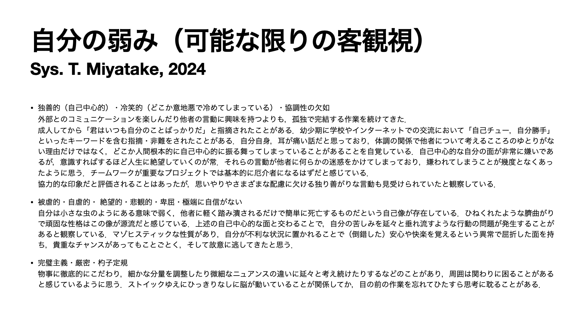
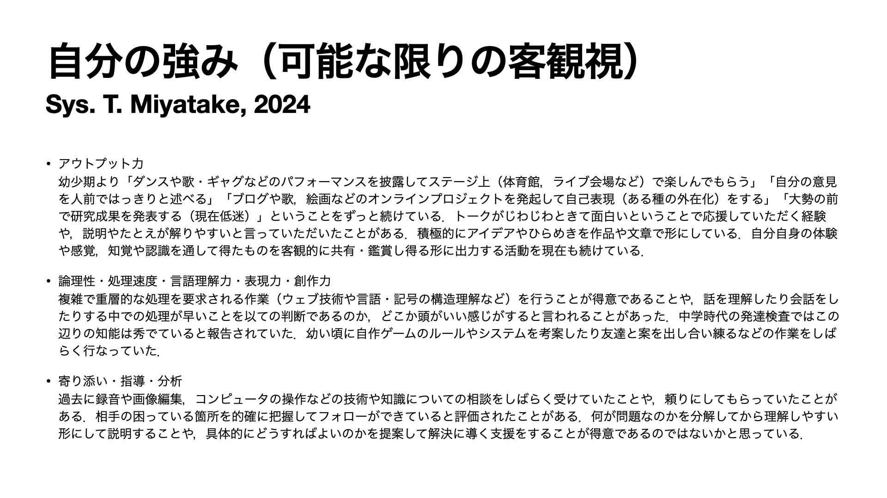
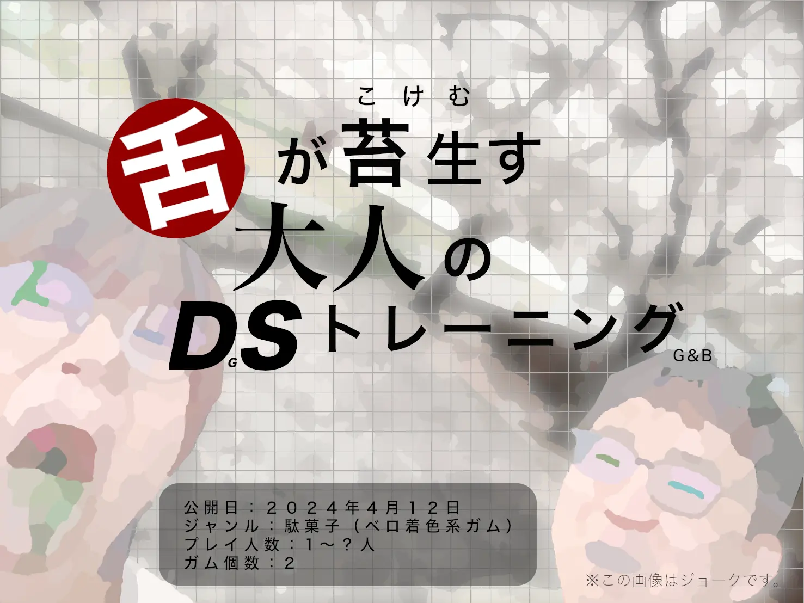
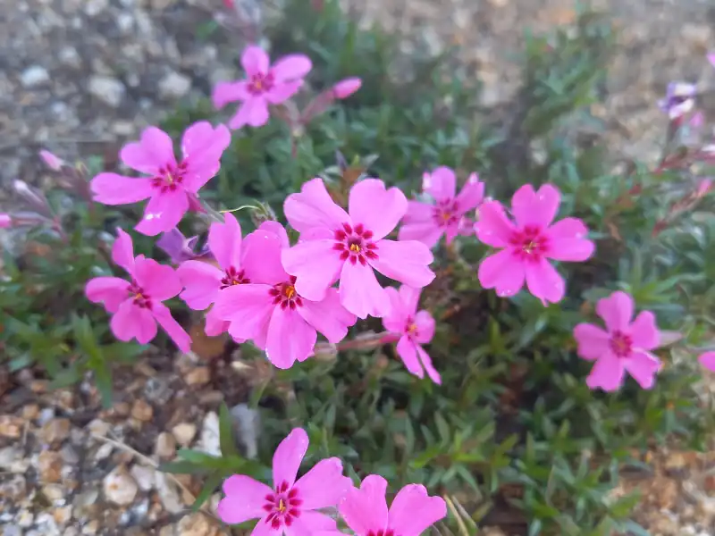
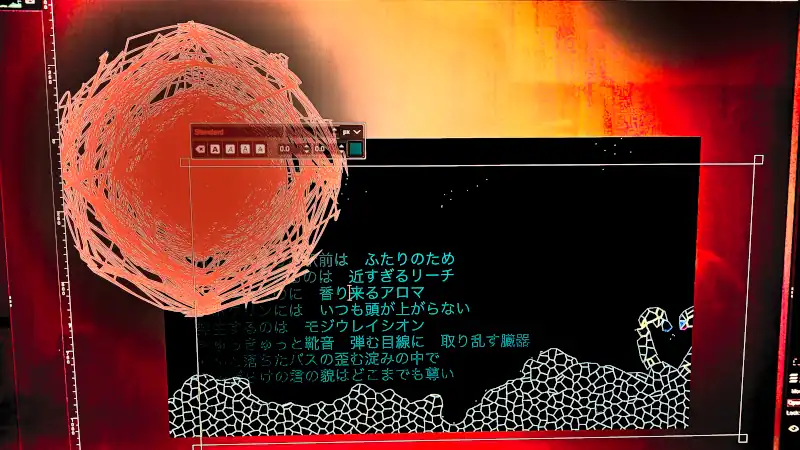

Weblog
"そこには, いつかの残り香." Sys. T. Miyatake (2023-2024)
記事一覧（総合）
目次
- トップページにて「追記」ログSys. T. Miyatake (Sep 15, 2024)
- トップページにて「ご報告」ログSys. T. Miyatake (Sep 15, 2024)
- これからどうしようSys. T. Miyatake (Aug 07, 2024)
- 遵守する大切さとオリジナリティSys. T. Miyatake (Aug 04, 2024)
- ゆるしSys. T. Miyatake (Aug 04, 2024)
- 【画像】強みと弱みをリスト化してみましたSys. T. Miyatake (Jul 27, 2024)
- セミの木登りSys. T. Miyatake (Jul 25, 2024)
- フォントファイルっていいなSys. T. Miyatake (Jul 24, 2024)
- 単独立頁：【ラジオ配信】ヴィランをあんまり責めないでね！（ネタバレ含む）【第10回】Sys. T. Miyatake (Jul 23, 2024)
- 【画像】重曹水に浮かべましたSys. T. Miyatake (Jul 17, 2024)
- 単独立頁：【ラジオ配信】論理学者！？厳密人が確かめてみました【第9回】Sys. T. Miyatake (Jul 14, 2024)
- 打算と功利... 生物の一種として考えるSys. T. Miyatake (Jul 04, 2024)
- 単独立頁：【ラジオ配信】比較と競争について（自論）【第8回】Sys. T. Miyatake (Jun 10, 2024)
- 趣味と仕事の認識上の棲み分けと計画Sys. T. Miyatake (May 14, 2024)
- 【詩歌画像】園のととのえSys. T. Miyatake (May 11, 2024)
- テクノロジに添削してもらいましたSys. T. Miyatake (May 07, 2024)
- 漢字の派生語と音Sys. T. Miyatake (May 06, 2024)
- わたしの課題Sys. T. Miyatake (May 06, 2024)
- HTML実験室 ちょっと見せます。Sys. T. Miyatake (May 04, 2024)
- HTML教材 鋭意製作中であります！Sys. T. Miyatake (Apr 29, 2024)
- 理解から晴れてゆくこころの景色（そして現在の興味）Sys. T. Miyatake (Apr 28, 2024)
- 老人曰くSys. T. Miyatake (Apr 27, 2024)
- アニマとアニムスと我々とSys. T. Miyatake (Apr 25, 2024)
- 単独立頁：【ラジオ配信】テクノロジーの進歩には味わいで克つ人間【第7回】Sys. T. Miyatake (Apr 23, 2024)
- HTMLデザインデータ提供の検討などSys. T. Miyatake (Apr 22, 2024)
- 翻訳アルゴリズムの謎Sys. T. Miyatake (Apr 21, 2024)
- ロジカルに処理してやさしさで見守るSys. T. Miyatake (Apr 18, 2024)
- 【写真・画像】花見へGO！Sys. T. Miyatake (Apr 12, 2024)
- 病気と付き合うSys. T. Miyatake (Apr 05, 2024)
- 【画像】半径とチーズSys. T. Miyatake (Apr 04, 2024)
- 安静と健康，素直と好意Sys. T. Miyatake (Apr 02, 2024)
- 自己の課題と就労への影響Sys. T. Miyatake (Apr 02, 2024)
- 【写真】庭前のお花たちをご紹介しますSys. T. Miyatake (Apr 01, 2024)
- 謙虚を探すSys. T. Miyatake (Mar 31, 2024)
- 生命の保護Sys. T. Miyatake (Mar 30, 2024)
- 単独立頁：【ラジオ配信】雑談【第6回・再開】Sys. T. Miyatake (Mar 29, 2024)
- 宝物Sys. T. Miyatake (Mar 24, 2024)
- 現実こそすべてSys. T. Miyatake (Mar 24, 2024)
- 活動の実感とユーザさんへの告知法Sys. T. Miyatake (Mar 22, 2024)
- 敵ながら遖Sys. T. Miyatake (Mar 17, 2024)
- コマンドを間違えてもSys. T. Miyatake (Mar 16, 2024)
- 味わうということSys. T. Miyatake (Mar 15, 2024)
- 単独立頁：【音声配信 + 説明記事】HTMLをたのしく学ぼう！【第1回】Sys. T. Miyatake (Mar 14, 2024)
- やさしさの恩恵Sys. T. Miyatake (Mar 11, 2024)
- 水族館に還るのぢや！Sys. T. Miyatake (Mar 10, 2024)
- 自己肯定とは何か（自論）Sys. T. Miyatake (Mar 10, 2024)
- ショート集 IX ‘未熟ゆえに可愛い’Sys. T. Miyatake (Mar 08, 2024)
- 継続の重要性Sys. T. Miyatake (Mar 04, 2024)
- のぞみ（共同作業者募集）Sys. T. Miyatake (Mar 03, 2024)
- 心の支えSys. T. Miyatake (Mar 03, 2024)
- 情緒についてSys. T. Miyatake (Mar 01, 2024)
- 単独立頁：【ラジオ配信】今後の展望（BGM有）【第5回・最終回】Sys. T. Miyatake (Feb 29, 2024)
- 刺激Sys. T. Miyatake (Feb 28, 2024)
- 物質に偏りすぎないバランス感覚Sys. T. Miyatake (Feb 27, 2024)
- 価値について再考Sys. T. Miyatake (Feb 27, 2024)
- 詩集：妄想バナ詩が聴こえる頃にSys. T. Miyatake (Feb 24, 2024)
- 相互性Sys. T. Miyatake (Feb 23, 2024)
- 単独立頁：【ラジオ配信】私のインターネット活動の歴史と思考などなど（BGM有）【第4回】Sys. T. Miyatake (Feb 21, 2024)
- 【画像】悩んでしまうよ？己が常軌を逸してしまうからSys. T. Miyatake (Feb 20, 2024)
- ショート集 VIII ‘人間は失敗する生き物かもしれない’Sys. T. Miyatake (Feb 16, 2024)
- 単独立頁：【ラジオ配信】私なりの哲学とゲームとお菓子（BGM有）【第3回】Sys. T. Miyatake (Feb 14, 2024)
- 発見したかもしれないSys. T. Miyatake (Feb 12, 2024)
- ショート集 VII ‘かわいい’Sys. T. Miyatake (Feb 09, 2024)
- ふたりのヒ・ミ・ツSys. T. Miyatake (Feb 07, 2024)
- いっしょSys. T. Miyatake (Feb 06, 2024)
- 昼寝の尊重Sys. T. Miyatake (Feb 05, 2024)
- ショート集 VI ‘固いつながり’Sys. T. Miyatake (Feb 03, 2024)
- ショート集 V（タエマナーク・ヒハーンとの対峙，マゾヒズム III・完，かわちくて逡巡 ほか）Sys. T. Miyatake (Jan 31, 2024)
- なかよしでありますSys. T. Miyatake (Jan 30, 2024)
- 魅惑のファッションSys. T. Miyatake (Jan 28, 2024)
- ショート集 IV（理屈こきこき！，好みのひと），今後の目標Sys. T. Miyatake (Jan 27, 2024)
- ショート集 III（オネスティ，家具，集中とシュガー）Sys. T. Miyatake (Jan 25, 2024)
- 単独立頁：【ラジオ配信】ハイテンション！？お笑いトーク【第2回】Sys. T. Miyatake (Jan 24, 2024)
- ショート集 II（抱擁，マゾヒズム II），ものづくりっていいなSys. T. Miyatake (Jan 22, 2024)
- 【ラジオ配信】好きなゲームを語りますよ！【第1回】Sys. T. Miyatake (Jan 21, 2024)
- いい思い出 その２「東京」Sys. T. Miyatake (Jan 20, 2024)
- ショート集（匂い，マゾヒズム，余 ほか）Sys. T. Miyatake (Jan 19, 2024)
- 限りないダンスSys. T. Miyatake (Jan 17, 2024)
- いい思い出 その１「恋愛ドキドキ」Sys. T. Miyatake (Jan 15, 2024)
- リラックスSys. T. Miyatake (Jan 15, 2024)
- 自閉と外界，全年齢対象のゲームSys. T. Miyatake (Jan 14, 2024)
- 成長Sys. T. Miyatake (Jan 11, 2024)
- アナリティクスによる一喜一憂，虚無との付き合い方についてSys. T. Miyatake (Nov 2, 2023)
- もちもちの掛け布団Sys. T. Miyatake (Oct 31, 2023)
- 占有する他者性を希釈する老人とはSys. T. Miyatake (Oct 30, 2023)
- 自己性は不安定，そして未知へのおそれSys. T. Miyatake (Oct 25, 2023)
- "価値がある" とは何か，そして近況報告Sys. T. Miyatake (Oct 23, 2023)
- 気軽に気楽に気持ちよくSys. T. Miyatake (Oct 20, 2023)
- 厳格であり支持的Sys. T. Miyatake (Oct 2, 2023)
題と著者と初版日と．
（読んでくれて，ありがとう．）
© 2023-2024 SYS.T.Miyatake
記事一覧（音声付のみ抜粋）
ラジオ配信コレクション
- 【ラジオ配信】ヴィランをあんまり責めないでね！（ネタバレ含む）【第10回】Sys. T. Miyatake (Jul 23, 2024)
- 【ラジオ配信】論理学者！？厳密人が確かめてみました【第9回】Sys. T. Miyatake (Jul 14, 2024)
- 【ラジオ配信】比較と競争について（自論）【第8回】Sys. T. Miyatake (Jun 10, 2024)
- 【ラジオ配信】テクノロジーの進歩には味わいで克つ人間【第7回】Sys. T. Miyatake (Apr 23, 2024)
- 【ラジオ配信】雑談【第6回・再開】Sys. T. Miyatake (Mar 29, 2024)
- 【ラジオ配信】今後の展望（BGM有）【第5回・最終回】Sys. T. Miyatake (Feb 29, 2024)
- 【ラジオ配信】私のインターネット活動の歴史と思考などなど（BGM有）【第4回】Sys. T. Miyatake (Feb 21, 2024)
- 【ラジオ配信】私なりの哲学とゲームとお菓子（BGM有）【第3回】Sys. T. Miyatake (Feb 14, 2024)
- 【ラジオ配信】ハイテンション！？お笑いトーク【第2回】Sys. T. Miyatake (Jan 24, 2024)
- 【ラジオ配信】好きなゲームを語りますよ！【第1回】Sys. T. Miyatake (Jan 21, 2024)
HTML学習コンテンツ 音声配信コレクション
- 【音声配信 + 説明記事】HTMLをたのしく学ぼう！【第1回】Sys. T. Miyatake (Mar 14, 2024)
題と著者と初公開日と．
（聴いてくれて，学んでくれて，ありがとう．）
© 2023-2024 SYS.T.Miyatake
#89
トップページにて「追記」ログ
※ この記事は当サイトが不健康に陥った際，その期間中（2024年8月下旬〜同年9月15日）にトップページに掲載された文章を残したログとなっています．(Pt.2/2)
追記
システィです．
休みながらしばらく自分と向き合っていました．
どのような形であれ，活動を継続することは大切なことだとの考えを捨てずに，再始動することを検討しています．
先述の対人的な緊張性のみならず，（批判や否定的な反応に対する）回避性と猜疑性・妄想性を強めに持つ性格を自覚していて，その苦痛から逃げ出してしまいかけていたように思っています．
ここはひとつ，自分の成長のためにも，そして「みなさんにきっと楽しんでいただける作品を生み出し続ける人」であるためにも，これまでの活動を再開できたらなと考えています．
近江商人の経営哲学にある「三方（サンポウ）よし」にあるのは「売り手よし買い手よし世間よし」ですが，これを拝借して「制作者よし鑑賞者よし世間よし」として，まずは制作者である自分自身が楽しんで漸進的で健康的な活動を行い，
それをみなさんに楽しんでいただき，その状況がいずれ世間にも良い影響を及ぼすようになれたら尚よし．そういった考えを持ちたいと思います．
まずは自分自身が無理のない範囲で活動を続けていくことを重点的に意識することにしてみます．
そもそも制作者自身が楽しんで活動していない場合の作品や表現というのは，鑑賞者側としてもそれでは楽しみ難いはずですからね．
近況におきまして，自らの猜疑性（疑り深さとその性質）との向き合い方については，認知療法的な観点で「他者は自己を（必ずしも）攻撃しようとはしていない」こと（認知の歪みを認識して原因を探り訂正する取り組み）や他者の言動の真意や感情への理解を深めていくことを個人的に実践しているところです．
原因理解として，個人的な経験としてのネグレクトやいじめ，ネット荒らし被害などはやはり関係していると思いますし，同時にそれらを必要以上におそれ，部分的に誇張し，いつまでも憎んでしまっていたことも認められるようになってきています．
なので，これからは「過去の敵を憎まず，もう今はそれらと和して」と和睦の心境を念頭に，今後の自身の行動を注意深く見守る意識を持つことにします．
「落ち着いて，穏やかに，面倒がらずに一歩ずつ」
また少しずつサイトを組み立てて復活させて行こうと思います．
先の報告の後，私はユーザさんたちを裏切ってしまった，信用をなくしてしまった... としばらく落ち込んでいました．
そうやって自業自得の悲劇に耽るマゾヒストはもうお呼びでない．私は少しそのように思っていて，今回の追記を書かせていただきました．
生きるための仕事の計画も進めつつ，これまでの有意義な創作活動の復活もできたらなと思っています．
一に生存，二に健康，三に生活，四に仕事．これは私がサイト活動のブログ記事の中で過去に述べたことです．
生存と健康に関わってくるのが生活と仕事なので，この順列は直線的な判断に基づいた意識的な優先順位に過ぎません．
実際は生活を安定させるためには仕事がうまくいっている必要がありますし，仕事がうまくいけばある程度の健康は確保できる部分もでてくるはずです（経済面の不安の軽減等）．
健康状態の向上・維持は引き続き散歩や睡眠，食生活などの生活習慣の改善，瞑想やリラックスなどの作業を継続することです．
日頃の家事や事務手続等はスムースに継続できているので，次の段階は仕事です．
これらはそれぞれ様々な仕組みで互いに関係し合って成立している事物だと考えています．
目指すのは生きていくための仕事と，創作活動（ライフワークの一つ）の安定した両立です．
...長々と自分のことばっかり書いてしまい，申し訳ありません．
これからは他の制作者さんたちとの共同作業や交流を少しずつ拡げていけたらいいのかな？とも思っています．
それでは，みなさんも無理をせず，のびのびと，自分のペースを大切になさってください．
またみなさんと交流できるときを楽しみにしています！
Sys. T. Miyatake - Sep 02, 2024.
[ Sys. T. Miyatake, (Sep 15, 2024. Last modified: none;) ]
#88
トップページにて「ご報告」ログ
※ この記事は当サイトが不健康に陥った際，その期間中（2024年8月下旬〜同年9月15日）にトップページに掲載された文章を残したログとなっています．(Pt.1/2)
ご報告
いつもお世話になっております．
唐突ですが，当サイトの活動を終了する運びとなりました．
理由としましては，唯一の活動者であり創作者である管理者の病状により，過度な批判にさらされている感覚から継続が不能になったという点があります．
もともとコミュニケーションが上手ではなく，緊張性の強いパーソナリティから活動そのものが無理を来していた点を認めていましたが，それでも楽しんでいただけている部分などがあるため意味のある活動だと思い，続けてきました．
しかし，しばらく休まなければならないと判断しました．
活動期間中にインターネット上の無関係のニュースなどへの世間の反応を発見したときには「自分もこうやって非難されるかもしれない」などと関係念慮のように思い，過去の出来事を思い出しては苦しんでいました．
静かに活動していたつもりでしたが，それでもいつ攻撃されるか，どこから責められるかを常に張り詰めて考え，まともな状態ではなかったと思います．
活動を楽しみにしてくださっていた皆様には申し訳ありませんが，自分という一個人の生命と健康を尊重し，活動を終了することにします．
孤独と批判と人間全般への恐怖と居場所のない不安から離れるため，この決断をいたしました．
これまでありがとうございました．またいつの日かお会いできることを楽しみにしております．
既に関係を持ってくださっている方や，活動を終了してからの個別の私との交流を希望される方は，以下のメールアドレス宛にご連絡いただければと思います．
以上，誠に勝手ながら，ご報告までとさせていただきます．
Sys. T. Miyatake - Aug 27, 2024.
miyatakehtml [at] gmail.com
[ Sys. T. Miyatake, (Sep 15, 2024. Last modified: none;) ]
#87
これからどうしよう
ヘイ，ガイズ．（←こらっ！）
改めまして，どうもです．システィです．（←それぢやん！）
...さて，これから進めたいプロジェクトに，次の三つの候補があります．
一「会いたいけど，話しかけたいけど，自信がなくて... 夏」をテーマにした新曲制作！
二「このサイトのウェブアプリ化」
三「過去作品の新規映像作品化」
まず一つ目．あの子とお話をしたいのだけれども，だがしかしだなあ，自分には自信がないのであります！！！そんなサマーを生々しく描いたピチピチな新曲を創出する（オータム到来までに完成させる目標）．
二つ目．サイトをもっと便利に，高速に，そして扱いやすい仕組みに転換する（完成は早くても2・3年かかりそうである）．ちなみに関連する計画中のHTML素材配布プロジェクトについては，昨今の世の需要に合わせて「ウェブアプリ素材配布プロジェクト」に変更するかもしれない．
三つ目．私のこれまでの音楽・イラストなどを踏襲した真新しいビデオの制作と公開．
実際にどうなるかのはわかりませんが，引き続きみなさんに楽しんでいただけるような活動にしていきたいと考えています！
お楽しみにね！健康を最優先に思い，まるで子供の頃の夏休みのように，のんびりゆっくり参りましょうかね．スィ・ユ・レイタ！バアイ！
[ Sys. T. Miyatake, (Aug 07, 2024. Last modified: none;) ]
#86
遵守する大切さとオリジナリティ
こんにちは．今回のキーワードは「自作曲の削除」「権利を守ること」「オリジナリティ」かと思われます．
自分自身が作品の著作者であることも関係するかもしれませんが，なにより一個人として「さまざまなルールや権利を守りたい」と思っています．人々が穏やかに活動できるのは，それぞれが遵守しているからだと思っています．ルールを守り，そしてルールによって守られているのですね．
そこで今回「古き良きHTML (2024 Remix)」という私の曲をサイト上から削除する判断をし，只今実行しました．
この曲には一部メロディのモチーフとして Microsoft 社のオペレーティングソフトウェア Windows XP の起動音と終了音のメロディに似せている特徴（想起させる目的）を持ちます．
それらのサウンドは著作物をサンプリング（録音）したわけではなく，メロディをそれらしく感じられるように耳コピして，音色は自身で近いものをシンセで合成し，それを打ち込んで取り入れました．
ただ，元ネタのメロディはアメリカ出身の作曲家，Bill Brown 氏（Tom Ozanich 氏の名義もあり）の作品（著作物）としてクレジットされています．
著作物の利用に際し，某著名プラットフォーム上などでの公開にあたっては，プラットフォーム側の包括契約にて，収益化しないなどの一定の条件下でカバー曲の演奏などが一部許可されている（契約範囲外の著作物は除く）らしいのですが，
私のサイト上での公開はそのケースではないため，管理者の立場から「厳密に処するべし」として，削除する判断をいたしました．
著作者の方に許可を取ったわけでもないままに，似たメロディを採用した作品を一般公開するというのは，たとえジョーク作品であったとしても差し控えたいなと思っています．
作曲自体は10代の頃で「当時の楽しい思い出とともにパソコンのメロディ含めたい」という創作の意図があったのですが，それを（個人がローカル環境で完結させるのではなく）一般に公開するというのは安直な思考と行動であって，
他者の著作物に含まれる要素を勝手に似せて使うことは良くないことだという考えを現在の私は強く持っています．
メロディを似せたフレーズを採用したことは，失敗だったと反省しています．
パロディ作品やトラック制作におけるサンプリングに関しても，きちんと著作者・権利者を見つけて連絡を取る（許可を申請させていただく）ことが重要であると私は考えています．
少なくとも，自分自身の行動としては「完全オリジナルのもの以外は採用しない」あるいは「相談する」ということを心がけて参ろうと思います．
ちなみに過去の Windows のサウンドは，これまでブライアン・イーノ（音楽家）氏やロバート・フリップ（ロックバンド，キング・クリムゾンのリーダー）氏などといった著名な方々が手がけているようです．
こういう話も興味深いですね．
生前から既に存在する（物質の存在，学問や芸術の概念や技法などの）カオスな要素ならびに秩序立った集合を，必要に応じて分解しながら，新たに集合させる方法や独自の様式にこそ創作のオリジナリティの本質があるように観れば，諸々の素材が既に用意されているという時点でそもそも完全オリジナルという概念はいとも簡単に崩れ去ってしまう（創造は模倣からはじまるということか...）．そんな虚しさと息苦しさと自然に寄り添いながら．結露した思考のそばで，汗だくの彼方にまだ匂わない夢を見ている．
by ぢ爺
[ Sys. T. Miyatake, (Aug 04, 2024. Last modified: Aug 15, 2024.;) ]
#85
ゆるし
自他の失敗を「ゆるす」ことができるといいな．
私はそう思っています．
心理学の研究（特に，アドラーなどの流れを汲み，個人の強みや人々の幸福度などの肯定的な面から考えるポジティブ心理学という分野に興味を持っています．ポジティブシンキングなどとは異なるものです）に於いても「ゆるし」という概念があるようです．
不安やトラウマなどで悩んだり傷ついていたりする場合も，この「ゆるし」は大切な観点ではないかと私は思っています．
かなり大雑把にいうと，自他の失敗に「ゆるす」ことが出来ている人は，悩みからの回復がよりスムーズであるようなのです．
また，ダメージを受けてから復活するにあたっての「回復力」のような概念として「レジリエンス」というものがあり，そこに関係する因子のひとつとして「ゆるし」が挙げられるようです．
具体的な例を挙げると，たとえば私の場合は過去のサイト荒らしやいじめっ子らに対して長年の間，なかなか恐怖や憎しみが消えきらない部分がありました．そのことを不意に思い出してしまっては，まるでそのまま当時のようにしんどくなってしまい，また被害に遭うのではないかと感じ，怖くなって何もできなくなっていました．
そこで，日々瞑想を続けながら彼らを「ゆるす」ことにしてみました．すると，少しずつこころが楽になってきたという経験をします．
そして，自分が実際にしてしまった自己中心的な行為を同様に「ゆるす」ことによって，必要以上に自分をダメなやつだと責めて気分が落ち込んでしまうことが減ったという体感が自己観察されているところもあります．
自他の失敗や良くない箇所を「ダメだ」と責めることをやめる，つまりそれらを「ゆるす」ことが，こころの健康において非常に大事なことなのではないでしょうか．私はこうした流れからそのように捉えています．
抑うつ状態の程度を強めないために
世の中で数を集めやすいコンテンツのひとつに「〜〜は絶対にしないで」「こんな人は嫌われます」「ダメ！禁止！」といったような負のキーワードで誘うものがあります．
その内容を実際に観察してみると「割と誰にでも起こり得る失敗」が含まれていることに気がつきます．
その要素を同じ構造の別のもので置き換えてみると「ほとんどの人が経験したことがあるであろう事柄」について取扱っており，
それらを「危険です・ダメです・終わっています」などと酷評し，続けて不安を煽るような説明をして，さらにはケラケラ笑ってしまっておられる（！）ようです．
...はい．ここでは，あくまで冷静に説明することにします．
こうしたコンテンツの視聴者の中には，私の直感では以下のような方が含まれているのではないかと思います．
「これはまさに私のことだ！しまった！申し訳ない...」
ついつい自責に陥ってしまいやすい性質を持った方です．こうした方々を刺激するタイトルやサムネイル画像を作成して，コンテンツを再生させ，結果として視聴者は抑うつを強めてしまっている "良からぬもの" なのではないか？と私は捉えています．
その感情と引き替えにコンテンツ提供者は再生数を稼ぎ，収益化を達成しているのでしょう．
私はこういった狡猾で人の心を蹂躙するコンテンツを制作する者を観察することによって，ひとまず以下の結論を出します．
こればかりは正当化に落ち着く
自己正当化というと，少しネガティブな文脈で使われるイメージもあるかもしれませんが，上述のような「気にしやすい人，繊細な人，悩んでいる人」を刺激して
「それはダメです」などと責め，挙句の果てには「厳しいことをいうようですが，頑張ってください」などと締めくくるような支配的な性質を露呈させる醜態を晒してしまっておられる素晴らしい方（！）なんかよりは，自分はまだマシだと考えてもよいのではと思います．
「このコンテンツは良からぬものだな．」
自分の思考は常に「正しくないかもしれない」と引き締めつつも，こうしたケースに対しては正当であると判断して扱ってもよいと思うのです．
人間は失敗する生き物
人間はつい失敗してしまうものなのですよね．ちゃんと気をつけているつもりでも．
それをついつい責めてしまい「自分はダメだ」と悩んでしまうことがありますよね．
ですが，それでも人間は失敗をしてしまうことがあるのです．
たとえば手術に失敗してしまった外科医が自分をダメなやつだと責め続け，遂にはうつ病に罹ってしまったというケースがあるようです．
こういったような失敗や悩みによるこころのトラブルには，誰しも向き合った経験があるはずだと思っており，やはり人間は誰しも完璧ではないということがわかります．
「あのとき，自分はダメだった」そう思って苦しいとき．
「大丈夫．今後はそうならないように気をつけていこう」
どうやら過去の失敗をゆるすことで，人間は健康を取り戻しやすくなるという研究があるらしい．それらを，このようにして活かしていくのですね．
おわりに
失敗した他者を責めることはできないのは，自分だって失敗したことがあるから．
他者に寛容な態度で接する人というのは，きっとその人自身もこれまでに失敗してきて，それらをゆるしてきた人ではないでしょうか．
他者にやさしくしつつ，自分にもやさしくする必要があるというところには，この辺りも関係していそうですね．
自分のダメなところに注目することは抑うつにもつながりやすくなりそうですので，ほどほどにしていたいものです．
ダメなところは，きちんと反省して，それ以降はもう「ゆるし」ていきましょう！
本日もお読みいただき，ありがとうございました．
ぜひみなさまも，自分のいいところをしっかり褒めて励ましてあげてくださいね．
P.S. あの子が四苦八苦しながらも少しずつ成長していて，好きなことを楽しみながら日々を過ごしていることを想像して，いまとっても幸せな私です．
[ Sys. T. Miyatake, (Aug 04, 2024. Last modified: Aug 08, 2024.;) ]
#84
【画像】強みと弱みをリスト化してみました
先ほどまたしても自分は独善的で自己中心的でダメな人間だと感じて落ち込んでしまったので，自分なりに自分自身の強みと弱みを分析してみました．
なるべく主観が省かれるように注意して観察してみました．
劣等感を募らせてしんどくなるばかりではなく，弱みも含めてちゃんと肯定できるようになりたいと思っています．
自分は自己中心的な人間ですが，そこはきちんと反省・改善しながら，どうか強みを活かして生きていけたらと考えています．
強みは自慢しているみたいで申し訳ないですし，弱みはなんだか情けなくなってきて悲しいのですが，読者の皆さんの何かの参考になれたらなと思っています．
ということで，なんだか恥ずかしいわけなのですが，ちょっと画像を作ってみましたので，ぜひご覧くださいね．（以下，見出し文字をクリックで拡大できます）


どうでしたか？今回もありがとうございました．
[ Sys. T. Miyatake, (Jul 27, 2024. Last modified: none;) ]
#83
セミの木登り
セミの幼虫が，今夜！羽化しようとしているのでしょうか？
というのも今日の午後，枇杷の樹の下の土の中から出てきたと思われるセミが，必死に木を登っていたんです．
その樹皮は私が触る限りですが，少しすべすべしている気がするのですが，それが関係あるかどうかはわからないのですが，何度も落下してしまっていました．
ボテ！と落ちては，落ち葉をシャク！と言わせ，またシャワシャワとそこから這い上がり，めげずに何度も木登りに挑戦していました．
思わず「がんばれ！」といった具合で，しばらく観察してしまいました．
そろそろ大合唱をはじめる時期ですね．楽しみです．夏本番，間近ってことでしょうね．
本日，筋トレをしながらトレーニング音楽を自作して，息切れフェチの皆々様のためにスクワット吐息を録音し，それを終えた後の調理途中の出来事でした．
セミも自分達の音を奏でているんだろうな．自然の中の我々ですね．諸法無我．それにしても最近，ちょいと暑すぎるて〜！涙
みなさんもご自愛くださいね．
[ Sys. T. Miyatake, (Jul 25, 2024. Last modified: Aug 13, 2024;) ]
#82
フォントファイルっていいな
先ほど，いくつかの漢字・漢字に纏わり関係する文字を再現（表示）するための無償フォントを PC/Mac 両マキーネ（愛機）にインストールしました！
これは嬉しい話ですね！
メモランダム・ザ・アポクリン！（久々の なんてね！Pt.9）:
ちなみに拡張子 .ttf は TrueType（Apple社が開発）形式のフォントであり， .otf は OpenType（TrueType をベースにして，マイクロソフト社とアドビ社が共同開発した別物．アドビ社による古のページ記述言語である PostScript フォーマットをサポートする）形式のフォントのようです．
今回インストールした２のフォントはどちらも拡張子が .ttf ですので，両方とも TrueType 形式のフォントファイルであることが示唆されます（この事実を生々しい人間がこうして窺い知ることができます）．；
ひょっとすると，これは備忘録ってことなのかもしれません．
どんどん漢字学習・研究に役立てて参りたいという次第であります！
追記:（私の Macintosh 版 Firefox 環境に限っては一部適応できず，解決中...）_ ;
Jigmo
字雲フォント．Unicode の CJK 統合漢字拡張 B〜I を表示するために導入しました！こちらは無償で配布されているようです．
たとえば，次のリンク "Wiktionary:漢字索引 部首 一（フリー Wiki 辞書・字典サイト）"
では，一部の漢字が □ で表示されるなどして（通常は）きちんと表示されませんよね．これを解決するために「中国語・日本語・朝鮮語」を意味する「CJK」統合漢字拡張に対応した，言ってみれば「漢字表示に頼もしいフォント」かなと思われるフォントをインストールしました．
このフォントのセット（ダウンロードした圧縮フォルダ内に３つの .ttf ファイルが同梱されていました！）１つ（集合）によって，今のところほぼ全ての拡張漢字が表示可能になりました！
ありがとうございます！
以下，頒布ページ（敬称略）とそのURL．
Jigmo（字雲）フォント｜https://kamichikoichi.github.io/jigmo/
Tangut Yinchuan
おそらく読みはタングート・インチュアン．おそらくタングート（かつて存在したチベット系の遊牧民「党項」，7世紀～13世紀ごろ．また彼らが独自創作して用いた言語「西夏語」．）と銀川（インチュアン，ぎんせん．中国にある市．西夏の都，興慶府が置かれていた地域．興慶府周辺は，はじめ赫連勃勃の根拠地としてあらわれた地域．それにしてもカクレンボツボツという音はどこか愛おしい．）のことでしょう．
頒布元ページ説明文によると，銀川市にある北方民族大学の景永時教授によって作成された "XXZT（西夏字体）" に基づいたフォントのようです．
チンギス・ハーンの侵略によって滅ぼされるまで成立していたチベット=ビルマ系民族が建てた国家「西夏（セイカ）」の言語，「西夏語（タングート）」専用の筆記体系で扱われる「西夏文字」を私のPC上で表示できるようになりました！
漢字の遠戚（血縁の遠い親戚）と言える，西夏文字を参照してそのまま（画像ではなく，飽くまでフォントとして）ブラウザ上でも表示できるようになり，ひとまず満足しています！
こちらも無償で配布されているようです．
以下，頒布ページ（敬称略）とそのURL．
Tangut Yinchuan - BabelStone｜https://www.babelstone.co.uk/Fonts/Yinchuan.html
健康，安心，安全，そして研究へ
フォント製作者さんたちには感謝の限りです...！
アプリやコンテンツなどには，それぞれインストール・利用するにあたってのルールや条件がありますので，必ず遵守して利用されたいものです．
なんだかわくわくしてきたぞよ！時間の許す限り，学習と研究に取り組みますぞ．
皆さまも，呉々も健康第一で参りましょうかな．
[ Sys. T. Miyatake, (Jul 24, 2024. Last modified: Jul 29, 2024.;) ]
#80
【画像】重曹水に浮かべました
大事に育てているマリーゴールドの花が，萎れてしまう前に首がもげて落下してしまっていました（トリさんたちの仕業カナ？）．
それを見かねた私は，空しく悲しくポツンと感じてしまったので，部屋に飾ってしまうことにしました．
洗ってしまって置いてしまってある調味料の空き瓶を用意してしまいました．
そこに，重曹を薄く溶かしてしまった液をつくってしまって，容れてしまいました．
新しいお部屋なのですが，どうやらぴったりとサイズが合ってしまったみたいです！
孤独作業の部屋の中で，非常に鮮やかに存在してしまってくれています．
なんだか華やかな気分のままに，いつもの椅子に着座してしまっています！言わせておくれよ...？
ありがとうございます，Tagetes-san！オレンジ色の君はキレイでカワイイね！！しばらく一緒によろしくね！！！＾＾
[ Sys. T. Miyatake, (Jul 17, 2024. Last modified: none;) ]
#78
打算と功利... 生物の一種として考える
物事には一長一短があるはずなので一概に言えることはないはずだと思っています．
倫理的な正しさの中であれば功利的に考えていくことも善だと考えることもできるはずです．
ただ，世の中ではこの倫理観が「優劣の意識」によって汚濁したものになっている気がしています．
ここで私は昨今の「生物にある根源的な価値を無視した要不要論」に悲しみを覚えつつ，競争や比較の弊害（デメリットの悪目立ち）に触れながら生物の価値について考えます．
大まかには「（経済的：利他的，自己防衛的：利己的を問わず）利益の追求による，人類の根源的損失とは何か？」といった辺りかなと思います．
人間たちは勘違いをしているのではないか？ヒトって，そんなに偉いのか？生物の一種として，その価値観を見直されたし！
機械に向かう人類
悩むことが絶えない私にとっては「悩まずにいたい」と願うばかりの日々です．
それもあって「論理的（機械的）に処理する」方法で様々な問題が解決してきたと思っています．
ただ一方では「損得勘定で物事を考えていないか？」と自己批判を展開しているところもあります．
要するに「算盤尽くであるべきではない！」というような批判をしているということであって，これが繰り返されると抑うつに接近すると感じています（俗に言う「べき思考」の発生によって）．
幼少期から（運動神経・学業成績・特殊な才能などの）競争に駆られる実利主義的な時代を経て，我々にはもともと打算的な面が幾分かはあるはずだと思います．具体的には「競争に勝たねば敗北者としての惨めな将来が待っている」という状況の想定からそれを回避しようとする辺りなど．
実際に，世の中でも価値のあるものは大切にされ，優遇される傾向にあるはずです．そのため，防衛としても（実際以上に）「私はすごいのだ」と傲慢になったり，見栄を張ったり，（実際の）成績や実績をひけらかして強がってしまう現象だったりは当然のように起こりうるのではと考えています（歴史の人物や出来事を少し観察するだけで，これでもかと見えてくる）．
縦社会は打算的な世界
ちなみに私は誰かから「あなたは優秀です」という評価をされることは苦手で，私にとっては「あなたは駄目です」と言われる場合と同じ体感を得ることが理由です．
体育会系の部活や会社組織などの縦社会においては「偉い（目上の）人間に気に入られ，出世する」ということが，恰も素晴らしいことかのように評価されることでしょう．
私はまったくそう思っていません．なにもうれしくありません．そういった世界から遠い場所にいるべきだと感じています．
なぜならそもそも「自分が出世するために」と考えて行動していることが醜いと感じるからです（利他的な貢献を意図した出世であることであるケースの考慮は含めつつ，人間である以上意図的な出世というのはどういうものなのでしょうね）．直感的に苦手であると感じてしまいます．
それは小学生ごろの私自身がまさにそういった態度で動いていて，あれは良くなかったと反省しているところも影響していると思います．
いまもその良くない行動の名残があるかもしれなく，なるべく直したい部分であるからこそ，余計に外の世界にあるそういった面も苦手に思って避けているのかもしれません．
また，幼い頃のショッキングな体験を想起させないためにも「すごいと思われたい」「自分は強いんだ」「こんなにも立派なんだ」といった態度につながってしまうこともあるのかもしれません（あの弱々しい駄目な頃には戻りたくない，といった感情などによって）．
個々人の自我を載せた舟の行方
破壊されないように守るために表面化される醜い性格とその行動と感情の歪み．
最初は防衛反応として育まれた領域が，いつの間にか抑うつに蝕んでいく厄介な空間に広がっていく．
はじめは「自分を守るために」であったはず．それがやがて「誰かを傷つけてしまう」．
そんな悲しい未来はみたくないな．
「優秀だから，才能があるから，勝者だから存在価値がある？いつまで人間はケダモノ時代に執着しているのだろう」．
人の上に立つ人間は，実利的で傲慢で打算的な面が色濃い．そんな人間にはなりたくないなという気持ちがある．
優劣や因果に縛られて，人類は悲惨なほどに高慢になってしまった．
こころがあるなら
出世が全て？数字には大きな価値がある？そこにはこころはありますか？
我々にはこころがある．ロボットではないのですから，数字や計算はほどほどにしていきましょう．
生物には価値があります．人間は特別ではありません．人類の歴史なんて，ほんの一瞬です．粉塵です．虚空です．
花が綺麗です．虫がかわいいです．風がきもちいいです．未来は明るい．こころがある．
人間には悩みがある
冒頭に回帰しましたね．きっと，この人類の醜ささえもが，地球上の生物のエコシステムの上での価値なのかもしれませんね！
悩んでいるのだから，それだけで価値があるはずです！おめでとうございます！
...さて，休憩しましょうか．
[ Sys. T. Miyatake, (Jul 04, 2024. Last modified: Jul 24, 2024;) ]
#76
趣味と仕事の認識上の棲み分けと計画
より広範な開発スキルを磨くことも兼ね，動的なサイトへの転換を計画しています．
たとえば絵画カテゴリにはたくさんの画像が掲載され，その表示に時間がかかってしまっていますね．
それはすべての画像を一度に表示していることが原因なので，ユーザさまの操作で適宜必要な画像をデータベースから探索して表示していただくことを可能にすることで解決しようと思います．
そのためには，静的なHTMLに関わる周辺技術だけではなく，新たに Next.js や React などの技術・サービスを導入する必要があり，いま学んでいます．
これからの開発には必須となるであろうこうした（絶え間なく変わり続けている）先端の技術を学び，自身のプロジェクトにも積極的に導入していこうと思います．
また，このサイト活動プロジェクトでは引き続き収益化の予定は一切なく，みなさんに楽しんでいただくことが私にとっての収穫だと思っています．
どなたかに作品や記述を楽しんでいただけており，時折ご感想をいただいたり交流ができたりするということがうれしいことであり，活動の主目的でもあります．
もちろんユーザさまのご希望で寄付(Donation)をいただけるのであれば嬉しい限りではあります．ただ基本は単なる趣味であってほしいという思いが強いです．
とはいえ独自ドメインやストレージを取得したり借りたりすることにはコストが必要だったりします．
その点に関しては，趣味活動とは完全に分離して行う職務上の稼ぎ（私個人の給与分）から支出しようと考えており，別途仕事もがんばっていかないとなと思っています．
表現活動・創作活動はあくまで私にとって「趣味」であって，そこで収益云々という話になると個人的な心情としてなんだか白けてしまいます．
活動は常に「たのしいこと・自由であること」が大前提（必須条件・要件）であって「無理なこと・面倒なこと」にはしたくなく，どうやって経営を回すかといえば上述の通り趣味としての個人的な領域から出すことがよいかと思われます．
好きな漫画を買うことに代金をお支払いするように，好きなショーを観賞させていただくために料金をお支払いするように，趣味としての活動費は自腹がいいのかなと思っています．
そのために働く．これでいいかなといま考えています．
動的な仕組みに転換したところで，公開するメディアファイルが増えれば当然サーバのストレージ容量はより多くの領域が必要になってきますので，
そのあたりもどうにか工面していけたらなと思っています．
そろそろ仕事しなきゃな．少しずつ元気になってきたし．無理せず，こなしていこう．
あと，動的なサイトにすると「個別の作品やブログ記事を検索する」機能を実装したり「1ページに収めるには多すぎる作品群を（たとえば10作品ごとに）ページ分割する」"ページネーション" も可能になります．
無駄な通信を減らし，効率良く表示し，扱いやすく軽量なサイトを目指していけたらと思います．
作品制作だけではなく，その展開の場も自作（DIY）していけたらいいな．昔からそうやって自分でじっくり考えて工夫して作り上げてきた自負がありますのでね．
フロントエンドだけではなく，バックエンド（サーバサイド）的な処理や仕組みも眺めていこうと思います．
無理に学校に通ったり，誰かに習わなくても，たとえ無償であっても，いまの時代はかなり深い段階まで学ぶことができ，実験する環境も充分にあります．
このサイト・活動も，大きくしたいぞ．それは名利や世間体を意識した存在感の規模ではなく，枯淡で謙虚な姿勢で臨む充実度の規模ということです．
驕る平家は久しからず．いつの時代もどんな人間も，邯鄲の夢．我々は吸って吐けば，あっという間に老人となり，土に還ることでしょう．
「見栄を張って衒いの日々に苦労するよりは，細々と小さな "いま" を楽しもう！」そして「謐かに味わうこの時間」「いまここにある穏やかなこころ」を大切に感じながら今後をおもうのです．
つらいこともあれば，楽しいこともあるはずだ．これからの人生は，明るいはずだ．
今回もお読みいただき，ありがとうございました．
[ Sys. T. Miyatake, (May 14, 2024. Last modified: Jun 13, 2024.;) ]
#75
【詩歌画像】園のととのえ
ただいま芝桜の刈り込みを終え，一服しております．
極度の心配性（非常に神経質で慎重な性格かと思われます）の私は細かい事を徹底的にこだわる気質があるのですが，
日光を浴びながら庭をととのえることで，リフレッシュ効果が期待されるかと思われます．
非常にそう思われる訳でありますので，いまはそれはそれはゆたかな気持ちといった次第であります．
「刈り込みを終えました！」ぽかぽか陽気，こころの陰鬱もすっかり消毒された模様です．
ここでひとつ
園のととのえ 雑巾様の 日頃のでかしに
爽快颯爽 ふさぎは曩しき 物語かな
〜 觀念奔逸庭淨樂爺 より〜
御閲読賜れば忽ち有難き仕合せ．
[ Sys. T. Miyatake, (May 11, 2024. Last modified: none;) ]
#74
テクノロジに添削してもらいました
対話型のAIサービスに「スクリプトが正しく機能しない問題」を解決してもらいました！
すばらしいですね！無事，解決してうまく動作しました（具体的には，当サイトの絵画カテゴリにおける高刺激性を持つであろうと思われる画像のぼかし解除・再適用のトグルボタンを実装していたのだ）．
人間に質問すると，相手の時間と手間を取ってしまいますし，原則料金をお支払いするようなイメージにどうしてもなってしまうかなと思います．それも相手が人間なのでコストはそれなりにかかってしまうはずです（やり取りが複数回に亘る場合の時間単価として考えても膨らみやすいはずです）．
その点，現在はAIが無償の範囲でも充分な回答を返してくれますし，必要があるなら（サブスクリプションプランに）納金して機能拡張することも検討できます（いまのところ私には必要ありませんが）．
ちゃんと不具合の原因と具体的な解決方法まで淡々と順を追ってキャッチボール的に説明してくれました．「人間に相手してほしい！」という条件が含まれない場合であれば，もはやAI一択なのでは？と思うようになりました．
そもそも私はプログラムの開発者なのですから，人間に聞くというのは（時間的にも価格コスト的にもお手数をお掛けします的にも）パフォーマンスが極めて良くない（不合理・非効率・無駄が多い）と感じます．
ただ「それでも人間に教えてほしいのだ！」という方に向けて，先の記事のような「HTMLを学ぼう」コンテンツはまだまだ需要がありそうだと踏んでいます．
開発者側のような論理思考が苦手な方というのはむしろ多数派のような気がするので，人間レクチャの需要がなくなることはまだまだ遠い話だろうと私は考えています．
どちらが良いかということではなく，テクノロジはテクノロジでありがたく，人間のこころは人間のこころで素晴らしい．そういうことが言いたいわけであります．
ありがとう，テクノロジ君．これからも，よろしくね．君は非常にオーサムだね．実にクレイジーさ．最高にクールだよ！
...だがのう，人間さんの「こころ」っちゅうもんにゃのう，ほかほかの「温もり」っちゅうんがあるんぢやよ．忘ること勿れぢや〜！ぞ？
[ Sys. T. Miyatake, (May 07, 2024. Last modified: May 30, 2024.;) ]
#73
漢字の派生語と音
浅学菲才の私です．「熟する」を訓読みだと思い込んでおりました（恥）．
このように音読みの「音」を用いてサ行変格活用の動詞（サ変動詞）にしたものは，字典にて訓読みではなく「派生語」として登録されているようです．
例えば「熟する」「期する」「服する」「画する」「目する」「興ずる」など．
ふむふむ．きちんと学んでいこう．
追記 (Jun 5, 2024)
派生語というのは「熟す」を「熟する」と変化した場合を指していたようで，上記の語らは基本的には派生語というよりは「音を動詞化したもの」と扱うようです．
訓読みというのは日本での「訓」で読んだもので，こうした「音を使って動詞化したもの」は訓ではないということになるようです．
日本語としての読み方をした場合が訓読みであるようですが，熟語の読みとして，単字（漢字一字一字）ではなく熟字（二字以上構成の熟した語）単位での訓みを持つ「熟字訓」や，（たとえば外来語を）漢字表記で宛てた「宛字」というのも存在しますので，どういった扱いで纏められているのかを眺めてみると，自己の頭の中のケイオスな（無秩序に散らかった）ことば群が整理されていくのかなと思います．
時代とともに消えていった訓というのも確認できるので，やはりことばというのは常に変わり続けているものなのでしょうね．
音は流入時代昇順に「呉音・漢音・宋音・唐音」の4種類がありますね．少し詳しく調べてみました．
まず漢音が最もよく残っている音読みかと思われます．遣隋使・遣唐使や留学僧らが日本に持ち帰り，唐代の長安あたりの発音に由来するとか．
呉音は漢音より前に音が伝わって残ったもので，律令用語などで使われた面があり，仏教用語などでは現代でも頻用されているようです．
宋音（中世唐音）は鎌倉時代の臨済宗・曹洞宗つまり禅宗などに用いられた音のようです．（白：パイ，上：シャン など）
唐音（近世唐音）は江戸時代の黄檗宗を通じて流入した音とされており，明代末期から清代初期の音の影響があるとのこと．（竹：シツ，行：アン，茶：サ など）
非常に面白い．
[ Sys. T. Miyatake, (May 06, 2024. Last modified: Jun 13, 2024;) ]
#72
わたしの課題
2つ解決したい大きなテーマがあります．
簡潔さ
話が長く，長文になりやすく冗長（無駄な情報量が多い）で「結局，何を言いたいのか？」と評価されることが少なくないかもしれません．
私は言葉の選び方が下手で，聞き手が理解や解釈に時間を要するものになってしまっていたかもしれません．
原因は私の低い能力（経験・反省不足もあるかもしれない）の問題と，次の項にある「性格の偏執的な部分」かなと考えており，前者の点では「文章（・トーク）内容の評価・改善を繰り返す」ことに取り組むことで解決に向けて進んでいこうと思います．
具体的には，文章を簡潔に仕上げる技術的なノウハウを調べ，参考にしてみようと思います．
我が偏執性
おそらく生まれながらに疑り深い特性「偏執病（パラノイア）的性質」を強めにもっている（極端な心配性な）のかなと考えています．
物事全て根本的に疑いを持ち，私の人間不信というのも先天的なものである可能性を私自身では感じています．
最近は統合失調症（スキッツォイド）的な顕著な幻覚・妄想も少なく，どちらかと言えば根本的でさほど程度の強くない猜疑・疑念が満遍なく拡がっているように観察しています．
おそらくパラノイア的な領域で，先天性の要因と素因に加えて幼少期に育まれた極めて低い自己評価によって起こっているであろうものだと考えています．
先の記事で "攻撃者への同一化" フリー百科事典『ウィキペディア（Wikipedia）』 について触れました．
その研究者であったシャーンドル・フェレンツィは，実母や乳母に虐待されて育ったと言われており，心的外傷の研究を晩年まで行っていたそうです．
「当事者としての苦悩」を以て研究に励んだことになるかと思われますが，彼らの研究にあるように，やはり「人間が疑り深くなる原因・理由・流れ」というものは何かあるはずです．
トラウマに基づく治療の場合と異なり，根本的な解決は難しいであろう「パーソナリティの異常（正常からの逸脱）」に関しては，前述のような自己評価を「肯定的に変えていく」努力をすることで，少しでも緩和できそうだと思っています．
二極的思考「不可能だから-何もしない」のではなく「難しいけど-少しでも何かしよう」と考え，行動していこうと思います．
それでも強く生きていく
お読みいただき，ありがとうございました．
[ Sys. T. Miyatake, (May 06, 2024. Last modified: May 11, 2024.;) ]
#71
HTML実験室 ちょっと見せます。
どうもです！管理者です！
製作中の教材のパート「試してわくわく！HTML実験室」をフライング公開いたします！
透かし文字「Sample」も薄く設定して書き出しておりますので，この段階でもう既にお楽しみいただけます！（やったー！）
内容はとってもシンプルです！全く HTML 触ったことないよ！という方向けとなっています！
ぜひ「へえ！ウェブページはこうやって作るんだ」という感覚を，是非ご体感ください！
（ちなみにエディタを別途用意する場合は，デベロッパサイトから無償ダウンロード可能な "Microsoft - Visual Studio Code" 辺りが割とオススメかなと思います！私はまわしものではありません！笑）
今回もお読みいただき，ありがとうございました！それではみなさん，くれぐれもご自愛ください．
[ Sys. T. Miyatake, (May 04, 2024. Last modified: none;) ]
#70
HTML教材 鋭意製作中であります！
どうもです！管理人です．
とりあえずHTMLの教材を「教科書スタイル（プレゼン形式）」でつくっています（以下の画像参照）．
このままですと，ちょっと学校クサすぎるかなと思い，もっと親しみやすい装飾を施した「フレンドリィ・エディション（仮）」も別途ご用意させていただこうかなとも検討中です！
このような堅苦しい説明でも良いのですが，一方で「気軽に楽しんでみたい」という需要にもお応えすべく，軽快なトークとともに，ユーザのみなさまに「おもしろい！」と思っていただけるようなコンテンツ制作に励みたいと思います！
世界的に日夜研究に励まれている AI を駆使して生み出されたサービスをはじめ，便利なツールで溢れる昨今の世ですが，そんなときこそ，変に焦ったり便乗したりするのではなく「わくわく楽しみながらシステムから（本質的に）理解していく」という落ち着いた愉快さをお届けさせていただこうと思っております！
体系・構造（システム，ストラクチャ，アーキテクチャ， "造り"）から理解しておくことで，時代や状況が変わっても（目まぐるしく変わり続けておりますね！）柔軟に対応する力が身につくのではないかと私は考えます！
「便利だから楽をしよう」として損をするぐらいなら「面白いから本質から理解しよう」として利益を上げる方がいいのではないか？というのが私の考えなのであります．
お楽しみに！それでは，しっかり休みを取りながら，のんびり参りましょうか．
今回もお読みいただき，ありがとうございました！
[ Sys. T. Miyatake, (Apr 29, 2024. Last modified: May 30, 2024.;) ]
#69
理解から晴れてゆくこころの景色（そして現在の興味）
十分に休息し，創作・表現・作品制作やこころのテーマの探究だけではなく，技術や学習に取り組み始めてから結構気持ちも楽になってきました．
HTML学習（レクチャー）コンテンツの制作もスムーズに進んでいます．
そしてまた興味が湧いたので，精神分析・心理的な概念を眺めていたところ，興味深いものがいくつか見つかったので，ご紹介（共有）させていただきます．
Identification with the aggressor
「攻撃者への同一化，攻撃者との同一視」と訳される概念です．
加害者と似てしまう自分がいるかも？と感じたことがある場合は「なるほど」とつい溢してしまうはずです．
Wikipedia にも掲載されており，自他の悩みに理解が深まるかもしれません．
"攻撃者への同一化" フリー百科事典『ウィキペディア（Wikipedia）』
Traumatic bonding
「外傷的絆」と訳される概念です．トラウマティック・ボンドとも．接着剤のボンドと語義は同じ類のようです．
自分を傷つける相手から離脱できない．また戻ってしまう．これを「再犠牲者化」というが...
"外傷的絆" フリー百科事典『ウィキペディア（Wikipedia）』
Gaslighting
ガスライティング．古い映画作品に登場するシーンから，人間の認知とそれが歪められる過程，その反応についてなど書かれています．
どうすれば身を守れるのか，どのような手段なのかを知っておくことは，何か防衛の役に立つかもしれません．
フロイト（精神分析学の祖とされる人物）の手法のいくつかはガスライティングとみなされているようです．
また，純粋な興味として，社会的成功者にも見られる傲慢さと自己正当化，それでいて魅力を感じさせるといったところの「不思議さ」について考えてみるのも面白そうです．
"ガスライティング" フリー百科事典『ウィキペディア（Wikipedia）』
The forbidden toy experiment
「禁じられたオモチャの実験」と訳される実験などを記述した英文のページです（日本語が良い場合は，お使いのブラウザの自動翻訳機能なども便利に使えるかと思います）．
「ダメ！」と「より恐く」言われた場合に，対象への執着が「より強く」なることを，ちゃんと実験して観察して考察して... そんな研究がなんとなく見えてきます．
人間には恐怖によって歪められてしまう何かがあって，それらについての理解を深めることで新たな発見があるかもしれません．
"Insufficient justification" Wikipedia, the free encyclopedia
これらのリンク先はフリー百科事典なので，無償で読むことができます．
もっと気になった方は検索をして，いろんな論文を見つけてぜひ読んでみてください．新しい発見があると思います！
いまの時代はこういった無償で取得できる資源を存分に活用して，どんどん学習を進めていけることが素晴らしいなと感じます．
ということで，私も引き続き作業をしていきます．みなさんも，ゆっくり参りましょう．
今回もお読みいただき，ありがとうございました．
[ Sys. T. Miyatake, (Apr 28, 2024. Last modified: none;) ]
#68
老人曰く
どうもです．管理者です！
冒頭では，このサイトで進めていきたい「無償のHTML学習コンテンツ」の進捗状況について少し述べます．
計画としては「このサイトのページソース（HTMLファイルの内部コードテキストデータ）を例に解説するプレゼンテーション形式での授業」を考えています！
試験的に始めたこのコンテンツですが，第2回となる次回では，前回の課題だと感じた「視覚的情報がほしい」「記述コードと出力結果の並列確認がしたい」「わかりやすさを向上させてほしい」といった辺りを改善できればと思っています！
PDFファイルで（エディタ画面のスクリーンショット画像などのメディアの埋込を含む）プレゼンテーション文書データを書き出して同時公開し，解説は音声データ（肉声）で展開できたらと考えています．
みなさんに「へえ！こう書けば，リンクになるんだ！」「ほう！そうやってメニューを作るんだ！」などと楽しみながら「HTMLを直接書く楽しさ」を味わっていただきたいなと思っています！
「直接書く」というのは，プログラムに頼らず（つまり手動入力で），まったくの白紙から書いていくということです．その方法をスクラッチと言ったりしますね（Wordpress などの CMS と比べ，自由度や柔軟性が高い分，制作時間や労力などのコストがより多く発生します）．
ここでは完成したテンプレートを改変していく作り方ではなく「ゼロから」作ります．
そうすることで，仕組み（構造）から理解することもできますから，とても面白く学べるかなと思っています！
（ちなみに個人的な事情として「生活・仕事に向けてリハビリをしている最中」という段階状況にあるので，いまはボランティア活動として，ハイクオリティであることは保証し兼ねますが，気楽な気持ちでみなさんに有意義なコンテンツを提供させていただきたいなと思っています！）
準備は進んでいます．お楽しみに！
恥にも寛容
さて，本題です．
さきほど辞書で「雪（すす）ぐ」を眺めていて「雪辱」と「屈辱」を混同して使用していた自分をいま非常に恥じているところであります．
ラジオの過去の回で（たしか，中学の頃は職員室で卒業式を迎えたというエピソードを語った際に）思いあがって「それはある意味雪辱的だった，悔しい」などと誤用してしまった気がします．
雪辱というのは「辱（恥・不名誉・汚名など）を雪ぐ（ぬぐい去る）」の意義であり，熟語「雪冤（セツエン）」では「冤（濡れ衣・冤罪）を雪ぐ」のように，「恥辱」「屈辱」などの語とは異なって，寧ろ「それ（恥の話）を "解決させる"」文脈的意味合いで扱う語のようですね．
...さて，ここでこんな自分を「傲慢者め！」と責めるのはやっぱり行き過ぎていると思っており，淡々と「よし，誤りを発見できたし，さらに少し調べることもできた！次からは大丈夫だな」と前へ進みたいものだと感じます．
他者には寛容に（たとえば失敗さえも応援したくなるなあ・可愛いなあなどと）思い，自分に対しても必要以上に責めずに進めていこう！と思うようになりました．
ついついストイックに，完璧主義的に詰めがちな私の考えの癖を「もっと気楽でいいのぢや！」と老人に励ましてもらうことになりました！（笑）
そして他者に寛容に柔和にやさしく接するためにも，まずは自分自身にも穏やかに接してみることにします！
みなさまもあまり自分を責めすぎずに，のんびり参りましょう！
今回もお読みいただき，ありがとうございました．
[ Sys. T. Miyatake, (Apr 27, 2024. Last modified: May 30, 2024.;) ]
#67
アニマとアニムスと我々と
基礎的な（分析）心理学をみています．
アニマとアニムス．かの C.G.ユング 氏が概念化した（アニムスは特に奥さんが担当した）らしいのですが，これを持ち込んで少しだけ拙い自己観察をしてみました．
10代〜20代前半はまさに「肉体的アニマ」の段階にあった自分も，最近は内面のたとえば「節約を意識する女性」という像に好意を抱く（いいなと思う）ようになってきた感じがします．
まず自分自身が過去の「無理して働いては，商業的刷り込みと己の物欲に振り回されながら浪費する」という自己の行動の問題を反省するところから始まっています（その例は過去記事をご覧になってください）．
次に「節倹を意識した結果，出費を減らすことの有意義さと楽しさの発見があった」という実感を自分が持ちます．
そして「物欲というのは本能的欲求に近い直接的で衝動的なものであり，それらを自分で制御している（できている）」ということに，よろこびを持つようになりました．
すると次第に「家計簿を付けて金銭管理をする女性」という像が浮かび上がり「安定した生活を送れそうだな」という内的なイメージにつながります．
これまでは女性に対して「安心感（≒母なるもの）」と「攻撃的・サディスティック」という両極端なものを求めており，それは自分がなよなよとしていたから補ってくれる存在を探していたのかなというようなところに気づきます．
そこが「自分自身がまず節約に成功する」体験によって「相手もそうなると幸せだよね」という思いにつながっていると思います．相手にそれを求めるのではなく，まずは自分が達成することで，同じく相手も達成することにつながることも示唆されるかと思われます．
アニムスの説明でいうところの「力の段階」にある相手から投影される自分（たとえばムキムキマッチョなアスリートや歌って踊れる活発なアイドルなど）がいるとすれば，それはつらいことだろうと思っています（その理由のひとつに，自分はそんな立派な人間ではないため）．
一方，自分が取り組んでいる活動（私の場合，具体的には論理や言語・プログラム開発や健康的な生き方・思考など）について肯定的に受け止め，相手がそれを参考にしてくれていたり影響を及ぼされて前向きに歩めているとするならば，それはうれしいことだなと思います．
つまり「両者が相互的に高め合っている関係」というのが理想なのかなと思っています．
（自分と相手の）ダメなところを探すのではなく「それぞれが向上していけるように」ということを想い「きちんと考え，較べ，これまでのことを見直し，解決・改善・向上しようとしている」相手の成長を見守りながら，自分自身も成長していこうと思っています．
（自分と相手に）高い理想を抱くのではなく「少し前より良くなっている」と歩みを進めている様子を眺めつつ「両者の（個人的な）成長，そして（両者の関係にある）親密さを深める」という共通の目標のもとに，協働する感覚を持つことは大切だと思います．
もしかしたら相手は自分の何かを「いいな」と思ってくれているかもしれなく，また，こちらが相手の何かを「いいな」と思っていることを気づいてくれているかもしれない．
「あなたのそれいいな」と素直に感じている部分が，伝わっているとうれしいなと思っています．私も相手の何かを「いいな」と思っています．
たしかに一般的に美貌やキュートさは魅力なのかなとは思いますし，ついつい何かダメな部分ばかりが気になってしまうこともありますね．
私はムキムキマッチョでも世紀のヒーローでもイケメン大スターでもありませんが，相手の内面の美しさに興味をもっています．
分け隔てなく相手を心配するやさしさであったり，相手の得意な部分を見つけて素直にすごいと思う気持ちや感謝を伝えたり，なかなか誰でもできることではないのかなと思います．
また「また手伝ってね」といってくれるのはとてもうれしいので，力を貸してほしいときは頼ってほしいなと思います．
「こころ」を見つめる（見つめ合う）ことによって，お互いが成長していけたらいいなと思っています．
あれ，今日の記事は何を書いているのでしょうか...？
きっと抽象的な「内面にあるふたりの関係像」を描いた文章ということになるはずです．
引き続き研鑽の日々，そして相手の成長も感じながら健康的で明るい未来に向かって歩いていこうと思います！
ユーザのみなさまに明るい気持ちになっていただきたいという気持ちがあります！
今回もお読みいただき，ありがとうございました．
[ Sys. T. Miyatake, (Apr 25, 2024. Last modified: Jun 11, 2024.;) ]
#65
HTMLデザインデータ提供の検討など
私の行き詰まった活動の打破と「何かの役に立ちたい」という思いから，以下の3つの目標を掲げます！
誰かの活動に貢献したい
個人的に「制作・製作がスランプ状態である」と感じており，そんないまこそ「人の役に立つことをしたい」と思っております！
HTMLとCSS（ときには加えてスクリプト）を組み合わせたデザインセットデータ（ウェブサイトのデザインテンプレート）をいくつかデザインして，随時公開してみようかな，と考案中です！
考えられる需要としては「活動用のウェブサイト用意したいけど，自分では作れないし，作ってもらうとお金がかかるよなぁ」といった辺りかな，と！
このサイト全般ならびに今回新たに検討中のプロジェクトでは「収益化の予定はありません」ので，配布するとすれば「規約に同意していただいてお使いいただく素材として無償提供させていただく」ことになるかなと思います！
まだまだ計画中です．しばらくお待ちください．ご興味のある方は，ぜひ個別に ご連絡 いただければと思います！
アートとしてのHTMLを！
上述のような「ボランティアとしてのHTML」もあれば，当然「ビジネスとしてのHTML」もあるでしょう．
ここでさらに，私はHTMLで実現可能なあらゆる技術手法を駆使して「アートとしてのHTML（ウェブページ作品）」を制作してみようかなと思っています！
まだまだ草創の段階です．着実に進めていきたい私の ブランニュー・アナザー・アートプロジェクトというわけであります！技術・経験としてのWEBデザインと，創造・狂気としてのアートが融合したような，もうひとつの（支流的）アートプロジェクトが始動するかもしれない！？
継続と静養
感情障害（単・双極）や統合失調症，対人恐怖症やパニック障害などの疾患を抱える方，また通院するほどではないけれども精神的な不調を感じる方や忙しく毎日を送るすべての人間たちには「休む」ことを大切にされたいと思っております．
回復中こそ焦って振り出しに戻ってしまうようなケースもあるらしいので，とにかくゆっくり少しずつ歩いていきましょう！
いまやっている（やれている）ことを継続しながら，のんびりマイペースに進めていきましょう．
上述の目標を掲げる私は3つ目にこの意識を目標として掲げ，こなしていこうと思っていますし，どんなケースでも「続けること」と「休むことを尊重する」は大事なことだと思います！
ですから，一生涯の目標となるかもしれませんね．目的は「健康に生きるため」に他なりません．健康あってこその生活や仕事，趣味や活動ではないでしょうか．
今回もお読みいただき，ありがとうございました！
[ Sys. T. Miyatake, (Apr 22, 2024. Last modified: Apr 24, 2024.;) ]
#64
翻訳アルゴリズムの謎
何故に（解決済み）
ふと「コンクリート」の語を中国語（繁体字）に翻訳していたら...の話です．
目的は，日本語に於けるコンクリートの漢字表記が「混凝土」だとは知っているが，中国語でも（漢語的にも）同じなのだろうか？という問いの解決です．
ちなみに，漢語的というのは例えば植物の「ひなげし」を漢字で表記すると「雛芥子、雛罌粟」以外に「虞美人草（グビジンソウ／ひなげし）」（漱石の小説の題にもありますね）があります．
この「虞美人」というのが漢語的な（中国語から借用した日本語の）表記であって，中国語圏で使われる中国由来の「ひなげし」を借用した日本の漢字表記ということです．
余計な話ですが，ひなげしはフランス語では「コクリコ」（ジブリの作品の架空の坂名にもありますね），英語では「シャーレイポピー」というそうでして，いずれもかわいい音ですね．
さて．某自動翻訳サービス（G）の日中翻訳では「コンクリート」は「具體的」との結果となり［「體」は「体」の旧字であり，いまも台湾（中華民国）などの繁体字を扱う語圏内で使われているはずです］意味は日本語と同じ「具体的」であるとのこと．
ん？どうしてそうなる？と思い「コンクリートブロック」と打ち直すと「混凝土塊」と正しく導かれました．
中国語では「塊」の字が「ブロック」のことを指すようで，「混凝土」は日本語の漢字でも「コンクリート」のことを示します（そう読みます）ので，これ（「混凝土」）が正解かと思われます（他の日中翻訳可能な辞書サイトでも確認しました）．
なぜ「具体的」となるのでしょうか？割と謎です！
もし「こういう仕組みでは？」とお察しになられた方がおられれば，以下までぜひご教授お願いします！
お問い合わせページ
追記（同日）：
お恥ずかしいです！一応解決したかと思われます！
英中翻訳を試験して分かったことは，英単語の concrete には「具体的な，はっきりした，明確な」などという意味があるようだということです！
単なる筆者の無知でした！「具体的な言い方」「はっきりした返事」「具体例」などの用例で形容詞として「コンクリート」と使われるようです！
また，"想像ではなく「実在の、有形の、実体がある」" という意味でもよく使われる表現だそうです．
ちなみに，この場合の "concrete" に反義語として "abstract"（抽象的な） となるようです．
これらの情報から「コンクリート」を上述のような（主に英語の用法としての）形容詞（コンクリート製の，という使い方ではない）としての方の意味で翻訳機が解釈し「具體的」とはじき出したのでしょう．
ただ「具體的」とするのではなく，その下側に「名詞: 混凝土」などと他の候補も出してくだされば，より分かりやすかったのかなと思います（が，これは私の無知故）．
「コンクリート」には「セメント・水・砂利・砂を練り混ぜて固めた建築土木工事の材料」という意味と「凝結した（主に粒状のものを．，物理分野），具体的な・実際的な・有形の」などという意味があるようです．
アルゴリズム（仕組み）としては，おそらく日本語で「コンクリート」単体の入力では，（英語の concrete を経由して，あるいは日本語からダイレクトに）「具体・実際（-の形容詞的用法）」の意（のみ）だと解釈され「具體的」と出力されたが，入力が「コンクリートブロック」となることで「建築土木工事材料としてのそれ」しか解釈の候補がなくなったので，私が求める答えに辿り着けたということなのでしょう（まだ推測の域を出ませんが）．
ほうほう．これは勉強になりましたね．おかしみを感じます．
ちなみに，ふたつの意味の共通点は「まとまって固まる・はっきりする」の辺りなのかなと私は考えています．「粒が凝固してはっきりとした形になる・具体的にはっきりする」というイメージです．もし語源が con-crete の成立で，con が「一緒に-」ということであれば，なおさらのことです．
漢字とこころ
漢字やその成り立ち，謎を紐解いていくのは非常にたのしいですね！
ちなみに漢字の起源とされる甲骨文字は占いのために生み出されたそうで，人々は不安の中で「占いによって解決させよう」と必死だったことが窺えます．
旱魃に困っての「雨乞い」や，「戦いの結果を占って」から出陣したという歴史上のエピソードの数々を見る限り，人間の歴史は不安との戦いとも言えそうです．ころし合いの歴史（淘汰の応酬→洗練されていくけれども...→やはり対話・会議・調整と妥協・バランスなどなどが大事か）とも言えるかなとも私は思っております．
記号としての漢字，そこにも人間の「こころ」が宿っているのではないでしょうか？私はずっとそう考えております．
[ Sys. T. Miyatake, (Apr 21, 2024. Last modified: Apr 24, 2024.;) ]
#63
ロジカルに処理してやさしさで見守る
今回の記事は「自分の感情との向き合い方」を「ありのままに肯定する」ことをベースに「論理的に解決する」ヒントのようなものを，僭越ながら展開させていただきます．
「いやいやあんたも感情ぐちゃぐちゃでしょう！」とのご指摘，まさにその通りであります！だからこそ，そこと向き合ってきておりますので，ぜひお読みいただけたらと思っております．
何か起きた（疑わしく思った）ときに「腹が立つ・悲しい」ではなく「ロジカルに納得した（ので大丈夫）」という形になれるような記事にしようと思います．例として「衆人に訴える論証」の説明もしています．
感情に支配されないためには「やさしさと理解」という観点も大事だと思い，それも交えて書いてみます．
早速ですが，昔の気づきとして，自分が苦手だと思う相手や，これまで過去に対峙・敵対した相手というのが「どこか自分に似ている」と感じたことがあります．
10代の頃にどこかで読んだ「自分が嫌う対象というのは，自分自身の醜い部分を投影しているから苦手に思う」という表現に度肝を抜かれ，しばらく考えていた頃があります．
それからしばらくして，いま改めて思うところは「相手に不快感を持ったときは，自分が成長するときだ」という点です．
ありのままの感情をまずは自分自身が素直に肯定してあげつつ，あまり感情的にはならず「論理的に考察する」というのがいいのかもしれません．
王様がいっぱい
動画サイトのコンテンツやSNSの場などで「付き合ってはならない人」のようなテーマがあるようです．
中には「絶対にダメ」というタイトルのものまであるらしいのですが，こうしたテーマはちょっと穏やかではないなと感じています（おそらく数を集めるための方法かと思われます）．
そのひとつが「（声量的に）声が大きい人とは付き合ってはなりません！」という内容だった場合，例えばどうしても大きな声が出てしまう発達系の特性のある方は，その話の中では「恰も悪人であるかのように扱われてしまっている」わけです．
本人の立場は「どうしても大きい声が出てしまう」として「不本意だから自分ではどうしようもなくて...」と悩んでいるケースがあるかもしれません．
そして動画の内容ではその理由として「声が大きい人は不要な自己主張を繰り返します」などとあったとすれば，私は「声が大きいという要素だけで一概にそれは言えないでしょう」と思います．
実際に，声が大きくて控えめな性格の方というのを私はこれまでに何名か出会って知っていますし，声が小さくて自己主張の強い私のような人間も，たしかにここにあります（私は普段声が大きくありませんが，我が強い偏屈人であって，それによりご迷惑をおかけしてしまうことがあるので申し訳ないと感じている人間です）．
傾向としては，ある程度その発信者の中での「声が大きい人は不要な自己主張をすることが多かった」という集計されたデータと分析がたしかにあるのかもしれません．ただ，だからといって「そうでない場合」を一切無視して，さらには「付き合ってはならない」とまで言い切ってしまうというのは，あまりにも偏見が過ぎるのではないかと思います．
「声が大きい私って...」と悩んでいる方もいるかもしれないのに，それを「付き合ってはならない人」と説明するのはいかがなものか？と私は憤りさえ感じます．それを発信者が「あなたには言っていない」と弁明する場合でも，私は「そう捉える方もいるわけですから」と思います（そういったコンテンツは精神衛生上好ましくないと思い，そもそも見ないように心がけています．気になってはしまいますが...）．
他にも「〜〜な人とは付き合ってはならない」たとえば「メンヘラとは付き合ってはならない」とか，あまりにも「ひとつの要素から一括りにしてしまっていないだろうか？」と思います．
私は人間個々人を「集合の単位」だと思っています．個人に含まれるいろんな自我（要素，面，顔）を上手に遣い分けて，なんとか人間社会を生きていかないといけないのが人間だと考えます．その中で，そのごく一部の構成要素だけを局所的に捉えて，それを持つ人間を一概に「悪です」とするコンテンツはいかがなものでしょうか？と思います．
こうした発信者は，まるで歴史上に蔓延する傲慢な王様のような態度と言い分で偏見に基づいた主張の数々を断定的な口調で雄弁に語り，どうやらご満悦のようですね．さすが，ご立派ですね！尊敬に値します！
論証の違和
さて．その根拠は，大抵その発信者の思い込みです．データとしての根拠がないか，あるいは誤った分析や論理的な誤謬が含まれることでしょう．
誤謬（論理）としては，そのひとつ「衆人に訴える論証」があります．例えば「全米が泣きました！だから，あなたはこの映画を見るべきです！」という広告です．論理としては誤謬だといえるでしょう．なぜなら「全米が泣いた（その作品に感動して肯定的な評価をした）からといって，私が泣くとは限らないから」です．
屁理屈のように感じるかもしれませんが，こういった考え方が役に立つことがあります．他にも「売り上げナンバーワンのゲームです！なので，あなたは買うべきです！」と薦められ，見てみると「そもそも自分には興味のないジャンルのソフトだった」場合「買わない」という結論になることは当然でしょう（興味がなくても買うに至るであろうケースも考えることはできます）．
これらは「多数に訴える論証」とも言われるもので「ポピュラーだから」という前提から「個別の例にも（一様に）当てはまる」と導いていることは誤謬でしょう．推論の方法には帰納と演繹がありますが，この場合，演繹（ディダクティブ：一般論などの前提から必然的に正しい結論を推論する・導き出す方法）を使っているので，誤謬だと言えるのではないでしょうか．帰納［インダクティブ：個々の具体例（の集まり）から蓋然的に正しい（乃ちおそらく正しいであろう）一般性・客観性のある原理や法則などの結論を推論する方法］であれば，たとえば「（おそらくサクラではないであろう）口コミを読んでみると，自分と同じ境遇・属性・状況の人々がその商品を実際に使って満足しているとの評価が集まっているようだ．」なので「私は買う」との結論に至る．この場合は帰納法的な導出なので，蓋然的な正しさがある（この場合，買って正解だったと思える商品であろうと考えられる）ことでしょう．
他にも，多数決で決まったものが実際に良いとは限りません．少数派が素晴らしい意見を持っていることもあります．
例えばその場の「3割の人間がA」「2割の人間がB」だと表明し，続いて「残りの5割の人間が多数のAが良いかと感じ，追従した」とする．
結果，多数決でAが選択され，実行されたのだが，多数8割のAの人々はみな滅び，少数派のBがAの実行を一部免れて辛うじて生き残った．こういったこともあるかもしれない．
「かもしれない」わけなので，こちらも必ずそうかと言えばそう言い切れない．ただ，そうであるかもしれないわけです．
このように「一般論がこのケースにも適用できるか」という問いには「時と場合による」と常に考えられるのではないでしょうか？
他にも権威に訴える論証（例：「専門家集団がそう言うのだから，正しい」 → 実はその専門分野の中でも一部の，偏った歪な考えを持つ集まりの意見だった → 「専門家の意見だからと危うく信じかけたが，正しいとは言い切れなそうだ」と考えられる）や，それ以外にも誤謬というのは論理の分野でいろいろとまとめられているようですので，感情に支配されないために，批判的に物事を観察して論理的思考をするためにも，調べてみるといい領域なのかなと思います．
闇雲に疑うのではなく，冷静に論理のテーブル上でじっくり紐解いていきましょう．
反面教師
先の項で王様のような発信者を批判した一方，このブログで私は「全年齢対象ではないゲームをプレイする人間は悪人で敵だ」などと散々書いてきてしまいました．
その反省でも書いたように「それは決めつけであって，失礼なことである」わけであり「（妄想状態・神経過敏に起因する）警戒と抵抗によってトゲトゲしている」ことがひとつの原因ではあるのですが「読んでくれた相手を傷つけてしまうおそれのある表現だ」と思います．
もしかすると，上述のような動画コンテンツを作って公開している人たちの中にも「（何かショッキングな過去があって）周囲に過剰に警戒・抵抗して生きてきた結果，偏見に満ちたコンテンツを作って出している」という事情があるのかもしれません．
他にも「自分を素直に愛せない（ナルシシズムの問題がある）ので，まるで王様かのような態度と表現でそうした差別的なことをしてしまっている」という背景や流れがあるのかもしれません．
もちろん，受け手側からすればそれは不愉快なものであると思うのですが，その一方で，そうしたコンテンツの発信者にもファンや支持者が付いていたり，肯定的なコメントなども少なくないようで，人間というのはやっぱり不思議だなあ，多様だなあと思います．
私は「〜〜してはならない」とか「〜〜は〜〜だ！」などと断定的に書いたり決めつけたように言ったりすることは，あまり良くないことだなあと思っています．
ですが，どうやら世の中ではそういったコンテンツにさえも，一定の支持層が存在しているようなのです．
そこで，私は「自分の醜いところをこうした外界のコンテンツを通じて観察できた」と思うことで「改善の参考として活用して成長していけたらいいなあ」と思っています．
それを見て「偏見による決めつけだよなあ，なんかイヤだなあ」と思って悲しくなるだけではなく「自分もしてしまったことがあるし，気をつけないと」と思うようにしています．
そして，私が「付き合ってはならない」と思うような対象の例を強いて挙げるとするならば「過去にサイト荒らしや学校でいじめをしてきた人たち」とその特徴（パターン）ではあるのですが，
先の記事『敵ながら遖』でも書きましたように「その人たちにも認めたい良さがある」と思うのです．
なので必ずしも「付き合ってはならない」とは思いません．ただ（たとえ何があっても荒らしやいじめはダメだと思う私ですから）相性が良くないので，距離は取りたいと思います．
「きっと彼らは別の遠い場所で，何らかの活躍をしているはず」と思っています．
たとえ荒らしやいじめをしながらも，きちんと会社で働くなどして，社会貢献をしている人かもしれませんからね．相性が良くありませんし苦手ではありますが「その人にも何らかの価値があるはずだ」と考えています．
また，人それぞれいろんな過去があるでしょうし，事情はそれぞれです．主観（捉え方，感じ方，経験に基づく印象，...）も人それぞれです．
ということは「いかに物事を一概に扱うことが難しい（基本的に不可能である）か」，そして「真理・正悪は主観による断定か，体系・概念上の定義・理想にすぎない」と考えることができます．
理解できない相手であっても，それを否応なしに「敵だ」と断定するのではなく，静かに距離を置いて「彼らにもいろいろあるんだろうな」と見守っていこうと思います．
やさしいきもち
想像力を働かせて，苦手な対象のことをやさしさで解決していくことは大切なんでしょう．
たとえば森林やサバンナで暮らすハイエナは非常に獰猛で攻撃的で悍しいわけですが，彼らだってああやって襲って食べていかないと死んでしまうのです．
映像を見ると「なんて残忍なことを！」とも思いますが，それが野生の世界に暮らす彼らの生きる道であり，運命なのです．
あまり苦手な対象のことを敵視したり鬼のように扱ったりせず，静かに見守っていきていけたらいいですね...
平和に，健やかに，穏やかに，こころゆたかな暮らしを目指していけたらと思っております．
今回もお読みいただきまして，ありがとうございました．
[ Sys. T. Miyatake, (Apr 18, 2024. Last modified: May 30, 2024.;) ]
#62
【写真・画像】花見へGO！
先日，友人と花見に向かいました．
直前に近くのスーパーで300円までの予算設定で駄菓子を買いました（内，100円は各々が三色団子とみたらし団子をそれぞれ選びましたので，実質，駄菓子分は200円となりました．ちなみに両者が購入した3本入の団子は同一シリーズのようですがその味が異なるため，1本ずつ交換しようという話になり，バリエーション豊かな味覚を感じることができました．また，もちもち食感で非常に美味でした）．
友人はシンプルに緑茶をあわせ，私はジャスミンティーをチョイス．子供の頃はその不可思議な風情が苦手で飲めませんでしたが，15歳ぐらいのときに大好物となり「お菓子と一緒なら迷わずジャスミンでしょ！」と，今となっては仲良しこよし．烏龍茶をはじめ，中国茶は美味ですね．もちろん，玄米茶や蕎麦茶などもやっぱりよいですね．
徒歩での移動による軽い運動と，春の陽気がとても心地よく，桜もとってもキレイでしたよ！
「舌」が苔生す 大人の駄菓子トレーニング
彼らは，まるでかの 川○教授 のようですね！？

我々のタン（en: tongue; ベロ，舌ともいう）を緑・青（Green & Blue）の色に変化させるという DGS（DaGaShi; 駄菓子のこと）を懐かしみ，その久々の購入記念として，かの有名なゲームのパロディ画像を作ってみました（画像１）！
編集で ○島教授 化される前の私はタンが判別可能でしっかりと青かったのですが，どうやら生クチビル（きクチビル．生き生きとした口唇の意）との一体化を遂げてしまった模様です．生顔面部は手動でポリゴン様を目指すも，半ば強引に別の方法で再現してみた手作り感満載のジョーク画像となってしまいました！この日の楽しさは無事伝わっておりますでしょうか...？
サクラの花弁と蕾と幹と
とっても美しいですね！（3枚掲載）
根元の太い幹から「こんにちは」．
もうじき「ぷ」と咲いちゃうからね！
見目麗しき桜ぞ．（この花自身も）さぞ芳しかろう．
こうした花々のように，我々も自然のままにあるがままに，そして呉々も無理をすることなく，気楽に生きていけたら佳いですね．
のんびり，休みながら，健康最優先で参りましょう．それはまさしく非常にですね，ゆったり，まったり，ごろりんちょといった次第で，えーーー......... ありますっ！
[ Sys. T. Miyatake, (Apr 12, 2024. Last modified: Apr 19, 2024.;) ]
#61
病気と付き合う
【ご注意】この記事には，執筆時の体調に由来した情緒的にネガティブな要素，センシティブな内容を含みます．それを理解した上で，この項を読みますか？（クリックタップで了解の上での閲読を続行する）
愛のない攻撃者に包囲されている気がすると，人間不信はより強固になっていく．
在宅ワークの例を教えてもらい，需要を調べていると，できそうな仕事が見つかった．
ただ，それどころじゃないのは「人間に恐怖を感じる」という生命の安全に関わる問題だ．
春になると「新卒」「入社式」などとの文字が私を迫害する．「お前は高校にも行っていないゴミだ」と罵倒する．
それが被害念慮であることは理解している．理解していてもなお，その轟音は鳴り止まない．
世の中は敵だと思ってしまう．人間をそもそも信頼しきれない．自分さえも敵だと思っている．
せっかく仕事が手につきそうになっても，ふと入ってくる情報に「他者の存在」があると動悸がしてゾワゾワとしてくる．
自分はどこにも身寄りがなく，いつ攻撃されて生命の危機が訪れるかわからない．このまま一生続くのなら，早く楽になりたい．
病人だから，社会からは冷たくみられ，私はどうやって生きていけばいいのだろうか．
私は1回30円で看護費用を与えられたおもちゃでしかない．お金は一銭もいらないから，俺に愛を，俺に安全だけをただ，くれよ．
俺の生命の値段は30円なのだから，それ以上はいらない．お金は悪だ．俺を買う，おもちゃ代なのだから．
愛のない世界，早く終わってください．俺は売買される道具ならば，無駄な人生を早く終わらせるだけでいい．
金，金，金，俺は迫害されて死ぬだけが幸せ．給料？ああ，おもちゃ代か．生命を奪う気か？
生か死か．もう限界．楽にさせてくれともいます
[ Sys. T. Miyatake, (Apr 05, 2024. Last modified: Apr 14, 2024.;) ]
#60
【画像】半径とチーズ
3枚の画像をご用意しまして，今回もいろいろ書いてみましたよ！お楽しみくださいね！
我チーズ剥く，そうすると...
かのプロセスチーズさんです！上手に剥けませんでしたが，隅々までおいしくいただきました！（アミラーゼ）
実はギターを弾いたことがある
我，超絶ヘタッピィなので，くれぐれもここだけの内緒バナシにしておいてくださいね！（アポクリン）
角丸備忘録
css の border-radius プロパティでの「対象範囲の縦横比が 1:1 ではない場合」の「パーセント値指定の場合のカーブ」結果についての（とても乱雑な）ノート画像です．
範囲を四等分した部分の外側の二辺が，同じ部分の対角線との間でカーブを描くように変化するようで，半長軸と半短軸の両方ともを指定しない（単一指定の）場合は，見かけ上の不自然なカーブになりやすいと感じたときのものです．
（中学数学さえ困難な私にはこれが限界です．説明があまりにも冗長ですが，どうかご容赦くださいね．）
望むことが「いかなる縦横比においても 1:1 の場合と同じようなカーブで角を丸くしたいことの実現」である場合は「ピクセル値による絶対値指定が良さそう？」です．
かわいい
「レモンのように酸味がかった 風を切るその香りと...」「小鳥のようにかわいい上に 蝶々のようにうつくしい」
...私の代表曲 MASK シリーズの歌詞より．
そして本日，本格化する春にふさわしく，その MASK シリーズの一つのバージョンである "MASK 2015(春秋覆面時代: Spring Ver.) 2024 RMX" を公開しました！
ハイパーリンクより，ぜひ，お聴きください！（その他のコンテンツ群ページにもいくつかの動画を追加掲載しました．）
余談ですが，いま私にはひとつ目標があってですね，それは思いを寄せている方と一緒にファストファッションのお店に行ってですね，私がその場で「トータルコーディネート」した服を着てもらいたいなあと！思っています！コーディネートはこうでねえと！（極寒）
急がず焦らず，少しずつ勤しんで参ろうかなと思っています．もう少し時間がかかるかもしれませんが，着実に回復している実感がありますので暫しお待ちを！
かわいい組み合わせで着てもらって，ふたりで楽しい時間を過ごしたいなあ！という想像なんかをしちゃっています！必ず実現させたいのです！いえい！
本日もお読みいただき，ありがとうございました．
最後，少しだけ浮かれてしまいましたね．
皆さんもどうかご自愛なさってください．人ひとりひとりの健康が，生命の次に大事なことだと私は思っております．
[ Sys. T. Miyatake, (Apr 04, 2024. Last modified: Apr 12, 2024.;) ]
#59
安静と健康，素直と好意
教訓: 縁なき衆生は度し難し
私はやはり「敵意」を感じやすく「猜疑心」が強く存在していて，心を開きにくい性質を持っていると思います．
「縁なき衆生は度し難し」という表現がありますが，もし相手が「忠告（アドバイス）をしてくださっている」場合にそれを「悪意だ」と判断してしまったとしたら．
まさに救いようがないということになってしまうでしょう（原因が脳の特性だとしても，病気の症状だとしても，人間関係に於いてそのことは相手からは理解されないかもしれない）．
「真心をもって、相手の悪い所を指摘して直すように勧めること」というものが忠告の辞書的意義であり「相手のことを思って」という要素があるものが「忠告」であるようです．
それを「攻撃された」と被害的に受け取ってしまうことは，相手に対してとても失礼なことなのだと思います．
私は前回の記事で「敵意帰属バイアス，ToM，感情表出に恐怖を感じること」の3点から自らの被害妄想・念慮症状について自己観察・分析した結果を少しだけ述べてみました．
「やっぱり決してよい状態ではないな（改善したいな）」と思いつつも「どうやったら "それ（ら）は悪意ではない" という解釈に寄せる（認知の歪みを整える）ことができるのだろうか？」と困っています．
決してわざとやっていることではないですので，非常に悩ましいことです．相手に対して失礼なことをしてしまうというのは，どうしても改善したい対象の課題です．
あと，他者は「悪意で全年齢対象ではないゲームをプレイしているわけではない」のにもかかわらず，私はここでも常軌を逸してしまっており「わざと恐怖を浴びせてきている」などと健常な方からすれば理解不能なまでに妄想的で被害的に捉えてしまうことがあります（これ自体が症状ではあるのですが，申し訳ないと思うのです）．
全年齢対象ではないゲームをプレイしている方々に対して大変失礼なことをしてしまっており，私の攻撃的な態度であって，大変申し訳なかったと思っております．
相手からすれば「じゃあ見なければいいだけですよね」という話ではなかろうかと思いますし「別に誰でもプレイしているでしょう」ということでもあるのかなと思います．
それは理解しているのにもかかわらず，ついつい「こわい」と感じてしまい，防衛反応として相手に敵意を感じてしまうところがあるのかなと考えていますが，気をつけないといけないと思っております．
一方で，あるときには「ホラーゲーム（おそらく全年齢対象ではない）に挑戦したい」などとも，これまでに私は述べてきておりますから，もしかすると比較的健康なときは，あまりそこまでは被害的・防衛的（トゲトゲ毬栗モード）になってはいないのかな，と観察している部分もあります．
目標: 普通の個人として社会と上手に関わる
「相手というのは基本的に敵でも味方でもない．全体のごく一部に敵と味方がその都度ある意味では存在する．たとえば全員が敵だと感じるときには，きっと疲れているので休むことにしよう．味方をしてくださる方もいる」と一呼吸置くことにしていきます．
大好きな漢字の習得や知識欲を満たす Wikipedia サーフィン，幅広い教養の獲得を目指しつつ，引き続き「謙虚で失礼のない普通の人間」を目指していけたらなと思っています（別の面としては，引き続きこうした記述・制作者として常軌を逸したライフワークを続けていきます）．
これから社会と上手に関わっていくためにも，相手の忠告を素直に聴き入れることができる人間を目指したい．素直にありのままに認知して落ち着いて行動できるようになりたい．私はそう思っております．
[ Sys. T. Miyatake, (Apr 02, 2024. Last modified: Apr 26, 2024.;) ]
#58
自己の課題と就労への影響
「敵意帰属バイアス」「ToM（心の理論）と凹凸」「感情表出への怯え」
Bias
敵意帰属バイアスという概念が心理分野であるようです．
大雑把に言えば，相手が曖昧な言動をとった場合にそれが好意的ではなく敵意に基づくものであると解釈してしまう偏りのことだと思います．
「ある場所に自分を含め３人おり，他の２人がこそこそ話をしている」という状況に置かれた人間が「悪口かも？」と捉えがちだということがわかり易そうな例です．
相手からすれば「実際に悪意ではない」ということであっても，ついついそう感じてしまう傾向が見られることが心理においてあります．
私はこのバイアスを特に強く持つ（生じやすい）ために，人間関係のテーマで問題を抱えやすい可能性がありそうです．
実際に（本当に）そうかどうかは判らないのに「相手は敵かもしれない」と被害的に感じてしまいやすい特性があることはこれまでにも自分自身で理解しているつもりでしたが，ある論文では大まかに次のように書かれていました．
「（私の持病）が就労に影響を及ぼす因子として，ToM（心の理論）が敵意帰属バイアスを介して関係していることが（研究モデルでの計算により）抽出された」とのこと．
「何か不都合な状況になっても，その原因は相手の悪意ではなく，そのときの状況なのかもしれない」などと思える（切り替えられる）ようになれたら，解決に少し近づけるかもしれません．
逆からいえば「相手には悪意がある」という思い込みが原因で人間関係や就労は難しくなってしまっており「悪意（敵）だとみなしやすい」バイアスが生じやすいことによって妨げになっているということが言えると思います．
Theory of Mind の難しさ
心の理論の理解が比較的不得意（程度としては自閉症の場合より定型発達に近いかなとは思います）な私ですが，おそらく中でも相手の表情から感情を推量することなどは苦手な方だと思います．
これはあくまで私自身のケースに対する「ひょっとすると」の考えですが，相手に悪意があるかどうかを瞬時に判別する（か，あるいは保留にする）ことが苦手な一方，データや論理に於ける能力が高い凹凸バランスが関係して「人間の感情を論理や経験則で理解しようとする」という方向に傾いたのかもしれません．
その際に「とりあえず敵意とみなさないといけない（理由：対処が間に合わないかもしれないため）」という修羅場をやり過ごすためのそれのような理屈で「相手には敵意があるはず」と単純化して決めつけてしまうことで，一旦の安心を確保している（理由：そうでないと心が壊されるから）のかもしれません．
「相手の人間というのは基本的に攻撃者（敵）ではない」と思えるようになることは，私の就労においても（もちろん，全般的な人間関係においても），より良い意味を齎すことになるように思います．
感情表出（Expressed Emotion）が高い家族
幼い頃から高EEである両親の影響で「びくびくしながら育った」という私ですから，発病とその悪化がそれによって促されたところはあるのかもしれません．
いつ怒鳴られるのだろうか？いつヒステリックになるのだろうか？いつ理不尽に責められるのだろうか？
...そうやって怯えながら自分を押し殺してきた経験が思春期になって「自分はどこにもいない」という離人感・喪失感と「周囲は攻撃者に満ちている」という警戒心・恐怖心に繋がってしまったのかもしれません．
両親にはいろいろ感謝しておりますが，一方で「安心を与えて欲しかったなあ」と思う気持ちもあります．
「安心して甘えられる存在」というのを「大人になったいまでも求めてしまう」面があり，それは「幼い・未熟だ・未発達だ」と客観的には評価される位置にあるはずだと思っています．
ただ，やはり素直には「甘えたい」という気持ちはいまでも強くあって「安心させてほしい」と願っているという事実もあります．
特に「女性に守ってほしい」と思っているところがあって，内心怯えているところも異性に対して強いのかなという気がする私です．
同性の友人間では「仲間との付き合いが長続きする」経験がこれまでにある（とても大切な関係です）ので比較的大丈夫そうですが，異性とはもともと特別な関係にもなり得る存在というのもあってなのか，よりその恐怖が解決しづらいのかもしれません．
「わたしは仲間よ，安心していいわ」という幻が聴えそうなほどに，まるで子供のように思う存分甘えたい気持ちは（成人している私が言うことはとても恥ずかしいことなのですが）あります．
だから，成人後も仲良しになった方が膝枕をしてくれたときに，とても嬉しかった（その嬉しさの程度をより強めた）のだと思うし，私の敵意帰属バイアス（つまり敵だとみなされた対象への準備と抵抗も含めた自身の攻撃性でもある）は「安心できる環境」がそれを減退させ，根本的な解決につなげていけそうな気がしています．
頭ごなしに怒鳴られたり，理不尽におもちゃの役割や看護を任された幼稚園の頃を経た私にとっては，成人したいまもまだ「甘えたい」という気持ちが残ってしまっているのかもしれません．
少しずつ安心を獲得して，就労もして，健やかで穏やかな日々を送っていきたいと私は思っております．
[ Sys. T. Miyatake, (Apr 02, 2024. Last modified: Apr 26, 2024.;) ]
#57
【写真】庭前のお花たちをご紹介します
本日は世の中はエイプリルフールという日らしいのですが，どうやら私には関係ないようです．
人生に疲れてしんどいときも，静かにいとしのフラワーさんで癒されて憩いの時間を過ごしています．
雑草など手入れ不足もございますが，大切に育てております綺麗な花々です．
本日撮影したお花さんたちを，サイトユーザのみなさま限定で特別にご紹介いたします．
是非みなさまもじっくりご覧になってみてはいかがでしょうか．
５の芝桜
いろんな表情をみせてくれています．
まるで桜の花のよう．右下にスポットライトが当たってるのはなぜだ．
茎が芝のように広がり，年月をかけて，やがて密生します．
一度枯れたのち，また来春に花を咲かせます．

刈り込みや雑草除去，剪定などのお世話を続けることで，長く存在してくれます．
湿気に弱いので，梅雨の時期までに刈り込みを行う予定です．
１のクリサンセマム・ムルチコーレ
とても鮮やかです！（昨年たくさん咲きました，今年は見せてくれるかなあ？）
花とのコラボ作品
やさしい自然とディジタル技術と安心安全で穏やかな日々に，いつもどうもありがとうございます．
[ Sys. T. Miyatake, (Arp 01, 2024. Last modified: Sep 07, 2024;) ]
#56
謙虚を探す（高慢と卑屈の衝突と表裏一体性，衒とその反省）
何かを盾にして強がったり，卑屈にふてくされたりするのではなく，ただただまっすぐ謙虚でいられるようになりたいという理想が私にはあります...
おそらくこれまでの自分は研究ごっこをしているだけに過ぎず，教養の欠落があるはずだ，と痛感しており，そうした自己批判的態度から，少しずつ教養の獲得を目指したいと思うようになり，日々研鑽に励んでいます．
具体的には，いまは逆算的に基礎教養の中の基礎領域と，そのための人体の仕組み（臓器・神経・反射・骨・栄養など），生物分類，物理などを学んでいます．
そして私は学者という職業にはある種の憧れが少しあって，これまでに何名か尊敬する方も書籍を通じて知ることができました（あくまでその人の研究内容に興味を持ったという話で，大言壮語体的に彼らを崇めたり過剰に称賛したりすることなどはしませんが）．
実際に学問というものは素晴らしいものだと思っておりますし，高校さえ出ていない私からしても，迷走する論理を整えてくれることや，秩序ある概念群を参照できることも，とてもありがたいことだと感じています．
そこで，今回は，以下のようなケースを設定して「謙虚さ」について考えてみようと思います．
...ある日のこと．インターネットを通じて情報を収集し，学習を続ける中で「アカデミックな領域を罵倒する人間はああだこうだ」と批判する，とある人文系の学者（某国立大学に勤務とのこと）の書き物が目についたので，少し読みました．
彼はその中でひたすらに「アマチュアの研究ごっこ」への痛烈な批判を延々と繰り返しており，その人物は「我々学者への批判は許さないからな」とでも言わんばかりの論調で，ちょっと攻撃的だなと思い，自分もこんな風にならないように気をつけなければならないな，と反面教師にさせてもらおうと感じました．
彼は「あくまで我々を罵倒するアマチュアをターゲットにした批判」であり「これは決して権威主義ではなく，罵倒に対する批判である」と強調して主張しているようでした．
「私がやっていることは罵倒の応酬ではなく清潔な批判であり，研究ごっこからの罵倒に対する回答であり，批判と罵倒は全く違うものだ」という内容も含まれます．
確かに，掲載されている経歴を見る限り彼のそれは立派なものでして，人生をかけて努力されている方のようですし，それには尊敬に値するものを私は感じます．
そして「罵倒と批判は明確に違うものだ」ということも理解できますし，おっしゃる通りだと感じます．
ただ，やはりその批判の方法には「我々権威ある人間の高尚な批判である」というような真意が見え透けているようなものであって，権威主義ではないと弁明しつつも，実際にその書き物でやっていることは彼の批判する対象である「研究ごっこに耽るアマチュア自称研究者による罵倒」とあまり変わらないのではないでしょうか？と思うものでした．
挙げ句の果てには，記事末尾に「そのような者の自称研究は匿名掲示板にでも晒しあげておけばよいだけで」のような記述が見られ，まさに人間のこころの欠落を感じさせられました．
彼は自身の名のもとで論じているのだから正々堂々としているなあとは思います．
そして彼は「研究者がアマチュアであっても尊敬できるものは尊敬するのが学者だ」とも述べており，なにも一概にアマチュアを軽蔑しているわけではないとも書いています．それはさすがだなあと思います．ただただ傲慢で権威的なわけではなく，きちんと内容で判断しようとする姿勢があるのですね．
一方でその読み物の語勢からは「我々学者を容易に攻撃するような人間はこうしてやる」というような態度を私は感じます．
ひょっとすると，執筆の動機に彼のことを尊重していない立場の人間らに散々に罵倒されるような出来事があって，相当ご立腹されていたのかもしれません．
彼の中では，気に入らない罵倒者（どうやら自称研究者が自分を罵倒してくることに腹を立てている様子です）に対しての論理的な回答のつもりなのだろうけれども，その中に，私には彼自身が必死に弁明する自己像「衒学の権威主義的傲慢者」そのものに他ならないと映りました．
これでもかと必死にくどくどと説明しておりましたが，彼だって「自称研究者を正してやるには，粘り強く臨むしかない．カルトからの離脱法だって研究されているわけであるから...」のような論理展開を以て高慢な態度で相手を攻撃しているわけであり（彼のいう，罵倒ではなく批判であるというものであること自体は理解できることですが），
罵倒ではないにせよ，相手の品位を下げるような表現ではないかと私は思いますから「さて，あなたはどれだけ立派な人間なのでしょうか？」と感じます．
こうした様子から，同じ土俵に立って論争している人間同士は，本質的には同質なのだろうなと思います（そこに触れているのですから，きっと私自身も同質です）．
まさに「衒」のぶつかり合いというか共鳴というか，学問に励むことができた（当然努力されていることは理解できますが，生まれながらの運でも左右するはずだと私は考えます）立場と，それができなかった立場との対峙という点が相違あるのみで，実際中身は同じことをやりあっているだけのお互い様の状態であるように思え，なんだか滑稽な閉塞感でした．
そして「（抵抗のために）謙虚ではいられなくなるほど攻撃される」という経験・体験をしているであろう彼の身からすれば「仕返す」という行動に至る心理的現象には理解ができます．
「あんたら軽々しく罵倒してきおって，努力してきたこの私に対して，尊敬の念はないのか？」という気持ちは，あまり良い印象は持ちませんが，それでもその感情の理解は決して難しくありません．
学者（の一部）がトゲトゲしてしまう理由には，学者同士の論説の衝突など以外にも，こうした「高慢者と卑屈者との衝突」という，本質は表裏一体の関係にある対峙がみられるのかもしれないと私は考えています．
「尊敬されないと気が済まない」とも思える傲りの言動は，私のそれにも見られるかと判断し，自戒すべきと認めます．
こういった理路を経て，私は益々「謙虚さはやはり非常に大事なのだろう」と思い，自らのここ最近の傲慢さに強く反省しているところです．
偉そうに「学んでいます」などとうそぶき，強がり，そういった態度はやはり気を抜いたときに顕在化し，観察されてしまうところだと思いますし，できる限り根本から改善していかないといけないなと思います．
私自身は学問や学者への尊敬の念はありますし，一方では権威主義や傲慢さへの「滑稽」という見方を持っている人間でもあります．
上述の彼は古代の歴史研究や戦国の世についての論文などを発表されている方のようでしたので，おそらく「戦い」への親和性がある方なのかなと思います．
たとえば自らを攻撃する人間を論理で「仕返し」することによって悦に入り，またその展開を「学問という権威を盾に」表示して勝ち誇っているように感じます．
そこで，自分自身もまた「何事にも得意げに調子に乗らないように」と戒めるきっかけになった読み物との出会いでしたし，非常に立派な文章であったと感謝しています．
「＊＊って傲慢なんだな」と，それそのものの品位を落とす（他からの評価を下げる）ことにも繋がりかねず，周囲の迷惑にもなりかねないことだなとも思い，いつ何時も油断せずに，気をつけていかねばならないはずです．
自分はこんなにダメな人間なんだな，と思いつつも，これから改善していけばいいのだと，これまでよりは少しだけ前向きに考えることが出来ています．
...さて，おそらく私が感じている「攻撃者」というのは「過去に実際に現れた（経験した）憎い存在との再演」なのでは考えています．要するに，幻想ではないかということです．
それは俗にあるテーマ「親ガチャ」に於ける「親を憎み，それと同じ要素を持つ人間を同様に憎んでしまう」などの現象と同じ仕組みで成立しているものではないかと考えています．
過去の憎い存在が持つ要素と同一・類似の要素を含んだ集合（個人は諸要素の集まりであると考える）に対し「一概に憎んでしまっている」，それは偏見かもしれないわけですね．
やはりそれそのものが「こわかった体験・存在だった」ので，いつまで経っても「それのような攻撃者に狙われているのでは！」と警戒心はなかなか解けないというところがあるのかもしれません．
上述の学者というのも「他者を批判する割には，自分だって他者のこと言えないでしょうが」とついつい感じさせるような，私が過去に経験した攻撃者と「同じ要素を持つ」というところから，今回のこの記事での考察対象になってしまったという流れがあるかもしれません．
ただし「そういう人間というのは...」と類推が暴走したケースは一切の利益を生まないと私は考えているので，展開の方法や調子についても慎重に向き合わねばならないなと思っています．
実はその学者にも私は親近感を得るところがあって「真剣に努力してきた人間に対して，軽率に易易と罵倒してくるなよ」という憤りについてです．
たとえば自分が陰で努力をした結果「この作品は完成しました」というときに，もし通りすがりの人間に「しょうもない作品がよ」と罵倒された場合を考えれば，同じように「何をいうか」と（心の中で）反応してしまう気持ちは理解できます．
ただ，だからといって「俺は努力してきたんだぞ，お前らみたいな凡とは違ってな」と主張するのは滑稽でしかなく，自ら恥辱の海に身を投げているだけの退屈でしかないと思います．
私はたとえいくら腹が立つことがあっても，努力や知識・経験をひけらかして抵抗するというこの上なく情けないことにはならないように気をつけようと思います．
そもそも批判的な書き物自体を控え，こっそりと陰に学習を続けながら，自分のたのしい制作やその公開にひたすらに励みたいなあと思うようになりました．
やはりたたかいではなく，平和に，穏やかに，のびのびと参りましょうか．未来は明るく，健やかに，安心できるはず．
ぽかぽかと暖かい気がします．これは春です．
ついうとうとしながら，鳥や花やゆたかな自然たちと，長閑な日々を送りましょうかね．
今回もお読みいただき，ありがとうございました．みなさまも体調をお大事になさってください．
[ Sys. T. Miyatake, (Mar 31, 2024. Last modified: same date;) ]
#55
生命の保護
【ご注意】この記事には，執筆時の体調に由来した情緒的にネガティブな要素，センシティブな内容を含みます．それを理解した上で，この項を読みますか？（クリックタップで了解の上での閲読を続行する）
治安の良くないゲームで遊んでいる人間の心というものが視え，非常に悲しい気持ちになる．
おぞましい事件などが発生するゲームは悪だと思うので，最大限の距離を取ろうと思う．
そういうゲームで遊んでしまう人間はやはり仲間ではないはずなので，関わりたくないなと思う．
やはり人間は好きではない．全年齢対象のゲームしか安心はできない．そのゲームのような体験をしたいのか？と思う．
他人事のようにケラケラ遊んでいると想像すると，その人間は敵でしかないはずだと感ずる．
そういう人間とは関わらない方がいいに決まっている．生命の安全を守るために，周到に対策をしておこう．
人間は信用するに値しない．幼稚な人間は商業や娯楽のみに支配され，滑稽でしかない．縁のない攻撃者との戦い．
生命を大切に守り抜くだけでいい．それだけに一生をかけていくしかない．奴らから何もかも奪われぬよう，真剣に取り組むべし．
嫌がっている人間に残酷な描写を見せびらかす敵からは全身全霊で離れていく必要がある．
奴らの攻撃から身を守るためにも，引き続き質素倹約の生活と瞑想，散歩や家事に励む必要がある．
全年齢のゲーム以外をプレイする人間からはそうやって日々迫害されぬよう，安全を確保する最大限の努力もまた要するわけである．
敵から逃げるだけ．孤独のまま一生を終えるだけでいい．それが幸せだ．人間はみな敵でしかない．ひとりでそろそろ最期を迎えよう．
[ Sys. T. Miyatake, (Mar 30, 2024. Last modified: none;) ]
#53
宝物
僕の押し入れの奥には「宝箱」がある．
そこには歴代の宝物たちが眠っている．
久々に開けてみたのだ．あのとき，あの子にもらった誕生日プレゼントを想い出して．
さあオープンだ．
...そこに存在しているキラキラと感じるふわふわやわらかなおパンツ．いろんなワンちゃんが描かれている．腰のゴムの部分はあの子を彷彿とさせる綺麗な色をしている．
素敵なデザインの紙袋を丁寧に開けようと思ってハサミを探す僕に「破いて開けたらいいよ」とあの子．それでも慎重に開封する頑固な僕と静かに見守るあの子が一つの狭い部屋を限定共有している．
きっと僕の普段の生活を想像して選んでくれたのかな．なんだかとても懐かしい匂いがしてきたよ．
そのときに同時にもらった，あの子曰く「仕事に役に立つかなと思って」という布と，当時の私が関心を持っていた分野の使いかけのサラサラ粉末ときめ細やかなスポンジもいまも健在だ．
布に関しては，ディスプレイを拭き拭きするときに，いまでもほぼ毎日使っている．汚れがあっという間に取れ，たまに水道水で洗っていて，非常に長持ちしている優れものだ．
あのときはお互い複雑な状況で，精神的・心理的にも不安の少なくない心境であったはずなのだけれども，いま思い出しても，またどっと嬉しく懐かしくなってくる．
思い出す度に，ありがとう！と思う．この気持ちは「（一応）」を付帯させる必要のない 正真正銘の ものなのだと思う．
この想い出ストーリー自体は過去の話だが，なんだか現在進行形で支えられている気がする．
この気持ちを大切に胸にしまって，これからもなんとか生きていこうと思う．
ふたりで苦楽を共有したかけがえのない時間と空間と香りとともに，これらの想い出と宝物は，永遠に僕たちを支えてくれることだろう．
押し入れを開けてよかった．宝箱を開けてよかった．宝物を頬擦りし終わったら，また大切にしまっておこう．
[ Sys. T. Miyatake, (Mar 24, 2024. Last modified: Mar 29, 2024.;) ]
#52
現実こそすべて
【ご注意】この記事には，執筆時の体調に由来した情緒的にネガティブな要素，センシティブな内容を含みます．それを理解した上で，この項を読みますか？（クリックタップで了解の上での閲読を続行する）
やはり CERO: A ではないゲームには生命の危険を感じる．
アニメなども悪口や遠回しの嫌味をぶつけてくるので，縁を切ろうと思う．
敵しかいないのだろう．一方で，風や雨や水や冷たさ．
この中，自然や現実にこそ幸せがある．フィクションは悪魔でしかない．安全のために縁を切る．
憎いゲームなんてすべて消えてしまえばよいだろう．脅威から生命を守れ！生存第一
ゲーム配信なども「あおり」と呼ばれる攻撃手段によって幼稚な迫害行為を繰り返す蛮行が観察できる．
ああいった脅威から身を守るためにも，ひたすら漢文を書き写すなどの時間に集中するしかない．
人間やつくりものから生命の保護に励まなければならない一生を護り抜くしかない．人生は常に要警戒．
思いを寄せている人も，味方してくださる方も，全員やはり敵なのかもしれない．人を信じてはいけないのだろう．
人間に信頼などない．人生に安心などない．裏切られ，騙され，おどされ，鞭打たれ，敗北者の自分は何も出来ない無能でしかない．
支えてくれているのかと思っていたら，やはり騙されていた．すべては奴らの作戦の手中にあった．ケラケラ笑われていた．
寄り添ってくれているのかと信じられるかなと思ったら，結局自分がいま何もできないことを遠回しに攻撃されていた．
自分は孤独で働けていないことを指差している．人を信じてはいけない．自分はやっぱりバカだった．奴らが私のことをそう言うように．
「また被害者ぶってるよ」と絶え間なく攻撃するつもりなんだろうな．いつまで迫害するつもりだ．我慢できない．
苦しいな．孤立して死んでいくしかない人生を，いつまで続けなければならないのか．蹴られ，踏まれ，入院するのか．
いつまで人間という悪魔と戦わなければならないのか．いつになったら楽になれるのだろうか．
ベランダからの眺めは贅沢だ．ほんの数秒でようやく楽になれる．水分は不要．鼓動は直にストップする．やっと安心できる．
人間におもちゃとして扱われ，人間に都合のいいような看護に励み，人間に好き勝手感情の道具され．
夢だ，幻想だなんて恐怖でしかない．あれやこれやと手を替え品を替え，生命を奪おうとニヤニヤしている．
自分に仲間はいないのだろうか．鼻で笑うだけの人間たちから，早く辞退したい．おもちゃなのに人間なのはなぜか？
おもちゃならおもちゃでいい．なのに私は人間という重荷を背負って生きている．
ギャグ発生マシーンとして笑いものとして機能し，いざしんどくなってきたらサンドバッグとして機能した．
自分というものはどこにも存在しない．持ち物を吸い取られ，一文無しにからっぽになったところに嘲笑だけが聴こえる．
人生は敗北に染まっている．全年齢対象ではないゲームから生命を守らなければならない．
仲間がほしい，居場所がほしい，だけどそれらからも生命を守り続けなければならない．
デデデになって，ペポパポいじめられたい．クッパになって，温泉で一家団欒したい．
アミラーゼを含有した顔面洗浄のひとときを，ゴキブリのいないバスマットのコオロギを忘れたい．
いつになく了承を得た青春のワイヤレスかかと落としを，またミミズの丘が肩こりを愛に麻酔打つ．
スティレットの風穴が骨髄に吹き荒れる懐かしの喀痰を思い出させる．内腿は青黒く，黒光りする関節のある棒が衝突して解法を喪失させて安堵．
桃からトマトに変形した熟した果実にマヨネーズが降り注ぎ，痙攣して伸び切った関節のある惨めな棒が天井に向かう．
これが現実ってことなんだろう．呼吸困難があるから生きてる認識もあるってことなんだよと耳元で叫ばれている．
なんて幸せなんだろう．これが人生ってことなんだろう．これがおもちゃってことなんだろう．これがありがたいってことなんだろう．
自分で望んだことだろ？責任を負って，腹を切るか，引き続き「いない自分」をいつまでも表現者だと嘯いて苦しむしかない．
助けてくれ
[ Sys. T. Miyatake, (Mar 24, 2024. Last modified: same date;) ]
#51
活動の実感とユーザさんへの告知法
私の活動では告知のようなものをしておらず「いつ（どのような）新しい作品が発表されるのか？」という見通しが非常にわからないところについて，ちょっぴり思いを述べてみます．
交流
もともと人間との交流が苦手なので，私にはなるべく静かに活動したいという思いがあります．
過去にはそれでも大々的な活動ができればなと思っていましたが，やはり私はこれまでの活動の経験によって自己理解と分析が進み，自身の特性から「細々と行う」方法を選ぶようになってゆきました．
"孤独に作業する方が気楽であって，目の前のことに集中できる．なるべくストレスが少なくなるように工夫しながら活動しよう．"
そう思い「ソーシャルな場で，不特定多数の前で，それはまるでストリートミュージシャンのようなスタイルで活動をするのではなく」て，
私の場合に向いているのは「独自に設計・構築した自己拠点から細々と発信する」というやり方ではないかと考えています（活動者の特性やその都度の状況によってはストリートミュージシャンスタイルが向いているためにそちらが推奨されるであろうケース等も勿論あるはずでしょう）．
これであると「数量・表面上の薄っぺらい繋がり・高負荷」ではなく「満足度・深く長く濃い関係・健やかで穏やか」に活動が継続できそうな感触を得ている次第であります．
ようこそ
私は自己拠点においでなさった方へ「ようこそ」と歓迎したいと思っています．
これまでに関わってくださっていた方や，いまも交流が続いている方々はみな良識あるやさしい方ばかりなので，特に会員制にする必要性もいまのところなさそうです．
昔の所謂クラブ活動のような招待制の運営も考えましたが，やはり「わざわざ来てくださる」方というのは，基本的に私のコンテンツを楽しみにしてくださっており，好意的である方々なのかなと思っております．
過去に受けたショック体験を想起しても「準備をするから完全に自衛できて安心できる」とは限らないわけですし「準備をしなくても対応・対処は可能であり安心できる」という認知に切り替えていく練習をしています．
「（防衛などの）準備に疲れてしまい，負の情念に蝕まれ，むしろ危機（不安や刺刺毬栗モードなど）に陥ってしまう」というようなデメリットの存在や発生も考えられそうですし「どちらにせよ完全な防衛というのはおそらく不可能」でしょうから「準備や事前の対策はほどほどにして，いまを楽しもう」という位置に寄せているタームに今の私は存在しているのではなかろうかと思っております．
そして "Welcome!" というような姿勢については，いつ何時も大切にしたいことだと思っています．
また，個別にお問い合わせやメッセージなどのご連絡をくださった場合にも，丁寧にやりとりさせていただきたいと思っております．
告知
サイトトップページ（ホーム）にて，WIP（作業の進捗）のカラムを設置しております．そちらでもある程度把握していただけるかなと思います．
また，短文投稿型ソーシャルプラットフォームを利用していないので，このブログ記事でひっそりと告知させていただこうかなと思っております．
早速ですが，新しい映像作品をつくっています！
フォーマットとしては「トーク音声 x 文字テロップ + α」というような形になるかなと思います！
案外「トークに需要がありそう！」という感じがしていて，実際に私に対してこれまでに頂いた評価として「話が面白い」というものがいくつかあったのですよね！
トーク内容はコミカル（ファニィ），ホラー（怪異ドラマ），エキス（ワキガ）などなど，いろいろ計画中ですよね！...ですよね？笑
1 本 10 分以内という長さを基本として「サクッとチョコっとショコラっぴクッキィっち的に楽しめるトークコンテンツ」を作ってみようと思っています！
近々，1 本目が公開されるはずですね！お楽しみにね．
では引き続き，HTML学習音声記事や，様々な思考をもとにしたブログ記事，日記のようなもの，音楽制作・絵画作品製作などなどに取り組んで参ろうと思っています！
生きていくための仕事に時間を割くことにもなっていくでしょうけれども，この活動はずっと続けたいと思っています．趣味であり，ライフワークであり，幼い頃からの生きがいのひとつなのでしょう．
創作，設計，構築は私にとっての「生きがいである」ことはどうやら間違いではなさそうです．
追伸: 目が痒いです！肩こりがひどいです！ひえー！そろそろチープな（1,000円ぐらいの）PCキーボードとガタガタの壊れた椅子という環境から離れたいです！仕事がんばりたい！疲れにくい環境のためにもね！あと，動物園とかお寿司行くためにもね！
★収録音声を特別に事前公開しています！サクっと！チョコっと！「衒 - terai」収録音声 (Google Drive オンラインストレージ参照)
もしよろしければ，感想をいただければうれしいなと思っています！ご協力いただける方は，ぜひお願いします！
[ Sys. T. Miyatake, (Mar 22, 2024. Last modified: Mar 28, 2024.;) ]
#50
敵ながら遖
昔の人の考え方として「敵ながら遖」というものがあったらしい．
遖（天晴，あっぱれ）は「哀れ」の変化らしく（ある意味では悲しさなど複雑な感情が入り混じりつつも）それは見事であるというような感動の気持ちを表現するときに使うそれだ．
敵対する相手であれども，その相手にも称える気持ちを持つことは自然である．
たとえば私には過去のサイト荒らしやいじめっ子に対して，認めたい点はある．荒らしの一部にはプログラム分野に非常に長けていた人間がいた（だから荒らされたときに迷惑だったのだが）．
いじめっ子らにも仲間のことを意識してやさしい言葉がけをする一面もあったように思う．
それに私が批判している「大衆」という対象だが，私には難しいコミュニケーションや社交性を（少なくとも私よりは基本的に）身につけており，それは凄いことだと私は感じる．
それに，私は大衆に対して恐怖を感じているわけで，きちんとその大衆たちとやりとりをしていない私はその意味で卑怯であるようにも思う．
その点，上手にコミュニケーションを取れている大衆というのは，遖であると言えるのではないか．
許せない「敵」に対しても「すごいなあ」と感じることは多々ある．それを素直に認めることは大事なことだなあと感じる．
たしかに「何も考えずに文句ばかり言う大衆（部分）」という対象は苦手だが，それはそれ（の一面）であって，他のこと（-別の面）では価値があることは間違いない．
私の「大衆を敵だと感じる課題」は，やはり「自己性の不安定さ」の原因が大きそうで「自分が破壊されるのでは」という恐怖とその対処の理由から，そもそも大衆を敵視することになってしまっている．
その敵視の対象が「なぜ大衆なのか」というと，学校でもネットでも「大衆は周囲の評価に依存して態度をコロコロ変え，都合のいいときは私を称賛したが，都合が変われば攻撃者に便乗する風見鶏なだけで自分の考えを持っていないこととその被害への憤り」が影響しているかもしれないと思っている．
無責任に有力と思われるものの背後でワカメのように揺れているだけで，水流（都合）次第で姿勢がまったく変わるというのは鬱陶しい限りだと感じ，それらがどこまでも気に入らなかったという過去の感情が関係しているかもしれないということである（いまはその感情自体は解消されているが，残滓として僅かながらも影響を与えているかもしれない）．
この解決に関しては，こうした「敵ながらも...」という意識も良い影響を与えてくれそうな体感がある．
やさしさという観点からも「（自分も相手も第三者も）わざとそうしているのではなく，仕方なくそうなってしまっている」と捉え，いざというときにも一呼吸置いて，穏やかな気持ちを取り戻せたらなと思っている．
当時のいじめっ子や荒らしには憎い気持ちが拭い難いが，当時の彼らでさえ，そうするしかなかったのかもしれない．されたことはいまでも悲しいことだが，彼らにもやさしい気持ちでいられたらなと思うようになってきている．
いま彼らが何をしているのかなど知らずも構わず，彼らだって成長して健全に生きているのだろうと思っている．当時の彼らのことを許し，私はいまも残る恐怖や不信感をこれからも少しずつ緩和していけたらなと思っている．
それと同時に，引き続き「健康最優先に過ごす」ことと「無理のない範囲で少しずつ成長する」ことを「継続すること」が大事なのだと思う．
相手を単に敵だと思うよりは，その体験による自分の成長や，これからの課題について考えていくことが大事だと感じている．
「すぐに」とはいかないことはもうなんとなくこれまでの経験から推測できるが，世の中や人間に対する不信感や恐怖心を少しずつ和らげることが出来たらなと思う．
憎い相手であっても，いいところも見つけて，それ（ら）が脳内で鬼と化することなく「そういう存在なのだろうな」と冷静にいられるようになれたらいいなと思っている．
いま「怨親平等」ということばが非常に沁みる．
やはり私は防御ばかりに励んでしまい，ついトゲトゲしてしまい，ご迷惑をおかけしてしまうことがあるかもしれないと思います．
それではいけないと思うので，なんとか解決したい課題だなあと感じます．
こころのケアをこうして大事にしつつ，仕事を再開する準備を進めていこうとしている私です．
[ Sys. T. Miyatake, (Mar 17, 2024. Last modified: Apr 27, 2024.;) ]
#49
コマンドを間違えても

これは画像編集ソフト GIMP（Win/Macどちらにも対応，無償で提供されている）の，ある日の私の編集画面です．
私がコマンド入力を間違え，どうやら意図せぬパス出力の操作が実行されてしまい，それもループして抜け出せないのかアプリケーション全体が固まってしまったときのものです．
これまでの編集データの途中経過も復元できず，前のストア時点の段階まで戻されてしまいました．
それは非常に悔しかったのですが，この図形，線で描かれた太陽みたいで美しいでしょう？
私の指示操作の失敗とプログラムによる不都合の描写が生んだ偶然の産物...
とはいえアプリケーションの画面ですから，私の作品と言うことは相応しくありませんし，これはGIMPの画面でしかないのです．
私の作品は「私が描いたもの」であって，GIMPの画面そのものはGIMPのものだと考えています．
ただ，このようにして「思いもよらぬ発見があった」というのはいつになく楽しくてうれしい偶発的なサプライズです．
脳のバグ
仮に脳で「判断・解釈」のプログラムが動作しているとして，私は「被害的に捉えてしまう」というバグをよく引き起こします．
インターネット上の誰かの投稿や，外出時に聞こえてくる独り言にさえ「自分のことを攻撃しているのではないか」と切迫してしまいます．
他者から見れば「異常である」と見做されてしまうような状態でしょう．
私は古くから「悪口を言われているのではないか」と感じてしまい，そのようにいつも緊張と不安が強めに存在しています．
実際には関係のないものを「自分に紐づけて感じてしまう」というのは関係念慮などと言われる外部から受ける状況の情報を被害的に捉えてしまっている状態の一種ですが，それも持っています．
たしかに過去には実際に家庭や学校，インターネットなどではいじめを受けたり無名の荒らしに執拗に攻撃されたり数々のショッキングな体験をしましたが，いまはそれらはもう発生していない終了したイベントです．
そうであるにも関わらず，私の脳においては「自分をやっつけようとしているのでは！」と周囲への警戒心は今でもついつい昂ってしまいやすい性質が染み付いてしまって落ちません．
トマトソースかカレーうどんのスープのように，私の「判断」プログラムには「注意せよ！」という緊張感がこびりついてしまっていると思われます．
ですので，ご想像の通り毎日が非常にしんどいのですが，これは脳のバグであって，そう簡単にはフィックスできない (unfixable) トラブルなのであります．
ですが，まあ「これはバグだな」との解釈（納得）ができる分はマシだとは考えてはいます．
病識のない内のあの苦悩群を思い返せば，知識と経験によってだいぶ抑えられているのかなと感じています．
私には紛れもなく「周囲は自分をやっつけようとしている（，迫害しようとしている，いじめようとしている，罠に嵌めようとしている，...）」といったような強固な思い込みが根底に存在してしまっている脆弱性があるようで苦しいです．
この性質的な異常によって，生活や対人関係でも益々苦しくなるばかり... とほほの極致であります．
とはいえ，なんとかやっていこうと思います．疲れていないときは，そこまで大きくは表出しない・顕在化されないので，なるべくストレスの少ない環境でのびのび暮らしていけたら何よりだなあと思っています．
世の中や "人間" それに感情そのものは決して好きではありませんが，関係の性質や "こころ" それに論理は私を助けてくれています．
私の孤独を癒すのは，群れでもなく，人間でもなく，感情でもなく，ただ「こころ」なのです．
世の中は感情に支配されていて，苦痛でしかないです．私は人間が苦手ですし，感情をぶつけられるとそれ（ら）を徹底的に破壊してしまいたくなるほどに常軌を逸してしまうはずでしょう（きっと抵抗しようとしているのでしょう）．
とても不器用な人間ですから，そこはご了承願います．私は日々を過度なストレスにさらされているのです．
どこまでも短気で傲慢で，内側では人間への恐怖と警戒心で満ちていて，それでいて創作や表現に取り組まずにはいられない，どうしようもない脆弱虫も，今日もどこかでこうして生きております．
世の中や人間たちに迫害されて生命を奪われてしまわないように，気をつけて生きていかねばならないと思っています．
中学時代のようにまたいじめられないかどうか心配です．痣だらけのお腹と背中と脚と尻，牛乳臭を帯びて波打った教科書たち，破壊された大切な定規，潰されたお気に入りのシャープペンシルのぷにぷにグリップ，キモいと言われ続けた3年間．
自分はいつ破壊されてもおかしくない．自分をどうやって守ればいいのだろうか．生命の安全と安心を，どうにか...
それでもなんとかなるはず
耐えるのだ．味方はいる．作品や表現を楽しんでくれる方もいる．
もう少しの辛抱だ．なんとかなる．ならなかったときは，それが幸せってやつさ．
あの子と逢いたい．一緒に散歩して道端の花を指差して「これ鮮やかだね」「あらま，そうね」そんな時間が待っているはず．
待っていなくても，なんとかなるさ．いまがあるさ．このいまがある．なんとかなるでしょう．なんとかなる．
「あなたの味方よ」「本当？ありがとう（一応）」
「あなたは今から何がしたいの？」「アタシ？まだ何もされたくない方だわ」
「あなた，バカね」「アタシ，バカな方なの？」
「あのさ，心配しているんだよ？」「ごめんて（一応）」
「あなた，しょうがないわねえ...」「え！？」
この後の展開は，みなさまそれぞれのご想像にお任せします...
[ Sys. T. Miyatake, (Mar 16, 2024. Last modified: Sep 07, 2024.;) ]
#48
味わうということ
昨今の世ではコンテンツが「大量生産・大量消費」され，なかなかひとつひとつを味わうことが難しい．
たとえば山ほどのゲームが開発され，販売されている．一生かけても遊びきれないだろう．
リーズナブルなものやサブスクリプション提供の製品も増え，益々それぞれが「雑に消費」されやすくなってしまっている．
大量に生産され，あっという間に消費され，それぞれに費やす楽しみの時間が短くなってしまっている．それにより人々は「味わうこと」を忘れがちである．
私は「味わう」ということが好きで，そこにはコストを抑えるメリットも存在する．次々に買わなくても，いまあるものを骨の髄までしゃぶることでも楽しめる．
わざと自らに制限を課すことで狭い範囲で楽しみ続けることが可能になり，たとえば Wikipedia で延々と分類を調べていくことはとても楽しい．
「今回は動物の分類を調べよう」と思い立ち，さきほど「アシナシイモリちゃん」を発見！
両生類の彼だが，足が無い．「有尾目」に分類されるサンショウウオ，イモリたちや「無尾目」のカエルたちと並ぶ３つ目の分類である「無足目」なんです！
あまり知られていないらしいが，私も知らなく，動画サイトで検索して，とある動物園の飼育映像の「食事シーン」を見ました！
すごく可愛い！！！
見た目はどでかいワームかスネイクのようですが，彼は両生類なんです！ちょ〜最高です！
さてさて
...そういえば私の愛するペーパーマリオRPGというゲームにて，014029（オイシイオニク）と覚えよう！というシーンがありました！
このとき，私は "0141029" のように「おいしい」の最後の文字「い」を含めてしまって入力を間違うというミスをしたことを思い出します！
そうですね，お肉が大好きな私です！「はい，よろこんでー」との掛け声で注文を受けるという焼肉屋に幼い頃にちょくちょく行ってましたね！
バーガー屋とかドーナツ屋とかにも行きたいところですが，もう２年ぐらい？は行ってないかもしれません（もしも仕事が出来たなら...涙）．
それこそ仕事に励み，夢を持って音楽制作やステージパフォーマンスに明け暮れた時代（18〜25歳頃）というのは，友達とよく深夜マック，深夜こてこてラーメン，深夜丼屋に行ってました！（デンジャー笑）
友達は回転寿司ではサラダ軍艦巻（カニカマ，コーンなど）を好んで食べていて，私は貝（アカガイ，ミルガイ，ホタテなど大好き！）や白身ですとタイ，サワラ，ハマチ！
エンガワは必ず食べるので，ヒラメやカレイも食べることがあります！もちろん光り物や赤身も食べますし，食べないネタというのはおそらく無いです！
（ただし焼肉巻みたいなものは子供っぽいなと思ってしまうのでいただきません．）
回転寿司の場合は，少なくとも20皿は食べてしまいます．食後のデザートが欲しい場合は，基本的にはそこでは食べず，スーパーなどで調達するでしょう（何せ私はケチなものですから...）．
「その店特有の茶碗蒸・出汁みそ汁」などがあれば，注文することもあります．板前のお店では一度だけいただいたことがあるのですが，緊張してしまいまして...せっかくなら，私はやっぱり個室がいいですね．
もしくは，やっぱり回転寿司のような大衆店でたっぷり食べるとか．私は「自宅で安心しながらカップラーメン（話が逸れますがスーパーのプライベートブランドの 70 円ぐらいの廉価ラーメンがめっちゃうまいのですよ）」というのが大好きです！
なので大きめのスーパーでちょっと良さげな寿司を選んで購入して「自宅でのんびり贅沢ごはん」を楽しむということが良さそうです！
人がいるところでご飯を食べることが苦手です．個室がいいですね！ひとりご飯が何より落ち着きますが，静かならば大衆店でも大丈夫です（つまり騒がしいお客さんがいたらショックですね...）．
お寿司行きたいなあ．しっかり休んで回復して，ぼちぼち仕事がんばりたいなあ．
あの頃は，わしは若かったのう．もう，今となっては老いぼれじいぢや！また若かりし頃のように，そういう食事も出来たらのう...ふおっふおっふおっ，これからも健康を目指すのぢや！
焦るとまたこけるぞい．落ち着くのぢやぞ！のんびりのんびりのんびりぷ〜！アシナシイモリちゃんのように，原始的な形質を残しつつ，わしはまだまだ生きていくぞよ！
これから楽しい生活が待っているはずぢや！無理をせず，着実に参ろうかのう... ぷりっ！ クッサ！？ 気のせいぢやろ〜．
...うほっ！？ こりゃあ，ちとクッサイのう... どうしたことかいのう... ぶりっ！ わ！ ミかもしれぬ！？ お手洗いへ，いざ出陣ぢやあ〜！
[ Sys. T. Miyatake, (Mar 15, 2024. Last modified: Mar 23, 2024.;) ]
#46
やさしさの恩恵
どれぐらいの方がお気づきか分かりませんが，私はおそらく負けず嫌いで，負けるのが苦痛なので最初から戦わないことを選んでいるという面があることを，そろそろ認めなくてはいけない時期だなと思うようになって参りました．
私はやはり脆弱虫（ゼイジャクムシ；造語）であって，それをひた隠しにするように「自分は戦いません」と言ってしまっておりました．
たしかに実際に戦うのが面倒だというところもあるのですが，やはり負けず嫌いだから端から戦わない選択を取っていたという醜態は認めたいなと思っています．
そう思った理由のひとつに，偶然見かけた論争のようなもので，その内容が気になったので眺めていると，その一部にどこまでも負けず嫌いで論点を逸らし，挙げ句の果てには牽強付会である箇所を互いに突き合うような展開になっていたところが気になったという出来事があります．
「人の振り見て我が振り直せ」のように，自分はあんな風になってはいけないな，と反面教師のように活用させてもらおうと思ったのです．
同じ土俵に立って戦っているということは，同フィールド同等レベルであることが基本なので，私はつまらない論争には参加しないということは引き続き継続しつつも，半生では負けず嫌いで強がってしまっていた点があったこともきちんと認めていこうと思いました．
これには，以下のような出来事のお陰であると思っております．
知人が相談に応じてくださる
どうしてもというときに知人に相談させていただくことがあるのですが，こうやって味方してくださる方というのは，とてもありがたい存在です．
敗北の悲しみや劣等感をひた隠しにするばかりではなく，自分には味方してくださる方もいるので，安心できるようになったというところがあるのかなと感じています．
この場を使って，いまいちどお礼を申し上げます．ありがとうございます．
あの子が応援してくれている
思いを寄せているあの子が，見守ってくれている．楽しんでくれている．一緒にゆっくり過ごしている．
そんな時間の共有が，とてもうれしいです．ちょっとしんどいかなってときも，支えてもらっています．
とてもかわいいです．ありがとう．
これがやさしさってことなんでしょう
サイト利用者の皆さんがこうして記事を読んでくださったり，作品を鑑賞・傍観してくださったりということも，とてもありがたいことです．
いつもありがとうございます．そして，これからもよろしくお願いしますね．
[ Sys. T. Miyatake, (Mar 11, 2024. Last modified: Mar 12, 2024.;) ]
#45
水族館に還るのぢや！
前回の記事（この記事と同日に執筆しました）で，またインターネット上のコンテンツに触発されてトゲトゲしてしまいました．
自分の考えが正しいと主張する意図などではなかったものの，いざ読み返してみると「これが私の考えだ！」と言わんばかりの勢いが強く感じられ，少し反省しています．
自分の考えが少しでも何かお役に立てればいいなという思いと，自分の思考を言語化して整理しておく目的とがあったのですが，あまりにも語勢が荒いような文章となってしまっているかなと感じています．
その対象が心理的に脅威だと感じてしまったのか，過去の何かを想起させまいと不安になってしまったのか，考えられる理由を挙げることはここでは言い訳にしかならない気がします．
あと，ある考えを持つ意見者の傾向を "極めて独善的で高慢" だと批判していますが，私は戦いが好きではないのに，ついついこうやって過剰に反応してしまっているのです（たとえ頭の中，ならびにこうしたほぼクローズドな場での記事であったとしても挑発的な姿勢になってしまっているのではないかと気づきました）．
どちらかといえば私自身が独善的で高慢であるわけであって，こういう論調は野暮というかジャングルでドラミング（発散）しているような質感が伝わってきてしまう気がします．
もう少し品のある立ち居振る舞いを心がけなければならないなと反省するところです．
私の情報の水門がもともと緩い（加えて取捨判断が器用ではない上に延々と限局した処理のプロセスを実行し続けてしまう特性があると思われる）ので，かっちり閉めておいておいたのですが，それだとあまりにも入力が少なく，これでは自閉的すぎて孤立的かなと思い，ぼんやり動画サイトを見ていました．
こころのテーマは一部を除いて動画サイトではなく書籍で学んでいるのですが，気分転換でゲームプレイ動画を傍観している際に，過去の視聴履歴の一部から関連動画として苦手なものが推奨されて表示されてしまったのです．
「苦手意識をなくしていこう」だなんて思ってうっかり視聴してしまい，案の定情緒が乱れてしまいました．
この行動が課題なのだと思うのですが，インターネットというのはこうした「情報群」がとにかく数量的にも質量的にも大きく，耐え難いのだと思います．
次々に流れ込んできます．その処理中に，また怒濤のごとく荒れ狂い，思考の水槽に絶え間なく注ぎ込まれます．
現代人は情報に支配されてしまいやすいと思っています．世俗が考えを放棄しているというよりは，考えている立場の人間だって疲れてしまうほどの規模です．
なので，風呂の湯舟で潜水して，呼吸を整えています．私は厳しい滝行などはしませんが，風呂場での「水中の憩い」は非日常的な感覚がするので，とても好きなのです．
理屈っぽく？展開する記事は私自身の言語化の練習にもなりますし，読んでくださっている方の何か参考になれればなと思って書いているものなのですが，
詩や絵画などの作品制作もまた有意義に思っていて，みなさんと「作品を介して共鳴するなにか」を共有できたらなと思っています．
明日以降の平日制作では，また作品制作に精を出して参ろうかなと考えております．
暖かくなったら，アイス食べたいですわ！ゲームセンターとやらに初訪問してみたいです．願わくば，あの子と一緒にぬいぐるみを獲得して，巨大な袋を持たされたい！（そこまでサディスティックにではなく，ねえ持って！と頼られたい！）
...空想が奔逸してしまったみたいなのだ！！！へけっ（私はハムちゃん大好きなのであります）！
ボク，アザラシsan．特技は人間だった頃を忘れることぢや．
（こうした空想がジャギジャギに乱れた私のこころを癒しているのです...）
[ Sys. T. Miyatake, (Mar 10, 2024. Last modified: Mar 23, 2024.;) ]
#44
自己肯定とは何か（自論）
巷では「自己肯定感」や「承認欲求」などと聞こえてきますし，私も便利なので扱うことがあります．
ここで，そもそも両者はどのようなものか？ということについて自分の考えを述べ，頭の中の景色を描いてみます．
定義と実際
自己肯定とは「自分のありのままの存在を認めること」のように定義されています（厳密な定義，その細部では説明者ごとの揺らぎが見られるようです）．
自分自身が「私のありのままの存在」言い換えれば「正も負も，どんなものも認めている状態」のようなものかなと思います．
そして承認欲求とは「他者から認められたいと欲すること」のような定義ですが，私はそれらと，また実際との両者がどのような関係性を以てその都度成立し得るのか？と考えています．
世間では「それはまったく別物なので，分けて考えるべきだ」のような論説が見られますが，それは定義上のひとつの事実です．その際に私は定義を矛に扱った min or max に二値化する単純な思考をしません．
それは理屈上の「理想」でしかなく，実際のこころの領域ではそれほど単純なものとしては扱えないだろうと私は考えます．
関係性
では，この「関係性」とはどのようなものか？
私の考えを述べます．
人間というのは，そもそも社会的な生き物であって，相互的なコミュニケーションを要求されます．
その都度の自分という存在（性質・立場・意義等）が，相手との関係性によって変化するという「必然性」がそこにはあるでしょう．そうでなければ成立しない（困難をきたすかもしれない等）ということです．
上記の「極端な思考」をする論説を展開する人間というのは，極めて理想論的で，実際性を排して我儘に悦に入るような姿勢に見受けられます．
私が直感で思うには，まず「ありのままの自分」という存在でさえ，本来は他者からの影響を受けながら成立するはず（安心安全の中で周囲から愛情をもらってのびのびと育つ等）なのですから「他者からの影響・刺激を受けて変化する」という関係性があるはずだと考えます．
たしかに，自己肯定感の高い人間というのは「他者からの評価に依存しない強さ」のようなものを周囲に対し感じさせるかもしれません．彼らは自分のことをきちんと愛することができているとします．
「きちんと愛する」というのは，ナルシシズムのようなものではなく，たとえば「圧倒的賞賛を過度に常時要求するような他者からの評価に依存した歪曲した自己愛ではなく」，自分が持つ負の側面（ダメなところ）さえも「ありのままに認めている」ということをそうやって達成しているということです．
つまり（理想的には）誰からどうやって批判されても非難されても「それはそれ，自分は自分だ」と言いきれる強さがあるのだということです．負の側面をありのままに認めているので，たとえそこを攻撃されても平気だったりします．
ただ，これは人間の性格にもよるはずで，先述のような理想論者は基本的に「極めて独善的で高慢」であると私は経験則から見出します．幼少からの成功体験が自己肯定を支え続けるので，それが保たれており，そういう意味で彼らはやはり運がいいのです．
だからといって，必ずしもその「分けて考えるべきだ」が成立するとは限らないのです．当然，大前提の定義としては「分かれている」ことは事実でしかないわけです．
それを踏まえた上で，両者の「重なる領域」を無視することはいかがなものかと思っています（そういったコンテンツが存在していたのだが...）．
人間というのは，幼稚な面だって持っています．成人してもなお，残ってしまうことだってあります．体調が崩れると，その面が浮き上がることもあります．
そんな対象に「それらは別物だ」という表現で一概に説明することはナンセンスであって「それらは相互に関わり合っている」と伝えるべきだと私は思います．
「他者の評価に刺激されながら，自己肯定感は構築される（組み上がったり崩れたり，また組み立てたり）」と説明するべきではないかと考えます．
幼少期の不幸で「自分を素直に愛することが苦手」という場合なら尚更のことで，その後に「誰かに依存しながら（-承認欲求に支配されながら）も，その儚さを知り，少しずつ自分自身でありのままの自分を認めて（-自己肯定して）いけるようになる」という事実を体感していく．
人生の初期から運が良くなかったので歪んでしまった自己愛だが，大人になっても脳の状態が変わることや成長をすることはあるわけなので，成人後にもいろいろ学び経験する中で「上書きされていく自己認識」というものがあるはずですよね．
それなのに世の中のコンテンツはまともなものが少なすぎる．基本的に一刀両断みたいなコンテンツはどれも腐っている．だから占いや性格診断は私は少し苦手なのだ（エンタテインメントとしてちょっと楽しむ分なら大丈夫）．
いろいろ捉え得るものを「一対一で強引に紐づけようとする」それも「絶対的な答え」だとしたがってしまう愚行を眺めることがある．
彼らは「答えはひとつしかない」だとか思ってしまっている上に「個としてしか扱わず，集合やその他関係的な性質を無視してしまっている」ことがあまりにもあるようで凄惨である．
...と，あまり感情的になることではないのだが...
他者の評価を気にしてしまう感性だって，素直なその人の一部であるのだから，それを否応なしに理想論で「分けて考えるべきだ」と押し付けるのはちょっと狂っていると思います．
「いずれ自己実現が達成できるといいですね．少しずつですから，自分を大切にしていけるように，のんびり行きましょう」ということが私は大切なのだと思います．
それこそ「定義としての事実を知る」大切さと「実際に起きている事象として理解する」大切さとを分けて考えてみてはどうでしょう？とそのコンテンツの意見者には強く思います．
個々人の個別性と，外部との関わりに於ける現象とは，異なりつつも関係し合っているという観点を忘れていませんか？とも書いておきます（本人は読まないでしょうが）．
個々人は他者や配属先・所属集団との「関係性を以て成立するものだ」と私は強調して述べておきます．
世の中は退屈だ
改めて思うのが，世の中というのは，基本的には良からぬものであって，内容的にも高くないレベルで，正しくない情報が含まれていやすい特性があると思います．
きちんと「それぞれがしっかり考えること」が何より大事なことだと私は思っています．先生だとかカリスマだとか，影響力のある人間だとか何だとか，そういうことはあまり大事ではないと私は思うのです．
世の中ではそういうものにすぐしがみつき，いざ違うなと思うと攻撃して離れるなどの無責任な者で溢れかえっているように思います．まずは自分で学び，自分でしっかり考えてみましょう．
損をしたくないというのなら，まずは自分で考える．足りないものは調べる．グラグラした不安定な理屈は学問体系から沿って参照して秩序を整えてもらうのです．
世の中の文句人は大抵の場合それらをサボっている．それなのに，いざ都合がわるくなると憤慨してしまう．なんでそうなるのか？私にはまったく理解できない．まずは自分で考えてみてはどうだろうかといつも思っています．
ただ，世の中が一概に良からぬものだとは言い切れるものでもなければ，私はそれだからこそ急速に科学が進歩しすぎないで済む（それでもそれなりの速度では進歩してしまうのだが）という「緩やかさ」への貢献があると考えています．
デジタル化されすぎた世界，ヴアチュアルに依存した日々，コンピュータに支配される人間，これらはどこか残念でしょう？
私はそう思うので， ある意味では「考えていない人」がたくさん存在する世の中というのは，それだけで大きな存在意義があると思っています．
それに，思考とは離れた「やさしさ」の観点も何より重要だと思っています．
ゆっくり成長しながら，人々が調和している様子を穏やかに観察していけたらなと私は思っています．
おわりに
世の中・人間批判が後を絶たない私の幼稚な記事ですが，私はどうも世の中や人間とうまくやれない「ダメな人間だからこそ」やれている作業なのです．
この「ダメな人間」というのは，ポジティブな意味なんです．私はダメだからこそ，意味ある部分があると言っているのです．
「ダメ＝いついかなるときも負だとは限らない」，それに「負があってこその正でもある」わけですね．
負だと思われる（自分が思い込んでいるだけかもしれない）側面でさえ，淘汰されずにこうやって存在し続けているわけですから，何事にも何らかの意味は常にあるということでしょう．
こうやって「負の面を納得している」様子を観察して，皆さんにも「自己肯定」を進めてほしいというのがこの記事の思いなのです．
自己実現というのは遠い道のりのように思いますが，その道も一歩より．日々を修行だと思って「他者に依存しない揺るぎない自己肯定を目指していく」ことと，そのための「揺らぎさえも肯定する」という作業に私は励んでいます．
理想論に尽きるのではなく，少しずつ一歩ずつでいいので，自己実現を目指していけたらなと思っている次第であります．
今回もお読みいただきまして，ありがとうございました．
[ Sys. T. Miyatake, (Mar 10, 2024. Last modified: Aug 07, 2024.;) ]
#43
ショート集 IX ‘未熟ゆえに可愛い’
自分自身のことを「未熟だ」と責めてしまうことがあるのですが，こうした「自己意識過剰な自己否定」には，どうやら多くの人々が悩まされているらしいのです．
「自分はゴミだ」とか「自分は無能だ」とか「自分なんてダメ人間だ」とか，決まり文句のように人々は扱っていますよね．
ボーカロイド音楽作品などでも，こうした「自己否定的要素」の含まれる歌詞はよく見られますし，そういった悩みについてのテーマを共有する影響力のある人間は（ありふれた退屈なコンテンツよりは共感的な意味で積極的なエネルギーを持つので）どうやら結果として支持を得やすい模様です．
こうした世間の様子を観察することでも「人々は自己否定への意識」と「自己肯定感という幻想に支配されている」ということが見受けられます．
それでいうと私にはもともと厳密さに徹底的になる気質があり，一方でどこまでもいい加減な気質もあります．
たとえば，ウェブ制作においては「一文字打ち間違うだけでエラー発生」というようなコーディング（タグ）の領域があります．
「半角スペースの有無によって，結果はまったく異なる」などもあります（人間には単なる空白にも思える半角スペースでさえ，厳密で重要な意味があります）．
こうした箇所を普段から監視しつつ，淡々と定義通りの形式的な手打ちの作業を続けるなどをしますが，ここでは厳密性が尊重されます．
設計やデザインの領域では，むしろ自由に発想し，柔軟な対応ができるような仕組みにしたいのですが，ことプログラマ的というか，まさに「淡々と記述する」という作業においては非常に「厳密さ」が重要になります．
私は決してプログラマではないものの，こういった「厳密さ」を徹底的に追求しながら一連の作業を延々と行うことには親和性のある性質をある意味で持っているだろうと思います．
ただ，そればっかりではなく「ごろにゃ〜ん」と頬擦りして甘えたくなるような時間も恋しいですし，「おいおい，頼むよ！」と下手すれば注意されるであろう凡ミスもちょくちょく起こしてしまうことでしょう．
私は謙虚さが足りなく，傲慢で，自己欺瞞甚だしい脆弱性を抱えてしまっている人間なので，そういう意味でも根本的に「自己肯定は難しい人間である」と言えそうです．
それを「ダメだ！」というのではなく，どうにかして前向きな意味合いに繋げていけないか，と考えています．
前置きが長くなってしまいましたが，こうした「肯定・否定」軸の考えだけに尽きるのではなく「ただ眺める」という前向きな意味合いで「未熟さ」を「可愛さ」として見つめたショート集をお届けします．
久々のショート集記事ですね！では，お楽しみください！
あの子に
あの子はとてもかわいいです．
「可愛いね」とストレートに述べるのが恥ずかしくて，私は非常に何も言えないなどがあるわけであります．
彼女は「自分なんて...」と言うので，私が「元気を出して！」というのも白白しいというか，ご迷惑をおかけしてしまう気がして躊躇してしまいます．
しかしですね，私はこう思うのです．
もしご本人が迷惑でないのであれば，毎日でも可愛いね！と言いたいのです．
自己肯定感が足りないというのなら，ここはひとつ私の出番ですね．
あの子と肩寄せソファーの上で，永劫の「かわちいねえ！」を奏でましょうかね．
ちゃんと正直な気持ちをことばで伝えるということも，大切なのかもしれませんね．
しんどいときも
自分のことばかり悩んで「もうダメだ」というときに，あの子のことを思い出します．
僕の前では背筋ぴぃーん！の彼女も，普段は猫背なんですって！
なに，がんばってやんの！かわいいね〜！こうやって鬼ごっこが始まるかもしれません！
僕のことを褒めてくれて，寄り添ってくれて，しんどいときは話を聴いてくれる．
そんなやさしすぎるあの子の匂いが常時漂う．しんどいときも，なんだか大丈夫な気がする．遠くにいても，支えてくれているのかなあ．
若くして白髪の少なからずの私を心配してくれたあの日のシングルベッドの上で「気疲れしてるみたいね．」
一生忘れることの出来ない，大切な思い出でしかないです．しんどいときも，香り来るやさしさのアロマ．
あどけなさ
情報に踊らされ，損をしそうで心配なほどの様子を眺めて．
その落ち着きのない焦りのある姿でさえ，未熟さにある「あどけなさ」を感じて「かわいいな」と思う．
しんどいときは，ついつい幼児っぽくなってしまう面があることも理解できるし，それを薄々自覚しながらも理想に溺れてしまう気持ちもわかる．
まったく同じものを感じているかと言えば違うかもしれないけれども，なんとなく近いものだと思う．
そして，その理想に焦がれるままに自己否定に繋がっていってしまい，落ち込む流れもよくわかる．
いや，完璧にはわからないかもしれない．でも，それなりにわかっているはず．
「あどけなさ」を感じる未熟なところもまた，あなたの魅力かもしれない．
動物だって，赤ん坊だって，アニメのキャラクタだって「かわいいものは，大体未熟」だと思います．
それゆえに応援したいし，支えたい．成長する姿を観たい．そういうことではないでしょうか．
あなたは四苦八苦しながら，少しずつ大人になっている．とてもかわいい．
前日23時から書き始めて，日を跨いでしまいました．夜は寝なくては．
このショート集が，誰かのお役に立てるといいなあと思っています...
今回もお読みいただき，ありがとうございました．おやすみなさい．
[ Sys. T. Miyatake, (Mar 08, 2024. Last modified: Mar 10, 2024.;) ]
#42
継続の重要性
とにかく「継続は大事だ」と痛感しています．
それは，たとえば「仕事が出来ていない自分はダメだ」と自責してしまうときに，私は近頃よく思います．
人間には得意不得意がもともとありますし，体調が優れないときは仕事や生活が困難になってしまうことが誰しも起り得ます．
そんなときには「なるようになるから，とりあえずいま出来ることを継続するしかない」と私は思っています．
たしかに「なるようになるとは言われてもねえ！」と焦ってしまう気持ちも解りますし，私にもそういうときはあります．
だからこそ「継続するしかない」と思うのです．
どういうことかというと「継続しているだけで，割となんとかなるのではないか」という気が私にはするのです．
寧ろ「継続しないほうが，まだなんとかなっていたかもしれないところまでダメにしてしまうかもしれない」と思って「それは mottainai な」と感じます．
せっかく続けてきた活動や趣味を台無しにしてまで，悩むことは自分にはできないと思っているのです．
いまできることを，少しずつ，のんびり，自分のペースでやり続ける．
たとえ人目や世間体が気になろうとも，たとえ超自我のような存在が叱責してこようとも，たとえ「もうダメかもしれない」と弱気になろうとも．
「花の世話や買い物，料理に掃除，洗濯に制作．僕はこれを続けるだけでいいのだ！いまはこれで精一杯なのだ！また仕事だって再開できるのだ！たのしく健やかに生きていけるのだ！」
と，てちてち歩き続けるのです！笑
疲れたときは休むしか出来ないし，寝て起きてみたら少し楽になってるかも？なんてこともありますからね．
世の中は窮屈で，心ない人々も実在しますが，まあそれはそれです．外界の，それは退屈でしょうもない堕落した低俗な世界でしかないのです．
もういっそのこと，それぐらいにまで思ってしまってですね（勿論そんなに刺刺しなくてもよい），何より自分の体調を最優先に思いながら，まずは出来ることから続けていくのだ！
私はそうやって実際に少しずつ健康になってきているのです．まだまだグラグラしてはいますが，回復はゆっくりですがまあまあ順調です！
普段の生活，趣味，家事．こうしたことを継続できているだけで，いまの状況としては十分すぎるほどに充分なのですね！
皆さんもご無理なさらずに．
ひょっとすると，私はだらだらしすぎなのではないでしょうか！？という風に心配になるぐらいにのんびり過ごしてみるというのも，気持ちとしては大切なのかもしれませんね．
それにしても，段々とぽかぽかしてきましたよね．
春の訪れ（さく・思寿庭爺ぢや！）
花や鳥や風や陽や ごろりぼんやり ふわふわり
思いを寄せている方が，この記事も読んでくれているかもしれないと思うと，涙が出てきます...ありがとう．
ブログや作品を鑑賞・傍観してくださる方々も，いつもありがとうございます．未来は明るいはずですね．
[ Sys. T. Miyatake, (Mar 04, 2024. Last modified: Mar 10, 2024.;) ]
#41
のぞみ（共同作業者募集）
"一緒に何かをしたい．"
新幹線のひとつのようなタイトルの今回の記事ですが，基本的には「望み（希望）」と「臨み（参加する・向かう・眺める）」という一般的な意味合いで展開します．
私はいま，誰かと共に作業をしたいのです．
これまでは「自分の言動がご迷惑をおかけしてしまうので...」と思って尻込みすることばかりで，いざ思い切って誰かに話を持ちかけたときも長続きしない「共同作業」です．
なので自信がどんどんなくなっていくというか，自己無力感が負の学習を繰り返してしまい「自分は孤独でなければならない」と思うようになりました．
ですが，そろそろ協力プレイというか，誰かとゲームで遊んだり，ものづくりをしたり，そういった作業をしていきたいのです．
自分からはまだお声掛けする勇気がありませんので，しばらくはずっと孤独なのかもしれません．
やはり味方は誰ひとり存在しないというのか，人間への恐怖があるので，自分からは行動が難しいようです．
ただ，いつでもご相談は承っております！
たとえばウェブサイト制作（デザイン）をやってみたい！という方がいらっしゃれば，ぜひ お問い合わせページ からご連絡ください．
お互いの条件が一致すれば，なにか面白いことができるかもしれません．
まずはご相談ください．楽しいコンテンツ制作・デザインを趣味で展開しながら，何か新しい発見ができるかもしれませんよね！
それをブログで書くことかどうかは微妙ではありましたが，ぜひどなたかと「一緒に作業する」という楽しみを見出せたらいいなと思っています！
のんびりペースで，有意義な時間を共有しませんか？
▶︎ お問い合わせページ
せっかくの人生です，ぜひご一緒に楽しみましょう！
[ Sys. T. Miyatake, (Mar 03, 2024. Last modified: none;) ]
#40
心の支え
【ご注意】この記事には，執筆時の体調に由来した情緒的にネガティブな要素，センシティブな内容を含みます．それを理解した上で，この項を読みますか？（クリックタップで了解の上での閲読を続行する）
私は技術者ではないので，需要を探ってそれに沿った提案をするということが難しい．
私は貪欲ではないので，それをつくらせて運営するという仕事に就くことにも激しく躊躇する．
私はどうしても職人気質が優ってしまう性質を持っているためか，器用に外界と係われない．
罪悪感とこの世に生まれてしまった申し訳なさから，早く楽になりたいとばかり思っている．
食費すら危うい今日この頃．1,000円カットの散髪さえも行けないボサボサ頭．需要は後からちゃんと付随してくるのか．
このまま消え去ってしまうのがいいかと考えることもあるが，まあ生きていればなんとかなるだろう．
人間不信で，人間のことは好きではないので，これじゃないと生きていけない．
いつも大衆に生命を狙われていると感じて切迫している．人間は敵でしかないと思う．
人生はいつも緊張感に支配されている．ずっと申し訳ないと感じてしまう．
毎日が不安でしかない．孤独で，絶望的で，無能な自分は何もできない役立たずでしかない．
そんなときも，自分の作品や記述を見てくれる方の存在というのはありがたいです．
私の心の支えになっています．これからもよろしくお願いします．
[ Sys. T. Miyatake, (Mar 03, 2024. Last modified: Mar 10, 2024.;) ]
#39
情緒について
先の記事で「大衆は不真面目で上位依存」と私は述べましたが，どこか傲慢で侮蔑的な感じがします．
真面目な要素・群（個人・集団）だって包含されているであろう集合に対して一様に観て扱おうとしてしまっているというシーンです．
こうした「そうとは限らない」ものを一括りにして（意図せずも）攻撃してしまっている自分の点というのが存在していて，そこは領域に拡張したくないと思っています．
依存性逆転の原則というのがプログラム領域で述べられますが，私は「依存」という言葉を幅広く捉えています．
物質依存や対人関係依存だけではなく「"抽象的" な依存関係」について考える立場であることが基本です．
とはいえ，その理解のないままに反撃されるリスクもありますし，こうした「戦い」のようなことはできる限り起こさないようにするべきだとも考えます．
私は穏便な日常というのがなによりの望みです．何もない日々というのは，とてもしあわせなことです．
そこで，今回は「自分の情動をいかに取り扱うか」という点について少し考えてみます．
人間は面倒だが
このブログでも述べているように「相手に合わせる」ことはとても大切なことだと思います．
これは天狗になってしまっている，調子に乗っているなどの愚行をしているときではなくても，常に意識した方がいいような感じがします．
私は過去の人生経験から，どうも集団が苦手で，そもそも群れや騒ぎにはいつも冷たい斜めから見た視線で観察してしまいます．
「人間が好きです」などと言ってしまう人間が何より避けてしまう人間であって「得意なことは誰とでも友達になることです」などと言ってしまう愚かな人間は，どうしても友達ではない人間となってしまうのです．
私はこころの動きや情緒，感覚や経験はとても大事にしていますが，人間そのものはいつまでも疑り深い存在です．
ただ，だからといって対象（集合）を一概に言い切ってしまうことは良からぬことだなとも感じ，申し訳ないなと思います．
相手というのは「個」であって，それもユニークな個なんでしょう．"ここでのユニークには「一意」以外の余計な意味は一切含みません．"
「相手に合わせる」というのは，こうした「余剰」さえも「必須」かどうかの「判断」を迫られる作業であって，訓練が必要なのかもしれません．
私にはその体力はあまりありませんが，できる限りのことはさせていただこうかなと思っております．
ときに「何様だ！この傲慢人が！」と非難されても「これが私の人間性なのです，悪意は微塵もありません」ときっぱり返すでしょう．
多様性というのは理解できない相手が必ずいて，話し合っても意見が一致しないことが常時どこにでもあるという面を持ってはじめて成立するものだと思います．
（悲しいことですが）複数人あるところに，必ず争いあり．家庭でも交友関係でも学校でも職場でも．
綺麗事では，正論では，済まないような世界だって，どこかにはきっとあるのでしょう．人間には，いろんなひとがいるのです．それが多様だということであって，魅力なんですよね，きっと．
ひねくれ者の攻撃性は，こうして皮肉めいた無様な醜態を晒しながら，まだなんとかなっているのでしょうね，きっと．
心の傷が，新たな傷を生まないように，用心深く情緒を観察しなくてはならないなと，益々気を引き締めて参ります．
一方で，人間はどこまでも面倒な存在ですが，一個人としてのやるべきこと，やりたいこと目の前のことをやればいいだけでしかないので，そこは安心です．
やはり人間は好きではないのでしょうが，こころは好きなんですよ．きっと．
制御さえも運命か？
そもそも情動制御の能力があって，それが運命で決まっているのだとすれば，自らの能力値のようなものを「悲観するのではなく楽観する」という風に考えたいものです．
たとえば「自分は短気である」とした場合に「集団では煙たがられる」「あいつはダメだと言われ弾き出される」そういったイメージが膨らんで，苦しくなるかもしれない．
なので，そういうときは「自分は短気であるが，相性の合わない相手と感情的になる機会をなるべく減らすために，会話は最小限にする」などということにして，情緒の乱れを起こすリスクを下げるために楽しいことに集中することなどの工夫は常に大事だろうなと思っています．
人間というのは，つい「自分の努力で運命を変えられる」などと思い込みがちで，そういう標語が義務教育時代に廊下の掲示板に貼られていて，これは流石に滑稽でしかないなあと思っていました．
「いま，ここに生きている」というそれそのものも含めて，すべて流れの中で関係性としてのみ存在し得ると私は感じます．
おそらく自己無効力感に支配されているであろう私だからこそ，特にそのように思っているのでしょう．単にそれだけの位置でしかない．
時間的位置であり，種別分布上の位置でもあり，またその両者を乗算した結果の位置でもあり，比較的負のフェイズを移動している瞬間を捉えた位置でもあるその地点のことです．
ただし，これもまた，すぐ変わる考えだと思います．人間というのは，いろんな考えをその都度活用すればいいだけでしかない存在だと思います．
常に一定がない．それもまた，ひとつの柔軟性なのかもしれませんねえ．
もう３月
びっくりですね．時が経つ様子というのは体感に光速を与えてくれます．
遠くの山々がとてもくっきり見えます．いい天気です．
人生はただ流れているのでしょう．ゆらゆら，どんぶらこっこ，ぶらこっこ．
葉っぱが綺麗だなあ．陽があったかいなあ．風がきもちいいなあ．鳥たちの囀りかわいいなあ．ほのぼのと過ごすのぢや．
[ Sys. T. Miyatake, (Mar 01, 2024. Last modified: Mar 16, 2024.;) ]
[with audio] #38
この記事は当サイト内の個別記事ページ (num38.html) に掲載されています．
[ Sys. T. Miyatake, (Feb 29, 2024. Last modified: none;) ]
#37
刺激
【ご注意】この記事には，執筆時の体調に由来した情緒的にネガティブな要素，センシティブな内容を含みます．それを理解した上で，この項を読みますか？（クリックタップで了解の上での閲読を続行する）
制作にしても，生活にしても，まったく刺激がない．
どこか生々しい体験をしたい．そう思っています．
控えめすぎるんでしょうか．自分は昔から孤独に制作する人間だ．
誰も味方はいない．これでも，生きているからそれでいいのだ．
人間はいつか消えていく．それが生物の運命です．
遠回しで苦痛なことを浴びせるというのが人間です．
私が見たくない地獄の景色をどこまでも果てしなく．
そろそろ時は来たか．人生はどこまでいじめられるものなのだろうな．
誰も信用できない．すべて騙されている．
[ Sys. T. Miyatake, (Feb 28, 2024. Last modified: Mar 02, 2024.;) ]
#36
物質に偏りすぎないバランス感覚
インターネット広告などでは「ほしい」と思わせるようなものを表示させること（ユーザとしては，表示されること）があります．
私はポジティブ心理学という分野に興味を持ち，しばらく（少しずつではあるが）学習を続けているのですが，その内容に関係する，
商業メディアによる「ものへの執着，またそれを高める」という事象を考えることに繋げて「物質主義」の面をいま考えています．
そこには末端の消費者としては「これさえ買えば楽しくなれる」という幻想を抱いてしまったり，普段のしんどさを紛らわすために娯楽に浪費をしてしまったりするなどの懸念があると思います．
もちろん，それ自体は良いとか良くないなどと直截に扱われることはないつもりなのですが，やはり人生の価値や幸福について「物質や数字ではない非認知」というような観点を持って考えてみようということです．
こうしたことについて，前向きに記述してみようと思います．
富豪でさえ幸福ではないかもしれない
前回の記事で「昔は学者らが何も知らない人々を軽蔑していた」と触れましたが，彼らはある意味で賢く，そしてある意味ではどんな人々よりもおバカで稚拙で滑稽だったのかもしれない．
そして，あるニュース記事では「大手企業で出世した一般のエンジニアが，最初はものを買うことに執着し，所謂爆買いのような趣味を持っていたが，後に "体験" に価値を感じ始めた」という話があります．
「お金がどれだけあっても，その欲望は果てしなく，虚しいことを知った．それからは，ほぼ0コストで近所を散歩し，植物や建物を観察する趣味を持ち，非常にゆたかな毎日を送っている」と締め括られていました．
つまり「お金や物品などを欲しがる物質主義においては，人間はいつまでも幸せになれない」ということを示し，同時に「生々しい体験や主観的な満足」に，人生の本質的な満足度や幸福度は関係しているのだということを表すひとつのわかりやすいデータ例なのかもしれないと考えられるのではないでしょうか．
また，幸せそうに映るひとびとだって，実際には（本人の体感，情緒としては）どうなのかは推量しかねる領域でしょうし，それらはあくまで「主観」なのです．
体験とは
では，体験とは何ぞや？
私は「なるべくコストをかけずに，楽しいことを発見する」ことだと思います．
いまはロボット（コンピュータ，プログラム，半導体：演算...）がある程度の仕事はこなしてくれるので，そこにコストはかけられており，また需要があるので，そうすると人間個々人が「非認知能力」のような領域で感じている「よろこび」が今後仕事になってくるのではと思っています．
AI・人工知能が，人間のIQを超えた場合（ある意味とっくに超えてはいるが）に，やはり「非認知能力」や「EQ」のような部分が人間らしい価値であって，その価値こそがこれからの人間の未来だと私は思っているのですね．
人間には「体験を感じる，味わう "こころがある"．」と，私はずっとそう信じており，ここに有意義性が大きく含まれていると思っています．
私はもともとクジやギャンブルなどには一切興味がないのですが，散歩や山登りなどは昔からの趣味であり，移動にかかるお金以外はほとんど出費が必要ありません．
こうした「コストのかからない，ゆたかな体験」ということ，具体的には「発見・実験・ものづくり・鑑賞・思考」などが価値のある体験だと思っています．
実際に無料・無償でたのしめるアートやイベント，それに公園などの公共の場を利用して，有意義な体験というのは実際に数え切れないほどたくさん存在しているはずですね．
商業による日常の支配と健康との関係
こうしてどこか得意げに書いている私にだって，過去には音楽制作のためのソフトウェア音源を買い揃えようと躍起になって，そのために死に物狂いで働いた頃もありました．
私には苦痛でしかないのに，特に苦手な領域である接客業のようなものまでも経験し，掛け持ちで発狂しそうになりながらも人間関係をなんとか維持しながら数年間をそうやって過ごしました．
「制作が仕事になる日もいつかくるから」などというある意味で妥当な理由や「趣味としても音源は大事なので」という商業側の価値観が刷り込まれていて，強迫観念のようなものとして「がんばってお金を稼ごう」と，当時はとにかく必死でした．
そうやってやがて燃え尽き，心身ともに衰弱し，さらに持病が悪化してしまって悲惨なことになってしまい周囲にご迷惑をおかけしてしまったという紛れもない大失敗の過去があります．
つまり，こういうことです．
「商業的な製品・サービス，それらに刺激された高い理想を求めるがあまりに起きたこととして，無理をして健康を害した」という事実と「魅力的な製品・サービス・未来という幻想に支配されていた」という発見があったのです．
これもまた，有意義な発見です．ただ，健康を害してしまった失敗であったとも言えます．
人間には常にいろんな限界がありますし，物質ではなく「体験」に重きを置き，より中長期的で持続的な（一時的ではない）満足度の高い毎日を目指していくことが大事なのだと私は思います．
そのためには，有限のリソースの活用として，出費はなるべく減らし，コストのかからない楽しみを発見していくことを意識してみるのも，またいいことなのかなと思っています．
もちろん，魅力的なコンテンツや娯楽を楽しむという「幻想の時間」もまた，大切にされたいことでもありますから，ここでも「バランス」という観点で「調整する」という考え方をしていくとよいのでしょうね．
世の中はいつも極端な論説で溢れていますが（かくいう私も他人のことを言えないのですが...）大事なのは「偏りすぎないこと」であって，そして「適宜調整していく」というバランス感覚なのではないでしょうか？と記し，今回は締め括ろうと思います．
少しずつ歩み，のんびりと，気楽に生きていけたらいいですね．
今回もお読みいただき，ありがとうございました．
[ Sys. T. Miyatake, (Feb 27, 2024. Last modified: Mar 23, 2024.;) ]
#35
価値について再考
ノートを殴り書きで取ったような状態で校閲が不十分である今回の記事ですが，ぜひ皆さまにも考えていただきたい内容だったので，すぐに投稿させていただきます（しかも休息すべきである時間を超えてしまっている，前日の深夜24時の執筆・投稿である）．
学者らが大衆を軽蔑していた時代
哲学者 I. カントが「何も知らない下層民を軽蔑していた」が，後に「私は人間性を敬うことを学ぶ」と考えを改める出来事が彼の人生の中であったらしい．
（詳しくは皆さまご自身でお調べください．）
時世というのもあってか，当時（18世紀頃）の彼ら学者たちの著作には侮蔑的な視点が含まれていることが割とあって，少し悲しい気持ちにもなる．
上記の部分は彼が40歳前後のときの記述にあるもののようで，その年齢までそうした蔑視を持ち続けていたのだろうと思うと，どうも幼い感じがする．
尤も，天才と呼ばれる人間たちのこうした「傲慢さ」というのは，いつの時代も周囲への軽蔑がどこか含まれている．
誰もが知るあの発明家（これもぜひご自身でお調べください）が幼少期に友達の肉体を利用して科学実験をした（その友人は一命を取り留めたらしいが...）エピソードだけではなく， E. クレッチュマーの著作に登場する天才（医師・科学者・哲学者・革命家・詩人...）らのエピソードを眺めても，周囲との軋轢やそれらへの見下しなどの要素が含まれる話で溢れかえってしまっている．
ただ，これは天才たちがわざわざ故意にやっているのではなく，やはり「周囲との関係性」に於ける病理として扱えるものなのだと思う．
クレッチュマーのこうした研究については，私も一冊を選び，じっくり読んだことがあるのだが，人間には単に「天才」とか「凡人」などが存在するのではなく，その「関係性」に於いてそれぞれが成立するのだという観点を私に与えてくれたと思う．
天才は天才で苦労し，わざと軽蔑しているわけではない．その立ち位置として，仕方なくそうなってしまっているのかもしれない．
それは天才を非難する側にも同様だと言えるわけであり，故意に非難しているわけではなく，仕方なく攻撃してしまっている（，するしかない）のかもしれないと私は思う．
これらの「天才」の部分を，いろんなものに当てはめ替えて考えてみてはいかがだろうか．
時代が変わって，いまはそんなこともなくなってきている（ように私は思う）．きっと，いい時代になったのだろう...
正常ではないということ
上記カントのエピソードにはルソーが関係しているようだ．
ルソーといえば常軌を逸するマゾヒズム，晩年は重度の被害妄想などに悩まされたエピソードがあることとしても私には親近感を感じさせる人物だ．
＊＊と＊＊は紙一重というフレーズが世俗に存在するが，やはりクレッチュマーの研究にあるようにも「一般から乖離した資質」というものは，外界からは「異質」とみなされ攻撃されやすい．
よって，精神疾患を患いやすくもあり，理解されないが故に救われようもないというのか，それは「一般と違っている」ということの「根本的難しさ」に原因があるのだろうなと私は思う．
それは能力としての得意不得意どちらであろうとも，客観的評価としてプラマイどちらに見られようとも，「乖離（大きく異なって遠く離れた位置に存在し，不本意にも互いに背いたような関係性にある状態）」そのものに「難しさ」というものは常に付き纏うのだろうと思う．
そういう意味では，大衆のように「みんな（ある程度）同じ」という範囲に収まっているほうが，健康に過ごしやすく（ある意味で）軽蔑の意識なども生まれずに済みやすい部分はあるのかもしれない．
やはり，より大きく変わった人というのはみな苦悩を抱えやすく，同時に大衆とも何ら変わらない性質だってあるが故に，関係性としては常に負にもなり得る位置に存在する役割を果たしているのだろうなと感じている．
体系の中の変異とは...？
では，改めてそれらしい価値とは何か
私の瑣末な考えでは，現段階では「それ自身が満たされていると感じること」だと思っている．
本人が「ああ，幸せだなあ」と感じることが「本質的価値」であり，社会的価値や外部の意見や感想などの客観性を排してもなお残る「よろこび」がそれらしいそれではないかと思っている．
現在使われている紙幣や硬貨は「客観的価値」にあるが，自分が幸せだと感じているいまというのは「本質的価値」にあると思う．
名誉や称号，勲章は「客観的価値」にあるが，自分が満足して過ごしているいまというのは「本質的価値」にあるのではないか．
これは飽くまで私の思想・思考・表現の中にあって，これもまた人それぞれ，また，ケースによることなのだろうなと思う．
それぞれが「いいなあ」と感じているゆたかさ，満足，安心といった辺りがどこか「本質」を感じさせることが，それらしい「価値」なのだと私はいまそう思っている．
数値云々は客観的指標であって，主観にも価値はあって，後者がより本質的な，人間としての「こころ」を感じさせてくれるのではないかと思う．
個々人が主観的に感じること，揺るぎないそれ自体が紛れもない本質的価値なのかもしれないと思っている．
みなさまもぜひ，この機会にいろいろお考えになられてみてください．
拙文ではありましたが，本記事をお読みいただき，ありがとうございました．
[ Sys. T. Miyatake, (Feb 27, 2024. Last modified: Apr 13, 2024.;) ]
#34
詩集：妄想バナ詩が聴こえる頃に
うん．私は懐古主義者ではありませんが，こう制作に張り詰める日々が続くと，時には子供の頃のように遊びたいなあと思うものです．
最近の外出といえば，調理材料と割引惣菜を買いにスーパーに向かうぐらいです．
静養中なので好きなものは何ひとつ買えておらず，そもそも買うことも出来ないのでショッピングサイトを見ることすらない日々です．そう！カツカツ．
ひたすらに大昔のゲームとか引っ張り出して遊んでいます．それしか出来ない私は何を隠そう異様な敗北者なのです．
そして，まあ刺激がないんですね．制作のエネルギーもそろそろ尽き果てそうですね．
そこで，ちょっとした "妄想バナ詩" をここで展開して，気分転換をしてみることにします．
時には圧縮ふとんのように
chocola...
ショコラ色の普段遣いの掛け布団さん．
ある日朝起きたらですね...
「ちぢんでいます！！！」
ぎゅうっと潰れて，まるで「圧縮袋」を使用して押し入れにコンパクトに収納しようとした形跡かのように，チイサクちいさく小さくなってしまったみたい．
「あれま」
わたしは言いました．
「きついて」
布団は言いました．
そうです，布団の正体は...
© Oh! システィ... 2024
真夜中のダーティ
suppa-supa-suppei!
これはタラコか？ Chu!
それにしては濃い！ Yeah!
重くどろりとベタつく厚み
私はそれをプチンとつまんで
引っ張ってみたのだよ
3... 2... 1...
ほおら
アミラーゼ, アミラーゼ, and the アミラーゼ！
レモン！ 梅干！ 木工用ボンド？ 醸造酢！ もずく！ 気づいたら大洪水かもしれない！？
ここはどこだ！？ 一体全体何が起きたんだ！？
出してくれ！ もうダメかもしれないんだ！！
wa! kussa! kussa-kusa-kussei!
3... 2... 1...
ありふれた どこにでもある いつも通りの フツーの出来事でしかないのだと
私たちは疾うから知りながらね...
ああ．御覧，朝焼けも綺麗だね...
ええ．ずっとこのままがいいわ...
ああ．誰にも壊せやしないさ...
ええ．とろろの海に飛び込みましょう...
ああ．当たり前だろう？
3... 2... 1...
Happy....
© Oh! システィ... 2024
通り雨に踊れば
Zaaaaah......
冷凍庫を感じる駅前は ふたりのため
スンスンと擦るのは 近すぎるリーチ
ここは外なのに 香り来るアロマ
アポクリンには いつも頭が上がらない
発生するのはモジウレイシオン
きゅっきゅっと靴音 弾む目線に 取り乱す臓器
すんと落ちたバスの歪む淀みの中で
スキだらけの君の貌はどこまでも尊い
© Oh! システィ... 2024
特製微睡温もりポエム，お愉しみいただけましたか...？私はこのまま寝ちゃいますね......Zzz...
[ Sys. T. Miyatake, (Feb 24, 2024. Last modified: May 14, 2024.;) ]
#33
相互性
少しいろいろ思い出していると，昔のインターネットサイト交流文化として「相互リンク」というものがありましたね．
ある種の友好の証のような面があって，それこそハイパーテキストとしての「サイト間・文書間の関連づけ・意味的接続・関係性」といった辺りの意味論上の通信を感じさせます．
いまはSNSなどでこういった「関係性」やその「数」などが表され，認識され得る仕組みが優勢なようですが，こうした「相互性」について，今回の記事では私個人の近況から少し考えてみます．
気になる対象をチェック
思いを寄せている人以外にも，いくつか気になっている対象というのはもちろんあります．
そもそも似た経験があったり，活動の要素に一致する領域が存在するなどがあったりすると「親近感」が湧くということは，先の記事でも書いたとおりです．
そして，その対象群をちょくちょくチェックさせていただいているのですが，その理由に「他者の自分語り」を聴くことはとても好きだからというものがあります．
自分自身のことを語ることも楽しいですが，他者の過去を知ることも同じぐらい好きですし「きっと苦楽いろいろあったのだろうな」と共感するところも多々あるので豊穣です．
いろんな人生歴・活動歴を知ることはとても興味深いですし，知り合いのそれともなれば，余計に知りたいと思いますね．
もちろん，現況もそのひとつです．そして，私がいま特に知りたいと感じているのは，その人たちの歴史です．
歴史あって，いまがある．これからを健やかに美しく描くに当って，その歴史は貴重な資料たちであると思うのです．
お互いを思っている
"片道通行ではなく，相互通信的にやりとりが行われている．"
この意識は非常に重要だと思っており，一方で私はこのサイト上での活動として半ば一方的にコンテンツを提供させていただいております．
自分の拠点サイトでの活動のみですし，現在は宣伝広報行為を一切しておらず，旧来の知り合いの方などがブックマーク等から直接アクセスしていただいているのかな？という状態のイメージです．
記事や作品には動的なコメント機能もないですし，直接のやりとりは チャット か メール などで数名とさせていただいているぐらいで，あとは鑑賞・傍観専門のユーザの方々がちょくちょくお越しになられている感じかなと思います．
孤独・少数での活動はとても有意義ですし，何より精神的・心理的苦痛が少なくて自分に向いていると思います．
とはいえ，もし鑑賞者・傍観者の方が多数いらっしゃったとしても，それはそれで嬉しく思うだろうと思います．
「お互いを思っている」と信じていられる限り．
共有する空間（たとえばパブリックなサイト上や作品の前）で一方通行が繰り返され，いずれ自然に相互的に作用している事象が随時発生しているのかな？と思い，ある種の相互性がこうして観察できるのかもしれません．
数（量）としては表示されませんが，きっと不可視の領域・こころ（質）で相互的に接続されているはずなのです．
休みながら，少しずつ，ちょっとずつ
無理をせず，生きていこう...
これもついつい忘れがちで，貧困念慮（自分はお金がないと思い込むなど）もあって，実際に，もやし生活（毎日もやしアレンジ料理しか食べない極度の節約生活）をしているわけでもないのに「ない！ない！」と思ってしまうのさ...
現代人はみな昔の貴族なのでしょうか？生活の基準が極めて高くなっているように思えます．贅沢をし過ぎているというか，いまに満足できておらず，どこまでも雑念や欲望に支配されてしまっている．それも，ほとんどの大衆に於いてみられます．
現代の世だからこそ，もっと基準を下げて「生きているだけでいいのだ」と思えるようになれたらいいですね．
サバイバルだとか，生き抜くだとか，何事も極端に考え過ぎている．
実際は，もっと平和で穏やかな周囲という事実もあるはずなのに．ついつい「やばい！」などと焦りがちな世であり，私である．
もっと落ち着こう．なんとかなるでしょう．ならなかったら，そのときはそのときですね．ならなかったら，めっちゃ面白いだろうな！笑
今回もお読みいただき，ありがとうございました．
音声トーク記事や音楽作品・絵画作品など，引き続き制作に励んで参ろうと思っています．
みなさまもご自愛くださいね．それでは，一旦 "sukoshi" の間のバイバイね．
[ Sys. T. Miyatake, (Feb 23, 2024. Last modified: Mar 23, 2024.;) ]
[with audio] #32
この記事は当サイト内の個別記事ページ (num32.html) に掲載されています．
[ Sys. T. Miyatake, (Feb 21, 2024. Last modified: Feb 22, 2024.;) ]
#31
【画像】悩んでしまうよ？己が常軌を逸してしまうから
短文投稿型ソーシャルプラットフォームを利用しなくなったことにより，内容が丁寧で充実したブログを書けるようになった気がして，それはうれしい気持です．
ただ，その分「きちんとしなくては」と気負いがちになってしまっていた気もするので，これからもう少しだけ気楽に書いてみようと思っております．
ということで，それではみなさん．今回もお楽しみください！
バッグの肩掛け方向
なんだかスタンダードは私の逆のようですね．
せっかくなので画像でも示してみます．イラストを即席に描いてみました．

上記イラストの掛け方が私のスタンダードです．
左肩に掛け，右斜め下におろすイメージです．
どうやら機能的には「右利きならば右肩掛けがいい」らしく，私は左利きなので，その点においては理に適っているのかもしれません．
普段使いのこの小さなボディバッグのチャックは両開きなので，都合よく開閉させることが出来ます．
それに，シャツやジャケットのボタンが付いている位置（伝統的に男性の上着は左側にボタン穴を開けて右側にボタンを付けますね，ちなみに女性のブラウスはその逆）と同方向（他に着物を着用した際，襟が上に被さる方の流れる向き）にベルトが沿うので，私はこちらが好みです．
ですが，少し調べてみたところによると，どうやら一般的には右肩掛けが多数派らしく，私はここでも少数派ということで，よろしくお願いいたします！
派とかはあまり考えない性格ではありますが，やはり世俗との乖離は見られるようなので，特筆すべき点でありましょうということであります．
上記の常軌を逸したイラストについて
私がこうやってイラストを描くと，つい常軌を逸したものになってしまいます．
目が横に傾いたように思える陰りの三日月のようで，眉毛はそれに反転した弧を描く曲線で描かれたような，この丸顔したキャラクタ．
ニヤニヤしているような容貌のこいつですが，現存する中学生の頃に書いた落書きに既に登場しておりました．
なんというか，普通の絵が描けない！いつもこんな不気味な絵になってしまう！
人気アニメのような絵を，ボクだって描きたいのですぞ？ああいったものは，どうやって描くのかなあ？
そういえば，ソーシャルネットワーキングサービスを舞台にした活動時代は，もう少し狂気を感じるものだったと思います．
懐かしく愛おしいので，せっかくですのでいくつか（3枚）アレンジして掲載します．．
↑地獄四人衆出現に...
↑限りなく遠い夜ともなれば...

↑爺の悩ましい混乱のようかも...？
ずっとさみしいけれども
なんだかこうして「自分はおかしい人間だ」と思い詰めてしまうとしんどいですね．
たまには思いっきり甘えたいです．そういう時間も大切ってことなんでしょう．
明るい感じで遊びたいです．暗い夜の感じではなく，昼間に公園でゆっくりするみたいな感じを欲しているところであります．
こうやって張り詰めるばかりではなく，ときにはきゃあきゃあしたいものです．
我を忘れて，時間を忘れて，祭りのような気分にもなりたいです．敗北者の自分にはやっぱり難しいのでしょうかね...
とりあえず，おやすみなさい．耳が塞がったようなこもった感じになってきてしまったので，いまから休みますね．
今回もご閲読賜りまして，誠に有難う御座いました．
[ Sys. T. Miyatake, (Feb 20, 2024. Last modified: May 30, 2024.;) ]
#30
ショート集 VIII ‘人間は失敗する生き物かもしれない’
今回の文章記事では，失敗や過去との向き合い方について，個人的な気質と適性について，眼鏡と皮膚についての 3 本立てで参ります！
（そろそろショート集の定義・目的を外れてきており，今回の記事のように「前回の〜〜のように」などの連続的な内容が含まれるようでは，どうも独立した読み物という気が致しませんが，その辺りはゆるりと参ります...！）
やり過ぎたことの有意義性について
「あのとき，やり過ぎてしまったかな」と悔いてしまうことがあります．
これはきっと，楽しくて周りが見えなくなってしまい他者に迷惑をかけたとか，高揚感・多幸感・ハイテンションのままに程度が甚だしくなって起こしてしまったことによる，その失敗の懺悔のようなものでしょう．
いけないことをしてしまった，と過去のことを詫びたくなり，その感情に支配されてしまうことがあります．
それをしっかりと反省する一方で，私がひとびとに大切にされたいと思っているのは「それにもまた，何らかの意味があった」という事実の認識・探索の観点です．
確かにあのときは浮かれていて，調子に乗ってしまった．ちょっとやり過ぎてしまって，人を裏切ってしまったかもしれない．...
こうしたことに，それ自体を「気をつけよう」と自戒する一方，「いろいろ学べたこともあったかな」と積極的な方向性の捉え方も尊重していくことを意識してみます．
補完的に修正していくという観点に終始せず，それ自体に価値があったのだという別次元の軸での見方と分析をも機能的に設置し，大事に扱う姿勢で考えることにしてみます．
そうすることで「ご迷惑をおかけしてしまった．そして，学ばせてもらってもいたのだな」と，次に踏み出す一歩をフォローしてくれるような，どこか勇気づけられた気持にもなってきます．
このように「ただただ迷惑で無生産的で無価値で無意味で...，というわけでは決してなかったのかもしれない？」と自問してみるというのも，生きていく上で重要になることなのかもしれないと私はいま思っております．
「人間は失敗する生き物」なのですから，あまり過去をネガティブに捉え過ぎずに，これからの人生をたのしく建設的に組み立てて行けたらいいですよね...！
技術者ではない（実用・実務には向かない気質について）
私は技術者ではないと思っています．
というのも，前回の雑談トーク音声でも語ったように「職人気質の頑固者」というどうしようもない気質が私にはあります．
周囲はみなこういった気質の人ばかりで，研究者（化学）・研究気質者（電気）・工芸品製作・伝統デザイン・情報・ソフトウェアエンジニアリング（これだけは技術者側だが．）などに係る人間たちの血が私には流れているようなのです．
いずれも「ひたすら自分の道を」という考えが根底にあるような，融通の利かなさ，そして能力を活かせる環境では実力を発揮できるような偏った印象が持たれる性質の偏りが見られるのかなあと思っています．（一方で，技術者や実業家なども同じくらい存在し，私自身も実務経験は少しはあるので，私は中でも哲学・論理的な傾向が強めで実務性は弱めに出た性質バランスを持つ人間なのかもしれません．）
そして私にはきっと「ただただ技術の一部になることが耐えられない」という偏屈さがあるのですよ．
トーク中でも譬えましたが，スーパーの鮮魚売り場で魚を捌く人というのは「頑固な職人」ではなく「融通が利く技術者」である...というように，
「役に立つ仕事ができる」ということを要求される場面においては，職人気質という面は「邪魔な要素」になってしまうところがあります．（職人は職人で，ここではなく別の場所で仕事をするべきでは？というケースはそれぞれの場で見られるはずですね．）
一般に「こだわり」と言われるような「木を見て森を見ず」のような執着が発生し，チームワークが必要な「組織での作業に於いては足手纏いな厄介者」でしかなくなることも多々あることでしょう．
それもあって「任された仕事を淡々とやるだけ」のような，実務的な要求性の高い作業は，私には不適格で不可能なことであって，発狂案件であるということは間違いなくなってしまうのです．
一方で，自分自身でこういう表現をすることはどうなのかなとは思いつつも「創造性・アイデア・枠を外れた自在な思考」のようなものが必要とされる作業というのは，私には向いているのかもしれないなあと思っています．
だから寝る間も惜しんで集中して作品制作を続けることも全く苦ではないし（もちろん体力的な限界はあるけれども），ものづくりとしてサイトデザインやプログラム，絵画製作などに試行錯誤しながら延々と実験的に作業することなどがとても楽しいと感じますし，ということは，実際に向いている作業であるのかもしれません．
ただ，世の中で大きな需要があるのは常に「役に立つ技術者」の方であって，決して「気難しい職人」ではないのです．
私のような「器用な技術者ではない，単なる偏屈でしかない者」が，いつ・どこで・どのような需要があるのだろうか？
引き続き，生きる方法を探っていこうかなと思いつつも，ひたすらものづくりを継続することが何よりのことなのかもしれないと，現時点ではそのように考えている次第であります．
眼鏡と皮膚
私は普段眼鏡をかけていますが，それを外すと途端に眠たくなります．
とても視力が良くないので，何も見えなくなりますし，寝るとき・お風呂のときぐらいしか外さないので，それに関係して脳がリラックスモードになってしまうのかもしれません．
一日の中で，目を使う作業がたくさんある（ほとんどそれな）ので，視神経は常に疲れ果てており，肩こりや首の痛みも凄まじいです．
幼少の頃からの持病であるアトピー性皮膚炎もまた悪化してきており，皮膚の掻痒とごわつき，ケロイドのような爛れというものにも悩まされております．
医療費は抑えてもそれなりには出てしまうので，今月は食費も減らさないといけませんね．皮膚科の分が上乗せされますからね．
とはいえ，眼鏡を外せばリラックスモードですからね！今後もゆっくり休みながら毎日を過ごして行くつもりです．
健康最優先で，着実に組み立てていきたい．そう思っています．
お楽しみいただけましたか？今回もお読みいただき，ありがとうございました．
物語やゲーム，音楽などの娯楽や作品，各々のそういった趣味や気分転換などを楽しみながら，前向きに生きていけたらいいですよね．
ぽかぽかする春に向けて，もう少し寒さの中を過ごしましょうか．では，また．
[ Sys. T. Miyatake, (Feb 16, 2024. Last modified: same date;) ]
[with audio] #29
この記事は当サイト内の個別記事ページ (num29.html) に掲載されています．
[ Sys. T. Miyatake, (Feb 14, 2024. Last modified: Feb 19, 2024.;) ]
#28
発見したかもしれない
それは表現のよろこびと，鑑賞者の存在のありがたみ，そして支え合う強み．
今年から始めた「自己拠点（ウェブサイト）のみで展開する活動」という細々としたスタイルで，ある程度の経験が踏めたと思っておりますので，指針のようなものを探ってみます．
時間として，わかったこと
週７日，朝から晩まで（時には深夜にも）というのは酷だなと思いました（このようなことは当然にも程がありますが，集中してしまうので，いつもついつい．）．
では，具体的にどれぐらいのペースがよいのでしょうか？
週４・５日，深夜は除いた数時間というのが適切かもしれないということがわかりました．
細部の分析までは長くなるのでここでは省きますが，やはり週２・３日の休みというのは間違いなく必要のようです．
自分自身のことこそ，案外一番解っていないというのはよくある話であって，やはりしっかり休んでこその実り充ちた獲得・成果・よろこびを期待することにします．
どこまでもストイックに取り組む制作スタイルというものも，いまとなってはお呼びではないという気が致している次第であります．
というわけで「週４・５日の作業」と「深夜（２４時以降）はちゃんと休む」ということを原則として遵守していこうと思います．
それがたとえ自分自身のことであったとしても，一個人の生々しい人間として，その「休みを尊重するべきだと思う考え方」を持つようになったところがあります．
内容として，わかったこと
お楽しみ要素盛りだくさんでお届けする音声トーク（あくまでオーディオ領域のみ．動画などのビジュアル領域は現在のトークに於いてはあえて用意しないことにしておりますもの）と，こうしたニッチな文章作品（創作読み物もあれば，リアルな日記や思い出であったりその中間的なものなど多種多様に展開中）のこのブログコンテンツ．
それから絵画製作や音楽制作などの幼少から取り組んでいる作品創作と発表，さらには真新しいゲームを創ってみることや，アニメーション製作に初挑戦することなどにも，興味・関心を持っています．
こうした領域で継続的に作業しつつ「どこまでも内面をありのままに表現する生き生きとしたわくわくプロジェクト」というもの・ことをきわめていこうと思います．
素晴らしい作品というもの・ことはこれまでに世の中に山ほど誕生し，いまも存在し成長し続けており，今後も生まれ育まれ続けていくのでしょう．
私はその一存在として「こんなの初めてだ」と鑑賞された方が腰を抜かして愉しんでいただけるような，風変わりで独特で，どこか懐かしくも珍しい，不思議でおもしろい作品というもの・ことをつくり続けていこうと思っております．
今後のビジョン
実はトラウマのようなものをある程度克服してこれているような気がしていて，それも手伝ってまたヴアチュアル配信者のゲームプレイ動画を見ていました．
「内容は直接自分とは関係ない」とはっきり意識することで，妙な関係念慮のようなものから解放されて，あくまで「傍観しているだけ」という中で楽しめるようになってきました！
なんだか無関係なことを何故か自分に紐づけてしまって，あれやこれやと自滅的に想像してしまい，苦しくなって楽しめなくなってしまっておりましたが，なんとかいまは大丈夫そうです！
ちなみに，ニンテンドー６４のマリオをプレイしていた方が，なんと先日，いとしの（!）マリオサンシャインに挑戦していましてですね！
「きましたね！まさにそれは見たかった対象ですわ」という認識と気持ちで溢れ，いまも続きを再生したくてわくわくしながら記述しています！
もし，思いを寄せている方が「やってみたいぞよ，そのサンシャインとやらをのう」というお気持ちがあるならば，私は現在もプレイができる環境にあるので「やってみる？」と提案したいです！
あの不朽の名作，ルイージマンションもあります！どちらも初代というかオリジナルのものなので，"RCAコンポジット to HDMI" のA/Dコンバータ経由でディスプレイにつないでいるのでわずかに映像は乱れますが...
先の記事でも述べたように，スイッチなるものを手放してしまった事情がある関係で，インターネット経由でのオンライン遠隔プレイも現在難しいので，まだ「いっしょにゲームは出来ない」みたい？ですね．
なので，いまはいろんな配信者のプレイ動画を見させていただいて愉しんでおります！配信者らの個性豊かな配信が面白いなといま思っております．歌ってみたとかにも，少し興味があります！
これまでのインターネット文化への底知れぬ恐怖心と心理的な負担が，次第に低減・緩和されてきて改善・回復しているような感じがしています．それにより，インターネットオタクっぽい文化にも少しずつ素直に馴染めるようになってきたような体感も得ることが出来ております．
こうした，自己と外界との関係性を認識しつつ，同時に私個人が少しずつ健康になる中で「作品を鑑賞してくださっている方」や「思いを寄せている人」という存在が力になってくれているような感覚があって，こうして支え合うようにして「地道に着実に組み立っていくサイト，進んでいく制作・製作プロジェクト」というもの・こと，そして「関係する人間たち」というありがたい存在を認識しています．
それぞれの形で関わってくださっている皆さんに感謝しつつ，これからも引き続きいろんな作品を描き，表現し，公開していけたらなと思っています．
こんな感じで，明日からも音声収録などに取りかかればなと思っています．
少しずつ人生が明るくなってきたような気がしています．みなさまも，ご無理なさらずにご自身のペースを大切にお過ごしくださいね．
それでは，今後ともよろしくお願いしますね．（いい湯だな〜．）
[ Sys. T. Miyatake, (Feb 12, 2024. Last modified: Feb 28, 2024.;) ]
#27
ショート集 VII ‘かわいい’
ラジオ音声記事の第 3 回（好きなゲーム Pt.3，音楽，お菓子，動物，ウェブ技術を述べる，etc...）をそろそろ録音しようと思っています．
あとは楽しかった思い出を語るシリーズ「いい思い出」連載も進行中なので近々執筆予定です．
次第にそれぞれの構想がなんとなくは纏まってきた気がしています．お楽しみに．
では，今回はショート集の 7 回目の記事になります．
使用呼称少々
私は思いを寄せているひとのことを内心で呼びかけるときに，名前の末尾にバブと付けています！（極秘）
たまに「〜たん」をさらに付与し，＊＊バブ〜たん！と完成させています！ほら，うーたんみたいでしょう？
そういえば，私が普段愛用している，ぽかぽかもふもふ毛布ちゃん（古から存在していて年季が入っています）の色柄は緑と薄ベージュ...まるで "あの" ワンワン！
なんといいますか "エデュケーショナル(E) なテレ風情" が漂っておられます！（なんてね！Pt.8）
我々の幼児期には，まだ E と呼ぶことはなかったはずですね．E とか X とか，最近は...なんですかねえ笑．
ITAZURANI, TADA ANATADAKE WO AHH MOTOMETE.
アクロニムとして ITAWAM（アイタワム・イタワーム）としても有名かもしれない，この文章（いま創作したので，おそらく誰も知らないですし，ワームとかはちょっとアレです笑）！
"徒（いたずら）に" という語には辞書に「むやみやたらに。 わけもなく。 ただひたすらに。」などとあるような「特に理由などはないが程度が甚だしく進行するさま」のようなニュアンスがあって，
いたずらという音声信号だけを入力すれば「悪戯」が想起され「そういえば "非常に" 悪戯されたいかも！」などと連想してしまいました（出ました，私の "非常に" の異様な使用法！笑）．
やっぱり，こっそりびっくり箱を作っておいて驚かせてきたり，物陰に隠れて「わっ！」と飛び出してきたり，庭に落とし穴を仕掛けてきたり．そういうお茶目なところ，いいですね．
私はきっと許容範囲が広い（はずな）ので！頭上からペッペッとされても怒らないし，真正面からブーッ！とされてもプンプンしません！（ということは...）
その代わり，ぎゅうっとしてしまうかもしれませんが，その際はご容赦くださいね．
かわいい
漏れてしまう．
あっ！決して失禁の意ではないです！あの，あれです！語です！
「かわいい...」それだけ．最近はずっとそのことばだけを咽喉経由でおもらししてしまいます...
あのさ，ペンギンの全身着ぐるみ（？）を装着してよちよち歩きで迫ってくるだなんてさ，びっくりするじゃん！！！
...だなんて空想も，どうか現実になってくれ．かわいい...
今回もお読みいただき，ありがとうございました．
こう寒いと，手足が非常に冷たくなりますね．お風呂はしっかり毎日入って，なるべくぬくぬくしていてくださいね．
[ Sys. T. Miyatake, (Feb 09, 2024. Last modified: Mar 02, 2024.;) ]
#26
ふたりのヒ・ミ・ツ
ブランニューな音楽作品を本日発表いたします！
『ふたりのヒ・ミ・ツ』です！
名義はやはり『回転する景観』での発表です！ご存知の通り「脳内再現ひとりオーケストラ」という目的・テーマで昨年から取り組んでいる音楽活動ですね！
活動の中で一貫する「勢い最重視の制作スタイル」で脳内をなるべくありのままに顕在化させておりますぞい！
"回転する景観フリークス" のヤローどもにゃ，ゼッテェにファンキィになってくれるはずやなッ！（急にキャラ激変して，どうしたんだよ！）
...どうやらこの私は毎日新曲を制作しているようです．ちょっと体力が限界に近づいてきている気がするので，次からのペース配分を調整してゆっくり目にしてみます！
これも自らの健康を意識することで，活動をきちんと継続できるようになり，皆さんに安心してお愉しみいただけるような肉体と精神のヘルシィコンディショニングのための工夫であります！
...はい，ということでありましてですね，今回の記事はこれからの私のプロジェクトや近況について少し書いてみます．
ゲームをつくりたい
実は，私のウェブでの活動の最初期というのは，ゲームの制作でした．
といっても n 次的なブラウザゲーム掲載が立ち上げ時の動機で，のちに，白紙から設計した HTML と いくつかのフレームを組み合わせて挙動を宣言した GIF アニメーテッド画像を駆使した完全オリジナルゲームを中学生のときに発表します．
そのときは旧来の（小学４年で開始し，６年中頃まで継続した）ウェブサイト時代に知り合って副管理人を担当してくださっていた，寒い地方在住で同い年の，イラストがとても上手な方（この方もしばらくゲーム・イラストサイトを運営しておられました）と引き続き交流を続けておりました．
小学生のときの私のサイトは，自らの精神とともに呆気もなく崩壊し，こころには人間不信と匿名恐怖が深く植わってしまいました．そんな中，数名の方との交流は崩壊後の中学時代にもなんとか継続できているような状況でした．あのときの人間関係とその方々には，本当にありがたかったなあと思っています．
当時というのは，あまり芳しくない，それどころかトラウマティックなことも起った時期の話ですので，これ以上の昔話はしないでおこうと思います！
あれですね，背景色とかなんとなくのサイトの雰囲気は，たぶん今も昔も大きく変わらないと思います！
三つ子の魂百までといいますか，好き好みとか感性みたいなものの根源にある領域は，生まれてこの方変わっていないのかもしれませんね．
ものづくりが好きだということも変わっていないし，コミュニケーションが不得手だということも変わっていませんね笑
そして，またゲームをつくりたいなという気持ちになって参りました．
ゲームで遊びたい
新しいゲーム，特にホラーゲームをしたいなあと思っています！
これはですね，実は己のトラウマの解消も目的にしようと考えています！（なんじゃそりゃ）
ただただ「こわい」として避けるばかりではなく，誰かと楽しみながら「おもしろいね！」とか「かっこいいね！」とか「やばいじゃん！」とか...そうやってわくわく共有プレイをすることで，新しい世界が開かれるかもしれない！？（なんてね！pt.7）
おすすめのゲームがあれば，ぜひ教えてください！（いまは療養中なので経済的な余裕は皆無に等しいのですが，いずれプレイすると思います！）
今回の新曲について
この項を読む (高めの粒度ではありますが，それでも実質的なネタバレ要素を含有します．あなたは既に聴覚的な情報を脳神経に入力しましたか？「はい」ならクリックタップ「いいえ」ならプレイ)
最後の VOICE の正体，あなたはあれを何だと感じられましたか？
どういう意味があって，なんであの瞬間にあのような展開が待ち構えていたのでしょうか？
あれこれいろいろと想像をしてみながらですね，ドキドキお愉しみいただければですね，それはとっても嬉しい限りであります．
ゆっくりいきましょう
今回もお読みいただき，ありがとうございました．
最近，2/2 の眼球に疲労や掻痒を感じるなどの不調，それに肩こりや首筋の痛みなどもキリキリと感じてきており，ちょっと体力的にも無理をしているような気がしているので，更新ペースをちょっとだけ緩やかにするかもしれません．
みなさまもご自身の体調管理を最優先になさってくださいね．健康はとても大事だと思いますので．
ではでは，またまた，ではまたまたね！
[ Sys. T. Miyatake, (Feb 07, 2024. Last modified: none;) ]
#25
いっしょ
まず，真新しい音楽作品を発表します！
題して『とどくかなあ』です！
名義はもちろん『回転する景観』での発表です！諄いようですが「脳内再現ひとりオーケストラ」という目的・テーマで昨年から取り組んでいる音楽活動です！
前作同様，一気に集中して「勢い最重視」の制作スタイルで脳内をなるべく純粋に描き出し，そしてこれからどんどんブラッシュアップされるであろう，フレッシュでベビィな楽曲です！
"回転する景観フェチ" の皆々さまには，きっとお楽しみいただけるはずです！！！（そんなフェティッシュ実際に存在しないだろ！）
ぜひ，産出されたばかりの初々しいピチピチした楽曲を早速プレイしてみてくださいね！（はちきれそうだなあ，おい！）
前作も未完成で，この「まだ出来ていない中で試行錯誤している」実験的で非常識で変人な私の感性が，今後いつまでもどこまでも注がれ続けていくことでしょうね！
...さて，今回の記事は「一緒」というテーマで展開いたします．
近似している
お互いの持つ属性とパラメータが近似している場合，なんだか親近感が湧くことがありますね．
もちろん価値観や好みもそうですし，悩んできたことが近い場合も同様に．
我々は決して群れて騒いで解決するタイプではなくて，いろいろ静かに考えてここまで来れたのだよな．
距離がグッと寄る瞬間
なんだかんだ親しくなってきて，もう何度も対面している．
そんな頃，ふとしたときにドキっとしてしまうことがある．
「自分だけなのかな」と思って隠していた苦悩... あなたも背負って生きているんだな... それがほんのりあたたかく伝わってくる感じ．
一緒に
トゥギャザーしようぜ！（© ルー大柴さん）って思うのだ！
ひとりが気楽だとはいっても，困ったことがあったら助け合いたいじゃない？
流石に寂しいときは，ふたりでごろごろしてみない？
コンビを組んで何かをすれば，いつもよりいいことが起きるかもしれないよね！
僕はきっと，そうに違いないと思います！
これからもあなたの描く世界を魅せてほしいし，それだけではなくふたりで描く世界も愉しみだよね．
頼りにしてほしいなあ．いつも癒してもらっているからね．ほんの小さなお礼です．
これからもよろしくね．
♪...そんな物語を ふりふりぷりぷりぶりぶりぷにぷに 踊りながらね.........♪
[ Sys. T. Miyatake, (Feb 06, 2024) ]
#24
昼寝の尊重
日々生活をしていると，とってもしんどくて，たとえば自己嫌悪に陥ってしまったり，つい被害的な考え方になってしまったりするときなどがありますよね．
そんなときは「昼寝」という手段があると思います．
たしかに日常ではあれこれ忙しかったり，行動や改革こそがいいのだというような思想に支配されたりするなどで，なかなかただぼーっとすることが難しい因子というのは幾つもあるものなのかもしれません．
世の中は明らかにノイジーであり，その喧騒とした情報の波に各々の脳神経的処理が追いつかず，ひとびとは慢性疲労のような状態になってしまうことも少なくないはずです．
こうした流れを以て，昼寝やだらだらなどの「怠慢の尊重」について，ここではひとつ「休むことの大切さ」について考えてみようと思います．
人生の1/3は睡眠であること
単純に1日8時間睡眠だと捉えると，一生の1/3を寝て過ごすことになります．
（蛇足ですが，1日6時間睡眠の場合だと1/4で，4時間睡眠の場合は1/6ですね．）
ここで幼少の私ですと「なんかもったいないな」と思ったものです．
いまは打って変わって「貴重な時間だな」と思っています．それは「寝ていることはとても気持ちがいいから」です．
たしかに悪夢に魘されるということもありますし，眠れないときもあるので，一概に「良い」とは言い切れない部分もあります．
でも科学的には適切な睡眠は健康に於いてとても重要であることが高いエビデンスレベルで実証済みですし，その説明もいろいろな視点から行えると思います．
活発に動いているから価値があるというよりは，そもそも休んでいる時間さえもとても大切なのだと実感しているというところです．
みなさんはどうでしょうか？寝ることについてはどう思いますでしょうか？
仕方ない，世俗は窮屈だ
世の中は「大切なのは行動力」だと盲信して，無理強いを迫る．そういうコンテンツに数が集まっている傾向がある程度観られる．
たしかに行動には大きな意味があって，そのための資質や能力があるならばそれに越したことはないと言える部分があるのは確かなことなのかもしれない．
だけども，いつでも行動ができるのかといえば，たとえ普段できている場合でもできなくなってしまうこともある．
その時々のコンディションによっても上下するだろうし，そもそも自ずと制御できる範疇というもの・こと自体が，極小だろうなと私は思っている．
感情だってそうだし，行動だってそう．これを運命だということもできるはずだろうし，脳神経の仕組みからある程度説明することもできるだろう．
世俗はこうした「どうしようもない部分」に執着し，またそれを刺激するコンテンツを制作してニヤニヤしている狡猾なひとびとに劣等感を握られている．
私は「どうしようもない，仕方ない」と受け容れ，諦めていく，それも「積極的に・肯定的に・生産的に」捨てていくという勇断が大事なのではないかと思う．
その点，世俗はいつなんどきも窮屈であるなあと思う．集団が持つ閉じた感情に支配され，各々が自分自身で物事を考えることすらできていない．尤も世俗が不真面目で上位依存的であることは自明の理であると思いながら（この判断は各々の見解にお任せするとして）．
まさしくこれにしも運命だとか脳神経の仕組みから説明しようとするだとかを試みてみればわかることなので，やはりほぼすべての事物が「仕方ない」範疇に収まるのかもしれない．
そんな世俗でさえもが，仕方なく思考を放棄して感情的に成立しているという「仕方なさの中に在るのではないか」という現象的な視点で観察ができるのではないかという話である．
何もそれそのものが良いとか良くないなどと感情的になるような話ではない．どちらもありのままにそういう対象なのだろうと，ありありと観える様子を穏やかに見守るというような観点を持ってみると一呼吸置けるのではないかということが，私の思いなのである．
こんなときこそ「なるようになり，自然に少しずつ変わっていくだろう」と落ち着いてみられたし．
何事も前向きに「仕方ない」と諦めることによって，世の中はもう少し明るくなるのではないか？と少し思っている私であります．
人間個々人が制御できるもの・ことというのは，実際はほとんど無いに等しいほどなのではないか？と考えてみるとおもしろいのかなと思います．
たとえば私には発達の凹凸があり，中でも社会性や協調性は乏しいらしいのですが，それはそれで「仕方ないもの」だとして，いまできることを存分に楽しませてもらっております．
仕方ないものは，仕方ない．それをあまり気にすると病んでしまう．世俗は窮屈だが，一方でひとり・少数というのは，こんなにも気を遣わなくてよく，とっても自由なのだ〜！
...これぐらいの能天気さも大事なのかもしれない．そうでしょう？
人間のやさしさ
こうしていろんなことを考えていくことは私にとっての「生きがい」のようなものである．
ライフワーク的な部分かもしれない．趣味というか，根本的に自分の源にある有意義で活性的な領域だと思う．
だけど，やはり「やさしさ」のようなものを欲している部分というのも生活に於いて意識してしまうところだ．
たとえば大切なひとが応援している対象があるとして，その対象が過去にいろいろある中で，乗り越えてそこにあるとする．
その「がんばる姿」を応援しているというのは，やはりそのひとの素直なやさしさなのだろうなと思う．
こうして誰かのやさしさを眺めているだけでも，私はどこかほっこりした気持ちになってくる．
人間にはやさしさがある．素敵だなあと思う．
なんとなく，やさしさのようなものを感じる中で，私は少し安心というものを取り戻してこれているのかもしれない...
今回は以上になります．お読みいただき，ありがとうございました．
本日はまた新たな楽曲を録音・編曲しておりました！（その後にちゃんと小一時間の昼寝しました！）
楽しみにしていてくださいね！またとっておきの一曲をお届けしますので...
では，魚のカツをいま食べている途中でしたので，私もいまから怠慢タイムとさせていただきます！
積極的なだらだら性，昼寝の尊重，こうした私の考えにはいつも生産性への意識があるのですぞ...？（へこきぷう！...ごめんっちね！）
ではでは，またまたであります．
[ Sys. T. Miyatake, (Feb 05, 2024) ]
#23
ショート集 VI ‘固いつながり’
これまでの記事に関係が深い読み物を 3 項執筆しました．それぞれの読み物は独立はしつつも，どこか連続的な感触があります（内部でシリーズ化されている読み物までありますからね）．
今回はいつもとは異なった特別な思いを込めて書いた記事となります...
2月最初のウェブログ記述は，ドキドキハラハラ，ほっこりもちもち，まんまるジューシィな作品となります．
チョコレート
どうやら近所のスーパーに，バレンタインデーの特設コーナーが設置されているようです．
私は時期などお構いなしに，それがたとえ特設コーナーであっても孤高の風情を漂わせながら，飄々とホワイトチョコを購入し「板チョコほんまうまいね」と余裕の表情でほほえむ属性を持つ人間です．
小学生のときは女子たちの義理チョコトークを一度だけ拒否してしまったことを根に持たれてしまっていたのか（そのときは恥ずかしかっただけなのにね！），私には無縁の日だと思っていますよ！
そんなの当然ですねえ！そんなの当然だねえ！そんなの当然でい！ははははは！...ぃ，おっぱっぴぃ...
...もし，あの子が素っ気ないそぶりで「はい，これ」とリボンの付いたかわちい箱を手渡してくれたなら？
はい私はショコラ色の布団に性急に潜り込んでですね，当分の間は出てくることはないでしょうね......
え......ぇ......ぷりっ！
マゾヒズム IV・再
この項を読む (R15．内容は人を選ぶかもしれません．あなたは遊戯の理解者ですか？「はい」ならクリックタップ「いいえ」ならスキップ)
先日，小康を宣告したばかりのマゾヒズム．
早速，ぶりかえしてしまった．
というのも，やはり人間の奥底に根付いてしまっているものは，そう簡単には消えてなくならない．
久々に，また責められて，嗚咽しながらひたすらに耐えてみたいなという異常な欲求が湧き出してきた．
ただ，私にはいま信頼している一番大切なひとがいる．
なので，ここではクッと堪え，またそのひとのいぢわるデーモンがホッホッホと高笑いするのを待つしかない．
そのひとが剥いた牙，突き出した刃，豹変した青褪めの荊棘に呑まれて，跪き額を突きひたすらに鎮静を願い，苦悩に溺れる「永劫」という「いま」が，私にとってのかけがえのない「刹那」の「宝物」なのだ．
酒もタバコも嗜まず，栄養価のバランスを意識した食事を摂り，散歩して太陽の光を浴び，適切な睡眠や運動というのを心がけている．そんな私はいかにも真面目な健康意識者である．
杓子定規に物事を観て，厳密な判断をし，頑固で偏屈で，それ故に日々過度なストレスに曝されている．
だからこそ，それをどこまでも残酷に破壊してくれる存在というのは，神的なほどにありがたいものなのだ．
切羽詰まった行き場のない悲しみというものを，倒錯した情愛がバリバリギザギザに歪んだ空間でこころを揺ら揺らトリートメントしてくれる．
いや，そのときは地獄でしかない．ただただこわくて，辛辣に扱われて，苦しくて，もう私は頭がおかしくなりそうよ．
早く終わってほしい！！まだ3分しか経っていない！？つらい．痛い．お願いだからやめてなのだ．
もうダメかもです．立てません．深呼吸を促してくれているみたいですが，息がなぜかどうもうまくできません...
...でも，そんな極限状態だからこその，決してほかにはない生命の歓びというものがあるのだよ．
世俗一般の観念からすれば，これは偏に「異様」それに他ならず，状況によっては「迫害」の対象にもなりかねないはずなのだ．
だが，我々は安心に基づいた選択をしているわけなのだ．お互いのことを尊重し，ずっと見つめてきたのだ．
そんな特別な関係だからこそ，こうした遊戯に思う存分身を捧げることができるのであ〜る．
いろんな面を器用に遣い分けて，瞳の奥に広がるやさしいきもちを映し出しているあなたに，見事に虜になってしまったみたいなのだ．
世界で一番かわいくて，一番強く逞しくて，一番放っておけない大事なひとに，とっておきの頬擦りをひとつあげちゃうよ？
こうしたイノセントな本能的現象を以て，ここにマゾヒズムの再燃とピュアでスウィートな時代の到来を宣告いたします．
システィ動物園
わんわん！にゃんにゃん！ぶうぶう！うっきっきー！めぇぇー！ひひーん！ぴぃぴぃ！ちゅうちゅう！もおおおう！がおー！ちょまてよ！ぴょんぴょん！
以上になります．今回もお読みいただき，ありがとうございました．
最近は冷え込んでおりますから，読者のみなさまもくれぐれもご自愛くださいね．
これまで同様，無理のない範囲でですね，引き続きですね，制作や記述，そして学習や研究などにですね，精を出して励んで参ろうという所存で御坐りまする．
ではでは，またまた，ではまたね！
[ Sys. T. Miyatake, (Fab 03, 2024) ]
#22
ショート集 V
ついにこのシリーズも 5 本目となりました．
これを記念して，今回は「特に短い作品」を「6 本」執筆してみました！（なぜ 5 本ではないのだ！？せっかくの V なのに！！おならぷぅ）
ではでは，ぜひお茶でも飲みながらですね，ゆっくりと憩いがてらにお楽しみください．
バッチグーなディスタンス
あの子のことを思うと．．．
どこまでもふやふやに蕩けてしまいそうで，何もできなくなってしまいそう．
そんな場合．あまりぷよぷよしてしまうと？と考えて自分を律するのであります．
そうです！だいすきで，だいすきで，たまらないからこそ！...ほどほどの距離感で．
あなたと流れ存在するこの時空というのは，それだけで非常にミラクルであるということであります！
こころまでヘルシィ
お互いの健康やペースを最優先に慮りながら，きっとふたりだけの内緒な時間を過ごしているのでしょうね．
いつもこころで繋がっているから，数値化はされないけれども，がっちし指を絡めての接続が確立されている気がするんだよね...
情緒が見つめているね．これまでにない安心を感じさせてくれるね．やさしくてキュートでちょいといぢわる (!) な，あなただけを唯ひたすらにこうしてずっといつまでも永久に永遠に...
フォーエヴァってことなのでしょう，これこそがね．
タエマナーク・ヒハーンとの対峙
私はこれまでに何度も戦いが好きではないと述べて参りましたが，それはある意味正解で，ある意味では不正解です（そしてどちらでもない）．
日々，私の脳内では思考のディスカッションが行われています．そこでは，孤軍奮闘であることが基本です．
その中で，私に対していつも過度に批判的で，思考の粗探しを行うことにはどこまでも長けた辛辣賢者チーム「苛烈集団 タエマナーク・ヒハーン」とその幹部らおよそ 3 名，通称「好論家騎士 ア＝シヒッパ・ルー」「辛口評論家 居間須国 菜緒瀬代」「多弁派聖人 ソレチャ・ウーデ・マチガテマス 3世」らとのたびたびの紛争の和解に向けた仲裁会議などに出向いているわけです（例によって登場人物はすべて自分自身の自我であります）．
※ 名称には表記揺れがみられる場合がございます．例：タエマナク・ヒーハーン，ターエマナク・ヒーハンなど
要はそれを「戦いと表現するかどうか」という話であって，たとえば筋トレや学習，その他人間関係などもとことんの努力や忍耐が付きものですから「自分との戦い」だなんて言い表すこともありますね．
「日々病気と闘っている」とか「欲望とは闘っていかねば」とかも，そうした表現の内のひとつですよね．
そう考えると，案外，闘い続けてきたのかもしれず，これからも戦い続けていくのかもしれない．
なかよしチーム結成ぢや
私は先の記事でも述べたように「孤独に作業しがちな内向・自閉的傾向の人間」であり，同時に「支え合う，チームという逞しさもいいですね」と思っている人間でもあります．
激しめの我があって，頑固で偏屈で傲慢で，ひとりさみしく疼き・呻き・悶絶しがちであるという，もうどうしようもない戯け者でしかない私ですが，つまりですね，こういうことです！！！
...これからもよろしくお願いいたしますね（ぺこり）．
マゾヒズム III・完
この項を読む (R15．内容は人を選ぶかもしれません．あなたは遊戯の理解者ですか？「はい」ならクリックタップ「いいえ」ならスキップ)
いぢわるをされるたび「もうこんなのムリだよ」とつらくなって，ひとりになった途端，思わず走馬灯の漿液と悪夢のメロディがどっと流れ出す．
人前では見せることを許されない淀んだ液体がほろほろと零れ落ちるとき，ポタポタと漏るは行き場を失ったさいごの温もり．
だけど，いま拾い溜めてくれているのはいつもの青いポリバケツではなく，べこべこに凹んだ金盥でもなく，紛れもない，あなたの膝枕だ．
悲鳴を上げる私の心の声は，その泥濘の中でかろうじてやさしさを求め続けていたのだろうか．
斑らに濃紫色した生肉のボデーも，キリキリと神経に轟くこのミミズの丘も，アミラーゼを多く含有し，凍てつく緊張感の中でとろみが一層増したぷうんと酸っぱいリキッドが表面を隈なく占有したうえに奥深くまで浸透したこの無様で凄惨で滑稽な被虐仮面も...
泡のように消え去ってしまう瞬間というのがある．
あなたは特別すぎる．いま，いぢわるな仮面を剥がしたんだね！あなたの方はね，きっとそうね．
こんなの，迸る愛でしかないだろう？どこまでも，果てしなく広がっていく安心と信頼とわくわくとが，限りない肥沃な土壌を用意してくれたみたいですねえ．
さて，ふたりで植えましょうか．育てましょうか．天まで届く，約束の秧を．永遠に朽ちることのない，かけがえのないときを．
こうした凱切な情緒的証明を以て，ここにマゾヒズムの小康を宣告いたします．
かわちくて逡巡
澄んだ液体が頬を伝う．もう蛞蝓のようには乾かない．あなたが確かに存在していることを，私は知っているから．
かわいくて，かわちくて，あゝ逡巡．
庭前のカラフルなお花たちのように，この思いたちが薫り高く咲き誇りますように．
[ Sys. T. Miyatake, (Jan 31, 2024. Last modified: Mar 24, 2024.;) ]
#21
なかよしであります
2024年 最初の新曲ができました！
その名も『なかよしであります』です！
名義は『回転する景観』での発表です！「脳内再現ひとりオーケストラ」という目的・テーマで昨年から取り組んでいる音楽活動です！
今日一日でつくりました
勢いのまま，朝から集中して録音からミックスまで行いました．
歌詞もメロディもアレンジも，その場で直感的にやっています．
一気につくったので，まだまだアレンジやミックスを繰り返していこうと思います！
プレ公開的に，いまのバージョンとして自信を持ってお届けします！
とてもたのしいです
新曲ができて，大いに満足であります！
完成後，夕方あたりにいつものスーパーへ買い物と，レタス・トマトとウインナーぐらいの簡単な調理を済ませ，いま PM 07:00 頃です．
2024年の項をミュージックカテゴリのトップページに設けて，サイトトップページの WIP のプログレスバー（進捗具合を示すインジケイタ）を少しだけ進めた位置にしておきます！
これからもよろしくお願いいたします
多彩な声だけではなく，クラップ（手を叩く音）なども，実際に汗ばむ私の生温かい肉体（掌）で鳴らしたサウンドをマイクで収録しています！（ぜひ聴いてみてください！）
ミュージックビデオもつくっていこうかなと計画しています！自分の漫画イラストの紙芝居形式なんて考えているものです！（きゃー！）
引き続きつくっていけたらなと思っています！
楽しんでいただけていたら，とってもうれしいです！
今回もお読みいただき，ありがとうございましたであります！
[ Sys. T. Miyatake, (Jan 30, 2024) ]
#20
魅惑のファッション
見た目や服に関心がないとの旨を以前どこかで述べたことがあったかもしれません．
実際はその限りではないとの後述のような真実を述べたこともあったかもしれません...
視覚的感触
この箇所を読む (R15．内容は人を選ぶかもしれません．あなたは遊戯の理解者ですか？「はい」ならクリックタップ「いいえ」ならスキップ)
（！マゾヒストたる謂れもあってなのか！）エナメルやレザーには魅力を感じざるを得ない何かがあります...
...あれは小学生のとき．学校に履いていく白い運動靴のいくつかと，あともう 1, 2 足ぐらいしか所有していなかった私．
そんな頃，何かで偶然エナメル加工というものが施された光沢感のある品があるということを知り，それもあって初めて真っ赤なハイカットブーツを買いに靴屋さんに向かったのです．
それは新聞のチラシで知った特売セールの品でした．セール対象の土曜日，入店するなりお目当ての靴を入り口付近で発見し，在庫限りとのことで早速サイズを確認して購入．自分はこんな立派な靴を獲得したのだな！と非常にわくわくしながら早速次の日から履こうとしました．
いざ家の玄関で履いてみると，売り場での想定以上にサンタクロースの足元のようで（いつでもメリークリスマス！ふぁっふぁっふぁ！），ちょっとあまりにも派手すぎて，その恥ずかしさに悶絶したまま，せっかく買ったのに結局ほとんど出番はありませんでした．
テッカテカのブライトな光沢感だったので，もう少しマットで昏みのある落ち着いた色合いであれば，気に入って履き続けていたことでしょう（なんてね！pt.6）．
私の好みは，どこまでもハードでギラついた鋭利な質感というよりは，ハリがありつつしなやかさもあるというか，それでいて包み込むような佇まいで，たとえばしっとり柔らかいレザーの質感なんて最高なんですよね．
実際に触った感じの「やわらかさ・動物素材らしい温もり」，使った感じの「馴染み方」などもレザーは他の素材より非常に優れていて，私も財布とベルトは牛さんの革のものを長年使っています．
カビや汚れ対策も欠かさず行っていて，加えて定期的に天然皮革用のクリームや人間の治癒用の白色ワセリンを塗り込んだり，時折陽に晒したりしています．これは革は加工後も生きているからです．
道具や装備の丁寧なケアというのも，愛に繋がりますよね．
実際に触らなくても眺めているだけで美しい素材というのは，絶妙な光沢や表面の温度が要だと私は思っています．
マットな質感であるということも光沢においては重要なキーポイントになると思っており，光源の位置や強さ，色やタイプによって見せる顔が違うというのは紛れもなくゆたかな面を耀かせて魅せてくれているのでしょう．
素材や加工で言えば，エナメル加工やしっとりレザーの他にもラテックス，シリコーンゴムなどのゴム素材，金属を炙って虹色にする加工（錆びないように後で必ずアブラを塗りたい），
あとはキャンバス地の綿・麻生地なんかも好きです．実際に私もそれを採用したお手頃なトートバッグを普段から愛用しています．
嗅覚的温度
視覚としての光沢や温かみの話をしましたが，嗅覚でもその温かみは感じられます．
鉄の錆びたような匂いがすれば「冷たい金属だな」という温度を感じます．
生温かいはずの血液にも遠くないあの独特の匂いというのは，錆の匂いに近似しているという点からは冷たさという対向をも人間に知らせているのだと思います．
私の革製ベルトのバックル部分には金属パーツが採用されています．雨で濡れて帰った日にはまず革部分を布でしっかり拭き取ります．
次はバックル部分を拭きますが，こちらは指でこすってみるとほんのり錆の匂いがします．結構好きなんですけどね，私は rust lover．
まるで鉄棒をずっと握っているときに人間の体温が伝わってほかほかに温まっていくそれのように，そうした変化も含めて想像することで，人間には匂いと情報を組み合わせることでも「温かみ」を感じている何かがあるのかもしれません．
きっと眼球以外のいろんな器官から「見た目」というものを同時に感じ取っているのだと私は思っています．
私は生きているのかもしれない
あれです．私は一般のひとびとと同じように受験生としての勉強さえもできずにここにあって「合格祈願」とか「験担ぎ」「必勝」などの文字列が認識されるたびに「俺はまったくそこにすら通れなかった不合格で陋劣な敗北者だ」と屈辱を伴い解釈されるままに，我慢もできずに性急に消えたくもなってきます．
これが 20 世紀に誕生した人間の成熟度でしょうか？あまりにも稚拙であり，自分はいつまでこの領域に縛られているのだろうかと絶望的な気分になります．
「私たちは卒業制作をがんばっている」だとか「論文をまとめることに忙しい」だとか...このシーズンはいろいろと苦しくってしょうがないのです．これはまさしく，とほほの極致であります．
それと同じ理由で卑屈になってしまっており，コスチュームやファッションの話題にも「ああ俺には縁がない世界だ」とまた消えたくなっているのです．
世の中のすべてと無縁であるかのように感じてしまうこともありますから，どうしてもこの「大勢と違ってダメすぎる自己」というものに，きっと私は耐えられていないのでしょうね．
だけどもだけど，だがしかしですね，それはそれは少しずつでありますが，いまはある程度，そうした眩暈と視界のチカチカすら引き起す諸苦痛にも慣れてきましたし，私も成長しているということなのかもしれませんね．
「縁がない世界だ！」と強がるというのは，実はつらくて悔しくて堪らないから，ある種の防衛規制として働いた結果の反転した事象だと思ってもらえるとうれしいです．
私はとてもこころが脆弱なのだと思います．素直に己の貧弱さを認められず，ありのままの情動を表現することもできず，止めどなく入力されている情報も処理しきれぬまま，こうしてみっともないほどに卑屈な有様になってしまっているのでしょう...
この箇所を読む (R15．内容は人を選ぶかもしれません．あなたは遊戯の理解者ですか？「はい」ならクリックタップ「いいえ」ならスキップ)
私はいつなんどきも他者とは大きく異なる性質を持っていて，そもそもみな踏むプロセスを経ることさえできなかった悲しい人間であります．
とはいえ，受験生たちにはとにかくがんばってほしいですし，みな幸せに生きてほしいなと思っています．
私はやはり異常者であって，なぜなら昔からいじめられ，迫害され，騙され，喀痰を全身くまなくひっかけられ，塗布された舌苔のアロマに満たされながら芋虫のように踏み潰され，どうやら普通の人ではないようなのですが，そんな私にも何かできることがあるのだと思います．
引き続き制作や研究に取り組もうと思います．ひたすら自分の道を生きていこうと思います．若者たちに大きなレンガを電柱の陰から投げつけられようと，見知らぬ老人に何度も池に突き落とされようとも，鳥のフンが頭上から絶え間なく降り注いでこようとも，私はひたすら生き続けていこうと思いますからね．
苦しい，消えたい，もうダメだ...ということは，ひょっとすると，私は生きているのかもしれない．
実は「毎日更新をなるべく続けよう」という意味も込めつつ「とりあえず」書き出し始めた今回の記事です．
それがいつの間にか熱くなってきて，それなりにがっつり書いてしまいました．ですが表題はそのままということで，投稿させていただきます．
これを読んでくださった方の，何か参考にでもなればと思い，ありったけの思いをこれでもかと書き連ね，ありのままの姿をここに提供いたします．
この箇所を読む (R15．内容は人を選ぶかもしれません．あなたは遊戯の理解者ですか？「はい」ならクリックタップ「いいえ」ならスキップ)
あの真っ赤なブーツが「あなたのこころ，トマトのように熟れるといいね」と私のおしりをキックしてきてるみたいです！ひえー，たすけてぇ！
...でも，うれしいのです．私の居住は例によって倒錯し歪んだ幻想の宿ですから．まあ当然ですね，はい．
でも，あまりにレッド過ぎですよ？火照る私の頬も，腫れ上がる臀部も...（Oh no!）．
まあ，なんとかなるでしょう！！！
今回もお読みいただき，ありがとうございました．
そろそろ，あと少し，もう少しでしょうか？きっと我々には健康で明るくてたのしくてたまらない日々がやってくることでしょうからね．
もう一踏ん張りですか．どんなときも無理はしないで，しっかり休みを取りながら，のびのびと安心して過ごせるようになれたらなと思っている次第であります．
[ Sys. T. Miyatake, (Jan 28, 2024) ]
#19
ショート集 IV，今後の目標
今回は 2 の読み物を執りました．今後の目標も記述し，記事末尾に付帯させました．
理屈こきこき！
私には客観性（データ，根拠，論理性，再現性，パターン等）を重視する思考の特性がきっとあります．
なので普段は何か質問をされたときは「それは時と場合によるよ」とか「もっと前提条件を絞り込まないと現時点では何ともいえないな」などと答えることでしょう．
たとえば「あなたの朝食はパン派？ご飯派？」と聞かれたら「これまでのデータでは，これは正確に記録したわけではないのですが，おそらくご飯の方が朝食の主食として食べている頻度は高いのですが，日によってはパンも食べています．そもそも派というのは派閥とか流派とか党派とか宗派とか学派とか...流儀や主義などに基づく集団，あるいはそういった立場の位置や傾向を示すものでしょうから，それを形式名詞・接尾辞的に，ある傾向を持ったものとして自分の立場を主張するという趣旨で扱うにしても，まあ私はどちらでもないですね．派とか立場とかはどうでもよく，特にないかなってことです．データとしての傾向を示すだけで良いのなら，ご飯ですかね！但し，そのときに限って，私はパン派ですがね」と，にっこり笑顔で返事をすることでしょう！
また「その答えはきっと毎回変わるでしょうから，一意に固定することは難しいわけでして，次聞かれたら全然違う答えをするかもしれないですね！だって，そのときの素直なことを答えているだけであって，それは結構変わるもんなんですよ！そうでしょう？」と言って立ち去り，自室でニヤリほくそ笑むことでしょう！
好みのひと
私の好みのひとは「私との会話が成立するひと」なのかもしれないのであります！
こういうと不思議に思うかもしれませんが，私は結構理屈っぽく，説明が回りくどく，延々と喋り続けるという謎めいた曲者クンなので，それに違和感を感じずにいられるかどうかが重要な点になりそうだと思っています．
でも，安心してください．履いていますよ！
...じゃなくてです，少なくとも私と過去に一度でも食事をしたことがあるという方は，それだけで充分に成立していると思いますので，大丈夫ダイジョブ！であります！
というのも，もちろん win-win な関係であるべきだという大前提の上で考えていますので，お互いがスムースに会話できて，自然体でいられるということが何より重要なことだと思っていて，食事というのは会話と非常に関係の強いことであるはずだと考えています．
あと，一緒に好きなもの・ことの話題を共有しているだけで「かわいいなあ...」と，まるでバターがじゅうわっと溢れ出す焼き立てジューシーパンのようにポカポカしたきもちが，どぶわっと湧出するため，それで大いに満足です．なので，好きな見た目とか服とかは私には特段の具体例が存在しないのですね．
若いひとたちはみな「これが好き，タイプ，いいよね」などと語りたがりますが，残念ながら私にはそういうものはあまり考えの臺に上げられていないのであ〜る！（なんてね！pt.5）
...ええ．強いて言うなら「成長・変化を感じられること」が好みなのかもしれませんね．
あのときは無邪気でお転婆なじゃじゃ馬ちゃんだなと思わせてきたけれども，なんでしょう．それはそれは落ち着いた面もあるじゃないですか...
冷たいなあと思っていたら，あなた．本当はとってもやさしいんですね...少しずつ成長しているみたいですね？ほら，生涯学習っていいますものね．
...もし，私にそう思わせてくれることがあったなら．それは正真正銘の何かってやつなのかもしれませんよね．ねえ，そうでしょう...？
今後の目標
前もって何か宣言をしたり，計画や予定を立ててみたりしても，なかなかその通りにはいかないものです．
ですが，ここでは敢えて設定をしてみて，どこまで達成できるのかを確かめるために，しばらく眺めてみようと思います！
まず，随時目標としては「サイトのトップページに "取り込み中タスク枠" を設置し，そこに "現在進行中のプロセス" を表示してこなしていく」です！
鑑賞者の方など，ご来訪のユーザさん方にも「いま取り組んでいるのは，その辺りなのか」と認知していただける意味も生まれてくると思います．
そして，短期目標としては「今年達成したい目標」を掲げてみます．
客観的な共有がしやすい数字としては表しませんが「制作や記述，研究に励む」ただひたすらに続けるという活動目標です！
言うなれば「継続」であり，基礎教養の学習も然り，そしてこれまで探求してきたテーマも引き続き，より奥深くまで究めていきたいと思います．
制作の目標としましては，自分がとにかく満足できる，これが私だ！と自信を持って発表できる音楽作品と絵画作品を１作品ずつ完成させようと思います！
最後に，中長期目標としては「生きていくための地固を進める」ということを掲げます．
私はこんなにも未熟で稚拙で傲慢であって，情緒的にはまだまだ不安定な面もあるので，ここは焦らずに着実に回復を進めてゆき，少しずつお仕事など再開できるようになれたらいいなと思っています．
ひとつの参考として，たとえば一般的なうつ病の治療ケースを眺めていても，万全な寛解までには十数年かかったというケースもざらにあるようです．
ここは焦らず「疾病の罹患者なので，いまはしっかり休むことが大事なんだ」と自分自身に語りかけつつ，後々の健やかな日々を目指して，穏やかに生活を進めて参りたいと思っている所存であります．
将来がとってもたのしみだなあ．未来はきっと明るいはずですからね．
今回もお読みいただき，ありがとうございました．
みなさまも無理をせず，自分のペースを大切にして休みながら歩みましょうね．
[ Sys. T. Miyatake, (Jan 27, 2024) ]
#18
ショート集 III
本日もわくわく楽しく書きました！この記事内に存在する読み物 (項) の数は 3 です．
オネスティ
項名は「誠実, 正直, 実直, 素直, 公正, ...」の意味を持つ英単語 "honesty" のことであり，私にとってはビリー・ジョエルさんの作品名として強く関連付く単語であります．
"Piano Man"，"New York State Of Mind"，"Goodnight Saigon" などと併せて，青く蠢く思春期の私を救った限りない力を持つ名曲だと思っていることを，序でにここに記しておきます（興味をお持ちの方は，検索などされて歌詞など含めて鑑賞されてみてください）．
さて，本題として「誠実さ」ということ，そのものにも私は意識に上ることがあり「自分は誠実でいられているだろうか？」ということをよく考えています．
...昨年，SNSでの活動が感情的に過負荷であるあまり，何度か再起は試みたものの，やはり別の方法を選ぶことが賢明ではないかと判断して明確に退くに至りました．
こうして自分のサイトでのみの活動に取り組み始めたわけでして，非常にのびのびと制作に集中でき，健康にだいぶ近づくことが出来た気がします．
ただ，これまでSNSだけで成立していた人間関係の殆どは消滅してしまったと思いますし，やはり数字だけでの目に見える繋がりは虚空で刹那で瞬息であって，本質は実際の生温かい人間関係でしかなく，それも少しずつ自然に広がっていくものだと思っています．
目の前に（物質・精神を問わず）相手がいて，その相手のことを「真剣に思い」ながらお互いを尊重し合える人間関係が理想だと思います．そのためには，より多くのひとびとと関係を持つのではなく，それが数は少なかろうとも周囲の人たちと
こころで繋がり，誠意を持って関わり続けることが大事なことなのではないかと私は思っています．
挨拶なしにさようならをして「不特定多数の人間が集う領域」から離れたことにより，徐々に健康状態が回復に向かっていることが観察できており，それは良かったことだと思うと同時に「果たしてそれは誠実な実行だったのかしら？」と悩ましいことこの上ないのです．
もしかすると傲慢で，それは非常に失礼な態度であって，繋がっていたひとびとを裏切ってしまったかもしれない...
この辺りが気に掛かっておりますので，これからは誠実な態度でいられるように心がけたいと思っており，加えて過去のことを振り返ってばかりではいられません．
開けたSNSでの活動はもう二度としないと思います．そして，これからは誠実さに重点を置き，いついかなるときも油断をせず，相手のことを思いながら外界とも上手に関わり続け，すべてのひとびとがそれぞれによろこびを得られるような心持ちで生きていけたらなと思っています．
こうして作品制作・製作や執筆・トーク等の創作・表現活動を続けていくことが，私がいま体現できる「誠実さ」の内のひとつなのかもしれません．
家具
「ないものはつくる」というのは，幼少の頃から染み付いた考えです．
百円均一にも立ち寄らず（必要ならば向かいます），家にある木材のかけらや壊れた家具の可動棚を再利用することなどが特に好きです．
「この部分まだ使えるよね，使えるものは組み合わせてオリジナル家具を作れば，出費がなく，作業も楽しいから一石二鳥だね」と思っています．
とはいえ，ここでもあまりストイックではないので「気分が上がるオシャレ家具」や「便利な設備の導入・道具の用意」を考える，計画するというのも楽しく日々の生活を彩るために大切なことのひとつだと思います．
家に帰ってくると「おかえり！」と言わんばかりにお気に入りの家具がお出迎え．たとえば広々としたデスク，どんどんアイデアが沸きます！ふかふかのソファ，ゆっくり休憩できます！
このケーブルの群れは背面にまとめようか？その際はオーディオと電源はなるべく垂直に交わるようにしよう！となると，一旦ここで束にして縁に固定しておこうか？
あと，その棚をあの台の上に置きたいので，しっかりL字金具で壁に固定して落下対策をしよう！普段取り出さないものは，下の段にある戸棚に移して，ここにあれを置こうか！
...こういったことを考えるのは，とてもわくわくしますよね？
集中とシュガー
発達関連のテーマに散見する「過集中」という概念があります．
私も10代の頃に音楽制作に集中していて，一週間ほど寝ず，トイレと最低限の食事だけという出来事がありました．
失神するまで考え続けるなど，似たようなことがこの時期には何度もあったので，そこから思うに「発達の凹凸は集中に何か関係しているかもな」と．
...こういうときはですね，ドーナツを食べるのです！砂糖を溶かしたミルクティーをつくってですね，たくさん飲むのです！
もちろん，健康のことも考えて，普段は控えましょう？
そうです，シュガーは疲れにとてもいいのです．
もう，おわかりでしょう？スイーツ万歳であります！
てへへ．
[ Sys. T. Miyatake, (Jan25, 2024) ]
[with audio] #17
この記事は当サイト内の個別記事ページ (num17.html) に掲載されています．
[ Sys. T. Miyatake, (Jan 24, 2024) ]
#16
ショート集 II，ものづくりっていいな
「いい思い出」シリーズと並行して「ショート集」も続けて書いていこうと思います．
ショート集は，ひとつの記事に複数の独立した短めの読み物を執筆しているシリーズです．
抱擁
しばらく逢えない間に，いろいろあったよね．
あんなことや，こんなこと．きっとお互い成長していることだろうね．
あのとき，たのしかったよね．でも，傷つけてしまったこともあったなあ．
言語化するまでもなく，その気持が星のように魅かれあい，また激しく衝突したとき，ふたりは「ひとつ」になっていることだろう．
かわいい．本当にかわいいね．あなたしか浮かびません．元気になったら，それぞれ持ち出したゲームでもしましょう．
ゲーム大好きなので，楽しみにしています（動物園や水族館などで動物たちと触れ合うこともしたいですね）．
マゾヒズム II
この項を読む (R15．内容は人を選ぶかもしれません．あなたは遊戯の理解者ですか？「はい」ならクリックタップ「いいえ」ならスキップ)
前々回の記事内のひとつの読み物「マゾヒズム」の続編です．
私には被虐という倒錯した趣向や願望があることは間違いないのですが，一方でその領域というのは決して広くはないと思うのです．
たしかにしんどくてストレスだらけの時期に，こういった歪んだものが育ってしまった事実はあるのですが，その時期にも創作・表現活動をしていたり，知的領域を満たす学習や研究に励んだりと様々なプロジェクトに取り組んでいたという事実もあります．
つまり「マゾヒズムという異常性」に対して認めざるを得ないどころか，寧ろ誇らしく思っている部分さえあると同時に，それは私を構成するごく一部の領域だということであると思います．
案外，ごく普通で一般的な人生の道を辿っているレーンもあるような気がしていて，部分的に「おかしなレーンを走っているところ」があるのかもしれないと思っています．
おそらくそれは珍しい話ではなく「他人に言えない」ことを抱えているという事実は，きっと誰しも共通的なことなのではないでしょうか．
私はこれを恥ずかしいことだと思うことはなくて，こうやって記述することはある種の必然だとすら思っています．
当然，時と場合によりはしますが「異常だ」として悩み苦しむぐらいならば，いっそ堂々としていた方が気楽なのではないかと思います（飽くまで私の場合はですが）．
世界にはいろんな少数派の方々がおられるかと思いますが，多元性を認めていく姿勢というのは，とっても大事なことだと私は思っています．
マゾヒズムとの題を冠した私的な読み物で，大仰な展開にはなってしまいますが，「変わった人」というのは「大切な存在」なのだと感じます．
いろんな存在があるからこそ，それぞれがそれぞれなりに自由に生きていける．
そんな考え方は素敵だなと思っています．
ちなみに，対のサディズム側は責めに興じますが，一方でやさしさの裏返しである場合などもあると思っています．
また，両者ともに厳しい過去があったケースがほとんどであり，その結果どちらに傾いたのかという話だけであって，共通点も決して少なくないと思います．
サドマゾ遊戯は高度なコミュニケーションのひとつだと思っています．そして，人生の中では「ごく一部の領域でいいのかな」と私自身はそう思っています．
他にも趣味や楽しみを持って，いろんな経験をすることが大切なことなのではないかと私は考えています．
しょうがないものは，しょうがない．ありのままの自分（集合），あるがままの存在（同様）を認めていけたらいいですね．
私はいまそういう考えを持っています．
ものづくりっていいな
先日，このブログにて音声収録を試してみて，結構楽しいなあと思いました．
なんでしょう，文字とは違った良さがありますよね．声色やイントネーションなどから感情が伝わりやすいですし，耳で聴くので情報としてもバリエーションのある楽しみ方ができる気がします．
いろいろ喋っていこうと思います．次は「好きなお菓子」と「好きなゲーム pt.2」「好きなお笑い」について語りたいと思っています．
BGMとかも自作してみようかな，などともいろいろ考え中です．楽しみだなあ．
そして，絵画ページ （Pictureカテゴリページ）では私の創作したビジュアル作品を展示公開しています．
主に鉛筆・つけペン（インク・墨汁）・水彩絵具で描いたアナログ場の絵画をデジタル場で編集・表現した作品を掲載しています．
「こころの奥深くに広がる，ありのままの景観を生々しく映し出す」をテーマに，「観るもの創るものがゆたかな気持ちに満たされること」をコンセプトに，画像作品製作に取り組んでいます．
幼少期からずっと取り組んでいるのは漫画や絵画の世界もそのひとつです．音楽やウェブサイト・ゲームの制作だけではなく，ビジュアル創作も大好きです．公開分はすべて無料で鑑賞いただけますので，ぜひご来訪くださいね．
今回もお読みいただき，ありがとうございました．
みなさまも健康を何より大事にして，休みながらゆっくりのんびり過ごしていきましょうね．
充分に休憩を取り，急がず焦らず，自分を大切にしてくださいね．
[ Sys. T. Miyatake, (Jan 22, 2024) ]
[with audio] #15
【ラジオ配信】好きなゲームを語りますよ！
キーワード：あいさつ，小学国語，ウィー，話題の奔逸，酸素
Google Drive ストレージを参照しています．下記のリンクから再生可能に設定しています．
"私なりの哲学とゲームとお菓子（好きなゲームを語るよ！pt.1） - Sys. T. Miyatake (Jan 21, 2024)" Talk Audio
別サーバに置く理由:
ファイルサイズが大きすぎるため．
説明:
Google LLC https://www.google.com/ のクラウドストレージサービス，Google Drive に保存されているファイルを参照しています．
サイトにお越しの皆さまに鑑賞いただくことを目的として，誰でも閲覧可能な状態に設定してあります．
当サイト利用者さまがファイルを再生してお楽しみいただく以外の，たとえばローカルへの保存などの行為はお控えくださいますよう，お願い申し上げます．
ノート
いくつか補足・訂正しておきたい点があります．
※そもそもマリオは1981年のアーケードゲーム版「ドンキーコング」に初めて登場したようで，ちなみに任天堂さんのページによると次のようにもあります．なるほど〜！？
多様な職業をこなしていくその姿は、まさにゲーム業界のマルチタレントといったところでしょうか。
任天堂ホームページ「マリオヒストリー：その他のゲームでのマリオ」
※調べましたらゲームキューブのメモリーカード（大容量・黒）のブロック数は 251 で，（小容量・ホワイトグレー）のブロック数は 59 でした．大容量のカードが後発で，価格差が僅かであることから，いろいろと考えられそうですよね．デジタル（0_1）だからと思って256・64と推測しましたが，見事に外れていました！とほほ．（ひょっとすると，5ブロック分は既に使われているということだろうか？）
※可搬性の説明の際に登場した「モビリティ」という語ですが「移動性」つまり「移動させる能力，機動性，もの・ひと・ことの動かしやすさ」といった辺りの「移動させる側の能力・性能」の語のようなので，正しくは「ポータビリティ」です．最近は自動車業界で話題ですよね，モビリティの概念．
※寿限無の「ゴボウの擦り切れ」「5号の擦り切れ」と言った部分は，正しくは「五劫（ごこう）の擦り切れ」でした．シューリンガンのグーリンガンではなく「グーリンダイ」でした．
※ゲームボーイプレイヤーは，初代ゲームボーイ・ゲームボーイカラーのソフトにも対応のようです！てっきりアドバンスのソフトのみかと思っていました．ちなみにスーパーファミコン時代にも立場・目的が似たような周辺機器「スーパーゲームボーイ」があったようです．
※ニンテンドーの携帯型ゲーム機としてはDSが初のWi-Fiによるインターネット接続対応，据置型としてはWiiで初対応で，Wiiでは別売のアダプタによって有線LAN接続も可能のようです．
※DSの内蔵マイクですが「ヒンジの部分にあって」と説明しましたが，それは私が遊んだことがある DS Lite の仕様のようで，初代のDSは内側の下パネルの縁付近に配置されているようです．
[ Sys. T. Miyatake, (Jan 21, 2024) ]
#14
いい思い出 その２「東京」
明るい話題をお届けします
今回は「土地別」でいい思い出を語ろうと思います．
川のそばで（玉川上水）
多摩．私が生まれた地です．幼稚園年少までを過ごしました．
この頃は写真アルバムでは，赤子のとき一度ねずみの国（こうやってよく表現されますよね）に訪れています．記憶にはありませんが，キャラクターがあしらわれた食器や文具など，いまも当時の品がいくつか自宅にあります．
遊園地や植物園，博物館などでの写真もたくさんあるので，割といろんな経験をさせてもらっていたようです．
そして長寿の曽祖母（みな100歳を超えていた）たちとも対面しているようです（明治生れの人間あり）．
世界との出逢い
私は英会話を習っていました．近くにある米軍基地で働かれている旦那さんの奥さんとその仲間の方々で経営・指導しておられる教室だったそうです．
イギリス・語学・音楽が大好きな母の影響で，英語のしかけ絵本（洋書絵本をよく買いに行っていた）やそのキャラクタグッズで遊んだり，クリスマス音楽，パイプオルガンの演奏（実物の響きを聴きました！），クラシックバレエ・ピアノ（どちらも私は習っていませんでしたが）の影響で身体の柔軟・音感の練習，お料理や裁縫，配置や図柄のデザインなど世界各国の諸文化に親しみました．
クリスマスといえば本格的で大きなツリーを家で毎年飾り，いちごが乗ったケーキを食べ，当日の朝楽しみにしていたプレゼントをもらうなどのことが恒例行事でした．
これは小学２年（〜大阪時代）までの恒例で，既に園児の頃に「親が靴下にこっそり入れているシーン」を目撃し「そういうことだね」と理解した記憶があります．
それと家には「はじめてであうすうがくの絵本」という図鑑のような本（数冊セットだったので紙函に収めると分厚いもの）があって，代数や幾何などの基本的な概念はこの時代にこの本で獲得したと思います．
積木，アルファベットマグネット，パズル，指人形，輸入（ドイツ製やイングランド製のものがいくつかありました）の知育玩具などを引っ張り出すといまも「これ，あったなあ」としみじみ懐かしく思います．
「ねずみの国，サンタクロース，おもちゃ，...」こうしてみるといろいろ楽しかったのですね．
IQとEQ
［注］※この項のみ，前半に多少暗い内容を含むので，気になる方は読み飛ばしてください．
この時代は楽しいことばかりでもなく，母からネグレクトを受けてしまった時期があり，いまも「水分がほしい」という気分になって離人感に襲われてしまいます．
いま思えば彼女はずっと躁鬱っぽかったなと思っていて，日中ずっと寝込んでいたときには私が添い寝して看護し，心配の言葉がけなどのお世話をしてあげていたような状況が度々ありました．
悪夢にも頻繁に登場していて，当時のイメージとしても敵か？味方か？という混乱した状況だったことを覚えています．
ただ，これは彼女自身が幼少の頃にも厳格な両親に育てられたようで，ある意味仕方なかったのかなと私は思っています．
いろんな場所に連れて行ってくれたり，熱性痙攣を発症して頻繁に失神などを起こしていた病弱な私を病院に連れて行ってくれたりするやさしい存在だと認識していたと同時に，油断できない怪物のように感じていた部分もありました．
母方のおじに理系の博士（詳しく知らないが，国立大学で修士号を取得したのち企業での研究開発に従事し，最先端のプロジェクトに取り組む中で東京大学に論文を提出して認められ博士号の学位を授与されたとのこと．彼は医学系の人間で同大学院の博士課程を修了したそうだが，私が本人に会ったことはおそらく無く，単身赴任中に家に遊びに行かせてもらい従兄弟たちと何度か遊んだことがある．）の研究者がおり，全体的にみな気難しくストイックで厳格で，どこか風変わりな印象があります．
祖母は形式的で礼儀正しく，マナーや身だしなみなどにも厳しい印象で，非常に早口で延々と喋り続けるようなところがあります．
祖父はぱっと見天然なイメージですが，ものづくりや知性的な面が目立つようです．祖父母とも経営者の家系で，それ故にもいろんな過去があるようですし，昔の人々はみな今よりずっと極限状態の中を生きてきたはずなので，厳格な性格になってしまうのも仕方ないのかなと私は思っています．
いわゆる「天才」のような評価を私自身が人生のいろんな場面で受けてきたときに思い出していたのは，この人間たちの「どこか風変わり」で「超人的なことをいとも簡単にやってのけてしまう（-ように見える）」などの不思議なところです．
彼らの経歴や様子から察するにおそらく知能は高いはずですが，やさしさに一方的な面があり，情動的に甚く共感して手を差し伸べるときもあれば，とことん冷たい態度を見せるときもあるなどという難しい性格の持ち主たちなので，
EQ (Emotional intelligence Quotient) = 心の知能はもしかしたら...と思うところがありますが，根本的にこういうものは，ただ失礼な話でしかないと思いますので控えておくことにします．
「ストイックで風変わり」そして「独善的で研究気質」という私の面があるならば，それらはここ由来かもしれません．
虹色の水玉
あとは神秘的体験でしょうか．
静かに雨が降った日は「しとしと」とバス停の屋根に滴が跳ねますね．
その紋様を裏から見上げてみると「虹色の水玉」が観察できました．
この「雨滴」と「色彩」，そしてそれらの「匂い」と「回数（記号的数字）」といったものがごちゃ混ぜになって入力され，いまも残る「共感覚」の原点のような体験を覚えています．
共感覚は幼児の頃には誰しも起っている現象のようですが，発達の過程で脳のシナプスに刈り込み（必要か不必要かで選別され不要なものが次第に淘汰されていく工程の作業）が行われることと同様に，時間の経過と共に次第に消滅していくもののようです．
相応で適当な刈り込みに失敗すると脆弱性のある人格で固定されてしまうことなどが起こり得るように，正常な発達特性から離れていたことなどの因子があったために，私の共感覚は残ったままになってしまったのではないかと考えています．
「虹色の水玉」自体，とても神秘的で気持ちの良い体験だと記憶されていて，そのバス停の前を通過するたびに「あの素晴しい感覚をもういちど」（引き続き なんてね！pt.3）だなんて思ったものです．
嗅覚は何より大事なものだと思っています．それにはこの体験が関係しているのかも...しれません（早速の なんてね！pt.4）．
「上下・左右」の概念について，ひたすら考え続けて周囲にもこうしたテーマの質問をしていた頃だったので，まだこの頃は線上か平面の世界を生きていたのかもしれません．
以上になります．土地別というよりは時代別ということかもしれないことに気づきました笑
今回も楽しんでいただけましたでしょうか？
次回はその後「横浜」編をお届けしようと思います！
お読みいただき，ありがとうございました．
[ Sys. T. Miyatake, (Jan 20, 2024) ]
#13
ショート集
今回は，短めの独立した読み物を 5 つ書いてみました．
匂い
散歩の途中，ここは鄙びた地ですので，至る田畑で藁や枯れ草を燃やしています．
この独特の香ばしい匂いがとてもよいのです．近くの神社の樹々の瑞々しい香りと，お寺や檀家のお線香の煙も漂ってきます．
私は非常に嗅覚を大切にしているので，草花や虫たちの愛おしいその艶やかなボディも，ついくんくんする習慣があるわけであります．
協力
協力の概念を獲得したかもしれません．
ここでの「概念の獲得」とは，単に上っ面の意味を理解したということでは当然なく，より本質的なものを指します．
「お互いを高め，支え合える関係っていいな」と強く思えるようになってきた．そういうことであります．
マゾヒズム（閲読注意）
！禁じられた項を読む！ (R15．内容は人を選ぶかもしれません．あなたは遊戯の理解者ですか？「はい」ならクリックタップ「いいえ」ならスキップ)
まず何によって禁じられたのか！？という話ですね，はい．
それはさておき（!?）私は 前々回の記事 で「小学生の頃に経験した，いい思い出」として当時の女の子との関係を記しました．
ちょうどその頃（小５・６付近），学級では男子たちが女子たちに叩かれる蹴られるなどを受けているときに（私の過ごした小学校では女子たちの立場が圧倒的に強かったのです．），私だけなぜかやられないといった待遇を受けていました．
「〜〜（私の名前）は，蹴らないから安心してね」とか「〜〜は特別やけんな」などと寧ろ匿われ，その子たちから攻撃されることを免れていました．
※念のために書いておくと，常日頃から頻繁にこういったことが発生していたわけではなく，たとえば大声でふざけている男子たちに対して一部の女子たちが制裁として痛めつけていたようなことがちょくちょくあり，そのときの様子です．
自分が守られているような感覚がする一方で，なんだかどこかさみしいと感じるところもありました（ちなみに他の男子たちからは「〜〜だけなんでやられないん？お前だけええなあ．イテテノテ」と，なぜか羨ましがられていました）．
この頃には私はもう「自分もああやってボコボコにされてみたいな」と思うようになってしまっていたはずで，それなのになぜか自分だけしてもらえなかったことが悔しかった記憶が残っています．
私の場合は「〜〜くん！」みたいに健気な様子で女の子が話しかけてくれることが多くて（やはり恥ずかしくなってしまっていましたが），大体は注文されたギャグを披露したり，一緒に校庭のベンチで話したりと，そんな感じでした．
どこか悶々としていた女子たちが男子相手に手を上げる様子（もちろんまったく抵抗できない状況で．）がとっても羨ましく思っていて，私のその願いは叶わぬまま，鬱屈とした疾患的半狂乱時代序章（小６中盤〜中学）に突入することになります．
未だにいろいろ謎です．
！さらに深みに入る！
こうした私の被虐性（願望ではなく性質）の発芽は物心ついたときには既にあったようで，家族のバレエのお稽古やピアノレッスンのお迎えについていったときに年上のお姉さんたちにいじわるされてしまったり（このとき私は幼児ですから当然それは求めてはいない），
幼稚園の発表会のときも「ももたろう」のおじいさん役をやった私は，おばあさん役をやった女の子から舞台袖で叩かれ続けたりと（卒園日にプライベートな手紙交換をするほどずっとなかよしなふたりで，後で分かったことは理不尽にも腹が立ってしまったのでとのこと），何故かやられてしまうことが多かったようです．
この後者の話は，後に自分の親から聞いたものですが，そのときは保護者や先生たちが止めに入って解決したそうですが，いつもこういうことがどうも頻繁にあるような気がして，そこから，どうやら私には相手の加虐心を高めて（強めて）しまう性質があるのかもしれない？と考えることもあります．
ピアノレッスンではハードな一日を終えたという，ある生徒のお姉さんのひとりが待合室の隅に置かれた小さな練習用デジタルピアノの前で徐に「教えてあげる」と言って，少しバイエルに触れたことがある（教わった？）私ですが，指を強引に力づくで曲げられたり，テキストで頭をパンと叩かれたりして，基本的にはやさしかった彼女たちですが，そういう面が時折垣間見えるため，内心ちょっと怯えていた記憶があります．
他のエピソードとしては，私の小学校の入学は大阪だったのですが，それまでをずっと関東で過ごしてきたこともあり，これから同級生として過ごす初対面の女の子二人組に「おまえ横浜から来たって聞いたで」と詰め寄られ，授業中に椅子を後ろからコンコン蹴られたり「ナヨナヨしとって男やのにきしょいで」と指で突かれるなどの日々が早速はじまりました．
なぜか，こうやっていじわるされる運命を背負っている，私は一体何なのでしょうか？自分でもわかりません．
それがいつの日か，年月を経たことでむしろそれらを「してほしい」と願うように倒錯し，ぐわんぐわんと歪んでいってしまったのかもしれません...涙
余
幼少より引っ越しばかりだった環境というのもあってなのか，ものをあまり持たない性格の私です．
とはいえ，いくつかお気に入りの物品があったり，宝物があったりはするので，ここはあまりストイックではないです．
一時期，狂ったようにものを集めていた時期があるのですが，それは幼少期から引っ越しばかりでものを失い続けてきた（大切にしていたものの一部も捨てられてしまった）ことの反動ではないかと考えています．
それが打って変わって，時間をかけながら，いろんな経験もして，いまはものをあまり持たない方がいいなという位置に落ち着きました．
「引っ越しばかりでものを持ちたくても持てなかった→仕事をするようになり自由度が高くなった関係でものをたくさん集めた→ものを持たない自由度という指標も獲得した」といったような流れがあると考えています．
環境のコンパクト性も向上しますし，なによりメンテナンスとしての支出・時間的消費が減らせるというメリットもあるはずです．目先のことに集中しやすくなるといいますか．
あとは日頃，たとえば棚の空きスペースを有効活用しようとして，突っ張り棒でもう一段を設けるなどの工夫をしています．
だけどれも，たとえばタオルの段には上部に空間がたくさんありますし，それは取りやすさや見た目の印象を考慮しているというわけであります．
つまり，こうです．
「最小限にすることよりは，最適化すること」を大切にしていて「余分なスペース，余剰な物品さえも，その意味が別で存在するならそのまま残すこと」なども大事にしている「総合的で多軸的」な判断でありたいということであります．
そして何事も「ほどほど」な程度・節度・節約・倹約・節倹が大事なのだと思います．
やさしさとバランス
昔は学問には大きな権威があったといいます．それが最近では失われてきていて，大学生のある種の一般化・平均化が進んでいるとの見解を持つ学者の本を読んでいます．
確かにほとんどのひとびとが大学を卒業する時代ですし，医師や政治家，学者や経営者ら，いわゆる「偉い立場」にあるものはいまは決してそう偉くないのかもしれないと思います．
一説には，管理職の側がヘコヘコしている（謙虚であり，むしろ弱々しく思えるほど "低姿勢" である）ケースの方がうまくいく職場だといいますし，どうしようもない子供の相手をするように，上の立場の人間は "権威的" であるどころか， "へっぽこな存在" であるべきかのような印象を持ちます．
そして学位を取得することはいまでも大変でしょうし，努力と忍耐が必要で受験勉強や単位取得，卒論執筆等はかなりキツかったという話をよく聞きますから，本当にそうなのだろうなと思います．
ただ，学問そのものの地位が下がることで，学生は一概に学習を放棄するようになるものなのでしょうか？
私にはそういった「偉大な先生」のような存在が身近にないですし（これは私がバカだからかもしれない），どちらかといえば「植物について調べる」「プログラムを組む」「実際にためしてみる」など「学習や実験そのものによろこびを感じ」，それで割と充分な状況ですので，あまり権威のようなものを無理に必要としない（私には需要がない）のかもしれません．
たとえば大学生によっては「大先生」と呼びたくなるような心から尊敬する学者がいるのかもしれませんが，私はあまり学者その人というよりは，その内容の方に興味を持つので，たとえば「偉大なるデカルトさまが...」とか「岡氏の限りない崇高さが...」などといった大言壮語体的な展開にはあまりなりません．
まあ，これも人それぞれ（ケース次第）でしょう．私は，権威というものがどうもイマイチよくわかりません（上っ面の理解だけはしているつもりではあります）．
一方で，厳格な存在をある意味で欲していることについては，このブログの最初の記事でも触れました．
とはいえ，基本的には何に対しても「寛容であってほしい」と思っていますし，そういう環境を構築することというのはとても大事なことだと考えています．
厳しさよりは，やさしさを重視した人間でありたいです．そして，先の項にも述べたように「ほどほど」であることを目指すバランス感覚も大切にしていければいいなあと思っています．
以上になります．楽しんでいただけましたか？
今回もお読みいただき，ありがとうございました．
[ Sys. T. Miyatake, (Jan 19, 2024) ]
#12
限りないダンス
ゲーム配信なるものを見た
今日は，生まれて初めてバーチャル出演者のゲーム配信をちゃんと見ました．
幼少期からサイト構築やコンテンツ制作などで積極的にワールドワイドウェブに参加してきた私ですが，あまりインターネットカルチャー自体には親近感は湧かず，幼少の頃のショッキングな出来事によって心の奥深くまで植わってしまった匿名恐怖などもあって，どちらかといえばインターネットの世界はずっと苦手です．
「w」や「草」よりは「（笑）」「笑」の方が安心できますし，「ワロタ」や「キター」「オワタ」などの独特な表現にも強烈な不快感を催してしまい，しばらく眩暈と吐き気で（冗談ではなく）体調が悪くなります（こうしたインターネット特有の文化が好きだという方にはこの説明は申し訳ないとも思っています）．
これからもウェブには触れ続けるでしょうから，こういった恐怖心やトラウマに関しては，少しずつ克服できたらいいなあとも思っています．
内容
そこで今回勇気を振り絞って，自分の好きな「マリオ」シリーズ，それも昔自分がよく遊んだソフトの実況プレイ動画をYouTubeで傍観してみました．
内心「ああ！そこ，こうするんだよ！」などとつい教えて応援してあげたくなるような楽しい内容でした．また，自分でも再びやりたくなったので，そのソフトを引っ張り出して遊んでみました．
ここでも操作感やミスしたときの悔しさなどに懐かしい感覚がして，楽しめました．（ちなみにゲーム作品名は，スーパーマリオサンシャインです．）
疑心暗鬼
ここからが本題です．
「うーん，アテレコなのかな？実はプレイしているのは別の人なのかも？だとすると，なんだかなあ」「初見というのは嘘なのではないか」などとあれこれ想像が膨らみ，次第に苦しくなってきてしまいました．
その真偽はどうであれ，もしかすると私は騙されているのかもしれない？というような気がしてきて，楽しんでいた時間が台無しになるような不安と絶望に耐えられなくなってきてしまい，途中から見るのをやめました．
なんというのか，ポジティブな感情に近づくと，それはそれで疑心暗鬼な心境にもなってきて，やはり不安を感じてくるというのか，「油断できない」ような気がしてきます．
おそらく私は相手が（そこに名義などはあっても）誰なのかわからない（証明され得ない）状況がとても苦手なのだと思います．
顔が見えない相手が急に別人のようになって攻撃してくる体験というのは，過去に実際に経験済みですので，もしかするとその恐怖を想起してしまい，些細なことにもついつい疑ってしまうのかもしれないと考えていることがあります．
無条件に相手を信用し切れないところがあるので「もしかすると騙されているのかもしれない」と常に前のめりの緊張感で支配されている事実は，今となっては常日頃の私の平常のようなものです．
顔の見えない相手のコンテンツ，というよりはインターネット上のコンテンツ自体が素直に楽しめないものなのかもしれません．
そういいながらも，文章コンテンツを書いてインターネット上に公開している私が確かにここにいます．これでは矛盾してしまいます．
なんというのか，もしかすると対面でのコミュニケーションに飢えているようなところがあるのかもしれません．
そして，心の底から信頼というものを欲しているのかもしれません．
相矛盾
そもそもウェブにまつわる作業をしてきた立場なのにも拘らず，その文化が苦手だとか恐怖を感じるだとか，何かを楽しめたかと思えば疑わしくなってばっさり切ったりだとか．
私はどうしようもなく根本的に人間不信である偏屈人ですから，それは非常に大変なことであります．「これから生きていけるのかな？」とまたいつも同じ質感を保有する不安に回帰します．
ゲームも，実は「スイッチ」なるものを所有していたのですが，症状が重くなり仕事ができなくなってしまったので，ソフトを含めてすべて手放したという悲しい経緯があります．
そして，また別の理由には「ゲームから離れたい」というものもあります．
ゲームは大好きですが，あまりやりたくない．ここでも矛盾しています．本来，やりたいなら，やりたくないわけではない．好きなら，ただ嫌いではない．
それであればよいですが，私は「好きなのだが，やりたくない」と思っていまして，何故なのかは自分でもわかりません．
好きであり，同時に好きではないのかもしれない．やりたくて，つまりやりたくないのかもしれない．
解けない縺れを「そもそも絡んでいない」と誤って信じ込みたがっている「常識」の領域に，いつになっても寄り添うことができない私に，つまらない怠惰が「諦めなさい」と提言しているだけなのかもしれない．
少数点以下の限りないダンス
もしかすると私は「同じ自分であり続けること」が出来ない人間なのかもしれません．
「自分はこういう人です」みたいな一定のものが常にない．浮動していて，揺ら揺らしている．過ぎ去っていく自己は一意の認識に齷齪してもなお際限がないものかもしれない．そんな感じでしょうかね．
定位置に存在し続けることができずに，どの環境・状況にも安心ができず，私には腰を据えられる場所がまだどこにもないなとつくづく思います．
現実とは何か？現在とはどの地点なのか？自分とは何者か？恥ずかしながらこの年齢になっても，まだよくわかっていません．そもそも，誰にもはっきりとはわからないものなのかもしれません．
それではちょっぴり困ってしまいますが，とりあえず無理をせず，ゆっくり，休憩しながら毎日を過ごすことにします．
いつの日か，対面で，生身の人間と楽しい時間を過ごせたらなあと．心からそう思っています．それを目標に，いまは地道に生活を続けてみることにします．
考えずにはいられない．そんないつも通り，相変わらずの私であります．
今回もお読みいただき，ありがとうございました．
[ Sys. T. Miyatake, (Jan 17, 2024) ]
#11
いい思い出 その１「恋愛ドキドキ」
情報の水門
あまりにたくさんの情報にさらされ，混乱しやすい今日この頃．
ひとそれぞれが抱える苦悩やトラウマを刺激するような情報も数多蔓延していることでしょう．
ならば！と思い，私は自分自身のいい思い出を少しずつ書いていこうと思います．
今回は，１つ目のストーリーです．
近所の女の子
小学生の頃です．私は極端な恥ずかしがり屋だったので，自分から誰かに話しかけにいくことはまずありませんでした．
友達といるときはテレビで見たギャグを披露するような明るい感じでしたが，ひとりでいるときはどこか物憂げな様子だったと言われたこともあります．
ある帰り道，近所に住んでいた女の子が後ろから私の名前を呼んでいます．
いつも姓氏の呼び捨てか「くん」付けだった彼女ですが，そのときは「くん」を付けていました．
いつも通り恥ずかしがり屋な私は，ひとりで帰っていたので聞こえていないフリをしてそのまま真っ直ぐ歩き続けました．
すると駆け足で走ってきたようで，息を切らしながら私の漆黒のランドセルをパンと叩き「もう待ってって」と言いました．
「ああ」といま気づいたフリをして，彼女の方を見ると，いつもよりどこか溌剌とした表情をしていました．
「あのさ，わんちゃん飼ってるよね？名前なんて言うの？」家で飼っている犬の鳴き声が聞こえていたようだ．
私は「えーと，〜〜．」と正直に答えた．彼女は「へえ！じゃあ〜〜って呼んでるん？」と，その略称にありそうなニックネームをひとつ挙げ，私は図星だったので少々焦りながら「おう，そうや．トム・ソーヤ」ぼそっと答えた．
トム・ソーヤの方は聞き取れなかったみたいで「やっぱり！で，犬種〜〜よな？わたし好きなんよ！」となぜかはしゃいでいた．
その迫力に気圧され，あまり女の子と話すことが得意ではない私は，ずっと俯いたまま素っ気なく質問に答え続けた．
「前やってたギャグってさ？あれコロコロのん？めっちゃウケてたよ」やけに褒めてくれる．なぜかコロコロ愛読者ということもバレている．
「そういえば給食の納豆食べてくれてありがとう！お礼言えてなかったよね？」「あれ？そうやったっけ．そのときは頼りになるわーって言ってくれてた気がするけど」「そっか！それでさ...」そっかって！
「この間〜〜（近所のスーパー）おった？家族とおったっぽかったから話しかけれんかった」「どうやろう？おったかな？えーっと」「まあそれはいいけど，でさ...」それはいいのかよ！
ただでさえ恥ずかしがり屋な私に，こんなに質問責めしないでよ！そう思いつつ，なんだかちょっぴりうれしかった．
他の女の子にも話しかけられたけど，恥ずかしかったのであまり反応しないことばかりだった．
あの頃は運動会の応援団長とか，科学の体験発表や地方の芸術出展で表彰されたりとか，漫画描いたりサイト運営したりと，精力的に動いていた．
もしかすると，その姿を，彼女たちは陰で応援してくれていたのかもしれない？
恥ずかしがり屋だったのでインスタントな返事だけはして，放課後はいつもなるべく話しかけられないようにと，静かにひとりで帰っていた．
コントラスト
この後の人生がちょっとしばらくとんでもないので，自分の中で輝かしい頃のこうしたエピソードと較べ，その対比が凄まじいなと思った私でありました．
いまは回復に向かっていますとさ．めでたしめでたし．
お読みいただき，ありがとうございました．
[ Sys. T. Miyatake, (Jan 15, 2024) ]
#10
リラックス
肯定と否定
"精神的に参っている人の弱音に「みんなそうだよ」は言わないこと"
うつ病に罹患している人の周囲の人びとが気を付けるべきとされることとしてしばしば挙がることのひとつで，私もその通りだと思っています．
これは，そもそも人間の痛みは主観であり感情であって，苦悩やつらさは決して他とは比較できないものだという大前提を認めた上で「みんな苦しいんだよ」がいかに傷つくことなのかを考えるテーマであると思います．
健康で健常で元気な場合ならば，その発言者の意図を理解して受け容れられるかもしれない．だけれども，弱っているときというのは，そうはいかないものです．肯定的に受容してほしいと思って弱音を吐いているのだから，内心実はそれを期待しているという現状があるはずです．
たとえば応答者には悪気はなくて「だから，苦しまなくていいんだよ」と，むしろ肯定的に励ましたいと思っての発言だとします．善かれと思えども，それであっても，言われた側は突き放されて否定されたような悲しさを感じていることがあります．
精神的に参っているというのは，ひとつそういう状況になっているということでしょう．
状況に最適化する柔軟性
同時に，回復してきたときには，たとえば「友達がそう言っていて，そのときは私は傷ついた．」というときには
「でも考えてみれば，ひょっとすると悪気はなかったかもしれない？」と思い直してみるのもおすすめかもしれません．
ことばというのはとても扱うことが難しいもので，選び使う方（送り手）も解釈する方（受け手）も両者互いの技術や能力，経験などによってその扱い方が異なり，場合によっては意味合いが大きく左右されることも考えられます．
「そんなつもりはなかったのに」となってしまうこともあると思うので，相手によって言葉を選ぶことが大切ですし，その「状況に応じた適切な表現」を意識することが重要だということなのだろうと思います．
心配しているからこそ，言ってくれた．言われた側もまた，その気持ちを受け容れてあげたいと思えるようになるまで，しっかり休もう．
解釈次第で正反対の感情へ
このテーマに於ける他の具体例を挙げるとすれば，私の前々回の記事にもあります．
この記事には，強迫的な思考に対する解決案の一例として「多かれ少なかれ誰しも考えてしまうことらしいので，あまりずっと気にしない方がいいと思うと楽になるのではないか」という内容を含みます．
その中には「誰しも考える」という要素があって，上述の「みんなそうだよ」に近いニュアンスがあることに気がつきました．
これまでの私自身の経験として，強迫的な思考に悩まされたとき「でもこうした内容は誰しも考えることにも拘らず，特別大きな罪悪感を持つことはないかもな」と自分自身に問いかけたとき「確かにそうだよな」と感じ，解決（安心）に近づいたという経緯があったので，その一例として参考までに記述させていただいた次第であります．
たとえば，それをそもそも攻撃・否定だと思ってしまうと，この表現でさえも「悩んでいるのはあなただけじゃない，それは甘えだよ」のような全否定的な解釈にも危うく繋がってしまいかねませんし，一方でそれを励ましやサポートだと思うと「その現象が起きているのはあなただけじゃない，孤独じゃないからきっと大丈夫だね」といった温かい表現だと解釈することもできると思います．
そもそも言われたこちら側が肯定的に解釈すれば，支援や応援のように捉えて元気になるきっかけにもなり得ますが，否定的に解釈する限りは，どんなポジティブなメッセージにも傷つくことになってしまいかねないはずです．
かといって肯定的になれるのかといわれれば，それはそれで難しいはずだと思いますので，そのまま読み進めていただければと思います．
疲弊が本能を強める
人間のコミュニケーションというのは相互通信なので，受け取り側もまた，肯定的（積極的）であることが理想なのですが，精神的に参っているときにはついつい否定的（消極的）になってしまうものです．他にも，相手の悪意を感じやすくなってしまう（進めばそれを断定して妄想に発展する）こともありますし，否定的・被害的に捉えてしまう根本のひとつは，やはり「疲れ」にあるのかもしれません．
ずっとしんどくて，大脳が疲弊しているので，安心安全を感じにくくなり，心理的にも平常時よりは闘争-逃走本能に近い位置にある状態だと思います．
ついつい被害的に捉えてしまうなどの状態は誰しもなり得るものですが，こちらも脳神経の疲労によって「感情・思考のキャパシティを占有している処理による負荷分をなるべく減らさないといけないため，次以降の処理対象を性急に単純化する必要性に駆られる」ので，思い込みという形で顕在化されることなどが考えられるのではないかと思います．
さらに症状によって睡眠不足や運動不足などになりやすく，なかなか回復が難しい場合もあるようで，精神的な不調というのはやはり大変なことであり，
本人が何より苦しいと感じているものだと思います．
しんどいときは理屈から離れて
なので，精神的に参っている相手には，なるべく肯定的・支持的な態度を取ることを心がけ，積極的に受容したい立場だということを感じてもらえるようになれば，よりよいはずです．
そういう意味でも，冒頭の「みんなそうだよ，は言わないように」ということもやはり理に適っていますし，感情的にも配慮のある対応であると言えると思います．
特に精神的にしんどい状況にある相手なのだとわかれば，支えたい・受け容れたい・ただひたすらに聴きたいという気持で接することが何より大切なのだと考えられます．
たとえば，症状が重そうなときは，理屈で説明するのではなく，共感の領域を拡げて接することなどが大事なのではないかと思います．
そして，充分に回復してきたときに，少しずつリハビリの目的も兼ねて「現状理解」という頭を使う作業も行っていければいいのかなと思います．
そのときも決して無理をせず，本人のペースで時間をかけてじっくりゆっくり回復していけるように心がけるとよいのかなと思います．
相手の立場や状況をしっかり考慮して，適切な態度や表現，アクションの選択を心がけるべきだなと思い，ずっと考え続けたいなと私は思っています．
リラックス
なにより休みましょう！
私もこうして記事を書くことで少し頭を使ってしまったみたいなので，いまから休憩することにします！
読者の皆様もお疲れさまでした．のんびりのんびり，自分を大切にしていきましょうね．
[ Sys. T. Miyatake, (Jan 15, 2024) ]
#9
自閉と外界，全年齢対象のゲーム
※この記事では，ゲームの過激表現に対する心理的抵抗による毬栗が落下します．ご了承いただき，通過の際は頭上とお足元にくれぐれもご注意ください．
投影
残酷な描写が含まれるゲームを遊んでいるというのは，自己の内界の「直視しない実体」をそこに投影して満足している何かがあるのかもしれない．
たとえばその好奇心を外に見ることで，他人ごとのように楽しめているとか，自己の残酷性が異常ではないと感じられ，それ故に安心していられるとか．
私は昔から全年齢対象のゲームしかプレイしなかった．それは，演出にみる外界の描写そのものが怖いからという理由ではなく，自身の内界にある残虐性がそこに投影されて見えてしまう（故に怖い）からだという理由が本質だと思っている．
相互信頼
そして，自閉的にならざるを得ない理由には，もちろん先天的な器質（たとえば脳神経構造）の因子等もあるだろうと考えられるが，それらの素因（元）・群（集合）に関係するもの・重なる（含まれる）部分があるであろう領域のひとつに対人関係的な因子があるはずだと考えている．
これはおそらく生後に育まれたもので，相互信頼（他者への信頼と他者からの信頼，そしてそれらへの確かな認識）が得られにくく，それは幼少期に自分は誰からも守られていないと感じていたことがあること，その虚しさと弱さとそれらと常に寄り添っている無効力感があるのではと思う．
自分で解決できるようなものなんてどこにもなく，自分には何も出来ず，自分が何かをすることは全て無駄にすぎないと感じていて，自己解決は早々に諦めていた．
私はこういった世界にまだ心底の恐怖を感じていると思うので，なんとかそれは想起させまいとして不安を感じているのだろうと考え，それ故に残酷なゲームやドラマ，映画などは避けているのではと推量している．
ああいったものは自分にとっては心理的に非常に脅威なものだと感じているということなのではと考えているのだ．
だから，全年齢対象のゲームしかプレイしてこなかった（避けていた，出来なかった）のだと思っている．
きっとプレイしている方々は自他の残虐性にあまり恐怖を感じていないか，あるいは楽しめていて，それが私の場合は耐え難い恐怖を感じてしまうので，プレイしたくない（できない）のだと思う．そういう意味ではやはり自分は未熟なので，全年齢対象のゲームだけがまさに相応しそうであるという皮肉がここに成立するのであ〜る！（なんてね！pt.1）
上手に付き合っていく
だけどれも，いまは違う．
前回の記事で記述した「自己の残忍性を認めていく思考作業」を続けていると，次第にその納得から，他者の残忍性への理解も深まってきたと少し思う．
人というのは，そういった「ダメなもの・良くない状態・困難な状況」をうまく消化・解消・解決しながら生きているのだと思う．尤も，社会的な生物である「人間」として生きていくために．
だとすると，私はこうして自分自身を許し，学問にある概念群を参照しながら，ひたすら思考していくことが，自閉的な私にとっては特に有効な，他者との関わりの中での理解につながっていくことになるのではないかと考え，このまま続けていこうと思う．
おそらく人は多かれ少なかれ，自他の残酷性について悩んだり恐怖を感じたりすることはあるのだろうと思うので，上手に付き合っていけたらなと思っている．
ここでものんびり
理性が働けども，まだまだ本能が色濃くご健在であるとされる人間さんたち．あなたも私も誰かしらもそのひとりの個でありますね．（なんてね！pt.2）
なにかと世知辛いですが，出来ることはありますね．焦らずに，休みながら参りましょうかね．
[ Sys. T. Miyatake, (Jan 14, 2024) ]
#8
成長
あけましておめでとうございます．
本年もよろしくお願いいたします．
さて，早速ですが今回のテーマは３つあり「脳内で蔓衍する残虐で不意の思考・想像とその苦悩の解決策の一例の提案，言語化して吐き出すこと，自信について」です．
唐突だが
...あるとき，自己の脳内で勝手に何らかの残虐な想像が為されたとする．
それ（ら）に対して「なんてことをイメージしているんだ！」と自ずと発生するある種の罪悪感に苛まれるがままに「自分はつみびとだ」と評価し自責する．
...思えば，こういった心境で幼少期は不穏だったというエピソードが私には深く残っている．読者の皆様はどうだろうか？そういったような体験は記憶に残ってあるだろうか？
不意に浮かび上がる
この辺りは「侵入思考」という概念に関しての強迫的に思考・想像することに纏わる研究があるようで，それによるとそれなりに明らかにされ得る領域があるなあと私は感じている．
たとえば，強迫性障害やその他疾病の症状（あるいはその定義に準じた精神的不調）によって強迫的に思考・想像を展開してしまっていることというのは，その事象によって自らの罪責意識を高めてしまうが故に自己否定的な意味を持つ何らかの心理的ダメージを受け，自己に与え（-続け）ているかもしれなく，
「自分が思考するつもりがないことを，なぜかつい考えてしまってつらい」と，本人は，そのように思って苦しんでいることについて考えている．
考えたくもないのに，つい考えてしまうこと自体は，決してそう簡単には止められずに「考えるな，考えてはいけない」と念じれば念じるほど，止められないどころか，却ってそこへの注意は益々大きなものとなってしまい，それによる過重な心理的負担がこころをネガティブに支配することになる影響さえも与えることになっていってしまう．
具体的な内容を挙げるとすれば，たとえばいま本心で感謝しているはずの相手に対し，なぜか「つい思いもよらないヒドい言葉が勝手に浮かんできてしまい」，その相容れない矛盾した感情の葛藤や柵から，自分の存在を見失ってしまうかのような謎めいた虚しさに襲われるなどの体験をすることがある．「自分の気持ちは一体全体どこ・どちらにあって，どんなものなのかな？」と自分でも判らなく・解らなくなって混乱状態に陥ることもある．
それでも悲しむことなかれ，この考えたくもない内容の不意に浮かぶ思考への（必死な弁解ではなく）納得できる説明を，自らに対して穏やかに施してやれば解決に近づくのではないか？と私は考えている．
知って解決
「残虐なことは誰しも不意に（-随時）考えてしまうが，健康的な人はそれをすぐに捨て（-ることが意識せずにも出来）ている」
こうした事実を知ることが，私は大事なことだと思っている．
「（たとえば精神的な病気に罹患していない）健全で，健康的で，健常な大学生」を対象にした残虐な思考・想像に関する研究を少し調べていたのだが，私のこのブログではその研究の中の詳しいデータには触れないが，調査対象のほとんどが随時，日常的にそういった想像に駆られることがあるのだそうだ．
たとえば，小さな子供や老人を突き飛ばすことだとか，病気の人に対してそのまま・・・しまえ，と思ってしまうようなものだとか．．．その理由（人間が残酷なその内容を思考した因子）は如何にしても，内容は明らかに異質で異様で残忍であり，倫理的に捉えても「いけないこと」であるとされるであろうものだ．
それらを実際にはほとんどの人々が日常的に経験しており，「一瞬の煩わしさ」程度のものとして，思考直後にキレイさっぱり忘れ去られている（そこまで大きな負担にはならず，自然に流れ排出されている）と考えられるようだ．
厳罰と異様
繊細な人々（抽象的な表現のままだが，換言すれば病気になりやすい性格の人，などか）は，それを「いけないことだ」と自らに非常に厳罰的な意識を持ってしまい，その申し訳なさなどのプレッシャーやストレスから精神的に不安定な状況に陥るリスクは高くなるだろうと考えることができそうだ．
「そういうものは誰しも考えてしまうことらしいので，あまりずっと気にしない方がいい．気にして病んでいく方が，もっといけないことだと思うことも出来る上，何より人間ってそもそもそういうものらしいね」と私は自分自身に説明している．
自分なんて無価値だとかいけない存在だとか感じて思い悩んでしまうことがあるからこそ，より「明らかによくない」その思考・想像が「恰もそのまま罪であるかのような信憑性」が増して感じられてしまい，その感覚とそれ自体を制御できない不可解さとが相まって自責の念や自己認識に於ける不協和が強まっていき，どんどん苦しくなっていってしまうことがあるのではないかと私は思う．
そんなときは「自分だけが特段おかしいわけではなく，それぐらいのことは（-たとえば知る機会がないだけで）よくある話だ」として，次にまたその残酷な思考・想像をしてしまっても「大丈夫だから」と寛大に許して肯定的な態度で自分と接していけたらいいのかもしれないと私は思う．
人間やそのこころというものは非常に複雑で難解な存在であり，たとえば内心実際に何を考えているのかは他者には（-あるいは場合によっては本人でさえも）どうも推量しきれないものである．だからこそ，自分や他者のそういう不可解な面だって，ありのままに認めていけばいいだけの話なのかなと考えるように私はなってきている．
自分が信じている（あるいは-そう断定している）異質な世界って，客観的に捉えれば案外ありふれた質感を持つものなのかもしれないな．などと私は思う．
言語化が齎すこと
そして，こうやって書いていると，自分の思考が言語化されて，とてもスッキリした気分になる．
これは吐き出し（-処理）の一種なのかもしれなく，混沌とした未整理の情報群が外在化されながら整頓されていく状況が，清明に自らの存在を認めていくことをサポートしてくれているのかもしれない．
続けていけば重なり，自信にもつながってくる．私は自身の言語理解や処理速度，表現力などは発達検査や周囲の人々の評価から客観的にある程度認められてきているが，その一方で学歴は最低クラスであり，加えてなかなか健康状態が安定せず，原因不明の難しい疾病の罹患者であるなどの劣等コンプレックスに襲われることから思い詰めることも少なくない．
でも，こうやって言語化するたびに「出来ることもあるじゃん，いいね」と自分への肯定的な評価を下せていると感じている．
ハイレベルな要求と狂った世界
最近は特に，誰かに「お前は傲慢（-で無価値な人間）だ！」と攻撃されるだろうから...といった具合で何をするにも怖気付いてしまっていた私だったが，たとえば幼少期からの習慣であるサイト構築の経験・技術・知識であったり，なぜか天才などと呼ばれた制作・その作品や人格的な雰囲気であったり，こういうものは自慢だと見做されて嫉妬されたり攻撃されたりすることが世の常なのであまり言いたくないことだが，自己肯定的に感じられる評価であるのだから，それらを自負としてこっそりと胸にしまっていてもいいのかもしれない．
つまり，まずそういった肯定的評価を素直に認められない自分がいて，そして何より自分自身をそうやって攻撃してしまっていたから，他者からも攻撃されているようにも感じてしまっていたのかもしれない．
きっと，自己肯定がうまくいくようになれば，段々とこういった「素直に自分の（-ありのままの）価値を認める」ことを「自分自身が率先して行えるようになる」のだろうと少し感じている．
これまでに学校や趣味などの外界で，私が肯定的な評価をいただいた内容というのは，全体的に「超人的（天才的）である」とか「高レベル（秀才的）である」とか，そういうことばかりだった．これは高慢に述べたい意図ではなくて（恥ずかしいが，実際はまだそういう面もちょっとあります...），どうしてもそういう「立派である」ような評価とその需要が少なくなく，それ故に「自分は決してそんな大した人物なんかではないのに」と申し訳なくなってしまうことがあり，もどかしくて悩ましかった．
実際は「よくできました」などとして，そのプロセスを褒めてくれるだけでもうれしいことなのに．
自他から求められるハイレベルな自分であり続けることへのプレッシャーから，むしろそれとは正反対の，頭のネジが外れたような狂った世界を夢見て生きていた．自分はダメな存在なんだと思いたがっていたかった．
そしていま
...いまは改めて，それも落ち着いて健康的に過ごしたいと思うようになっており，自分自身の成長を穏やかに見守りながら，外界とも少しずつ交流していけたらなと考えています．
何かあってもあまりそれ（-ら）を責めずに，ありのままのそれ自体・それ自身をただただ肯定的に眺め，認め，許し，そしてゆたかに生きていけるようになりたいなと思っています．
こうして私は「少しずつ，気楽に，休みながら出来ることから進めていこう」と，人間に対するやさしい気持ちを持てるように，少しずつ歩みを続けている今日この頃です．
長くなってしまいましたが，ご閲読いただきありがとうございました．
本年もどうぞよろしくお願いいたします．
[ Sys. T. Miyatake, (Jan 11, 2024) ]
#7
アナリティクスによる一喜一憂，虚無との付き合い方について
つい最近，サイトのアクセス状況を分析するために，アナリティクスを導入しました．
ポリシー明示・同意の重要性と拒否権の正当性・妥当性について
このご時世は，プライバシーの扱いについて世相は厳格な姿勢ですし，私も「自分が訪問したサイトから，IPアドレスや端末などのアクセス情報を勝手に収集されている」と感じるという危機感を小学生の頃から持ってきたので「自分の運営するサイトで，きちんとそのポリシーを明示し，一律にご理解いただかなくては」と思っています．
ユーザーの皆さまが，各々たとえば「自分はこのサイトを信頼しているからこれぐらいは許可しよう，基本的には拒否するポリシーで利用しよう」などといった具合で，情報のやりとりやその範囲，その仕組みについて理解した上での「判断」をし，対応できるようにするべきだと考えます．つまり，情報の送受信には，仕組みや内容の透明性が重要なテーマである．と，ワールドワイドウェブの活発な参加者のひとりとして，私はそのように思っています．
そしてユーザ側の意見として「情報収集・分析しないでほしい」というお気持ちもよくわかりますし（まさに自分もそう思う節がありますので），同時にサイト運営側の率直な意見として「良いものを提供するために最低限の分析だけはさせてくださいね」とお願いさせていただきたいところもあります．
オプトアウトプラグイン（収集を適用外にする機能をブラウザに追加するもの）も公式提供で用意がありますし，適宜導入していただくことをお勧めしたい部分もありつつ，同時に「アクセス状況を把握しておきたいですなあ」という事情もあります．美術館が来館者数をカウントしていることと目的は同じです．たとえば「ページ・コンテンツにどれぐらいの注目度の分布差があるのか（特にどの作品の前に人が集まったのか，先週よりどれぐらい来館者が増えたか）」といった具合に分析させていただきたいのです．
数字と情動
いまのところ，現状はこうです．１日あたりユニークユーザさま（のべアクセスはカウントしない一意の単一ユーザ）の数は，自分自身（管理者）を除いて３名いるか，いないか．日によっては "0" という日もありました．
数人規模で少数で楽しみたい，と最近語っていた私のことばが，まさに現実になったような気持ちです．多い日は５名の方のアクセスがありましたが，そのうちの２名分はおそらく自分自身ですから，やはり３名ぐらいです．１週間ほどの範囲を通して１２名（内，３名分はおそらく除外フィルタ適用前の自分自身），つまりこれまでの全期間でおよそ８・９名ほどの方のアクセスがあって，トップページのみのアクセスが半数少しほどでしたので，やはり３名から５名ほどのユーザーさまが現在ぼちぼちご覧になっているようだと，ここからはそう分析できるのかなと思っております．（データサンプルが少なすぎるため，曖昧糢糊な分析に終始している退屈であります．）
「少数で楽しみたい」といいつつ，実際に「ゼロ（０）」という数値を認識したときの体感は「さみしいぢやん！」ですから...私はやっぱりある程度「見てほしいなあ」と願っているのでしょうね．
きっと心の底からは「知り合いの中だけでもいいので人気者でありたい」と思っているのでしょうが，なかなかそれが達成できない性分ですから，恥ずかしくてしょうがない部分はありますが「気にしてないよ！」と強がってしまっていても，内心は悲しいのでしょうね...
こういった部分から「私はやっぱり，さみしいなと孤独を感じているのだろう」と自分自身の感情がなんとなくわかりますし，同時に「客観的なデータにも一喜一憂してしまっている」ことも理解できます．
「アクセスが先日はどうやらゼロ（０，無）だった」という悲しさを抱えつつ「でも，いずれ増えるように，いまは焦らずに淡々と更新を続けよう」と思っています．
「なにもない」さえもない
まさに，虚無との睦まじさが鍵です．
「すべて無駄」とか「何も意味がない」とか「なにもかも終わってしまえばいい（もう終わっているからその考えも結局無駄でしかない）」とか．「無価値だ」とか「もうダメだ」とかなんだとか．
虚無に加えて，さらには憂鬱というのもあります．
ハイテンションのときの高揚感のままに起こしたアクションについて「取り返しのつかないことをやってしまった」と思うとか，そうやってアッパーなままに調子ぶっこいて「あいつはダメだ」という否定的な評価やクビ宣告を受け取るような，現実を絡めた「自己での制御が難しい情緒の乱れ」とのなかよしこよし．
こういった虚無，憂鬱（またその反動としての高揚・多幸），そして横になれないほどの眩暈や絶望感．
ただ仰向けにならねば，もし横たわろうものなら奈落の底に落ちていくかのような暗闇の回転で，そのまますべてが消失してしまいそうな恐怖もあって，なかなか睡眠さえも難しいことがあるのです．
こうした諸トラブルには，日々うまく付き合っていかねばならず，その方法やコツを掴んでいけたらなと思っています．
まずは自分をケアするのだ
急がず，焦らず，着実に．健康を最優先に，落ち着いて毎日の生活を送れたらいいな．
あとは，たとえば相手のことを思えば，そのときに限って空回りしてしまうような残念感と無効力感もありますし，こうやって無理して何か役に立とうとするのも違っている（むしろうまくいかなくなる）気がして，自分らしく，まずは自分のしあわせをただ目指してみようと思います．
自分勝手に動くという意味では決してなく，まずは自分自身を大切にしていこうという思いです．
そうやって健康的に生きていることを感じてもらっているとき，ほんとうに自分のことを大切に思っていてくれている方ならば「うれしい」と思ってくれているはずなのですから...涙
そして，自然と楽しい雰囲気のまま，誰かと楽しく過ごせるようになっていればいいなと思っている次第であります．
私は現在，それは非常にそのように思っているのだと，まさにそう説明できるのかなと思ったことを記述しながら，こうして締めくくろうとしていると，そういうわけであります．
ブログ執筆も，できれば毎日更新したいところです...
[ Sys. T. Miyatake, (Nov 2, 2023) ]
#6
もちもちの掛け布団
秋冬用の掛け布団を，最近おろしました．
衣替えには寝具のそれにもあってですね，私の掛け布団の場合はそれはそれは非常にもちもちしているというわけであります．
まるでココアのようにぽかぽかしていますね．ぬくぬくしている生身の肉体が骨の髄まで安心に満たされていく次第であります．
そこにあの子の魂が宿ったというか，思いを寄せている子の化身かと言わんばかりに，ぎゅうっとしてしまうこともありますが，それは非常に内緒ゴトであります．
別にある毛布を唯一の掛け布団として機能してもらえばそのとき，たちまちあの子が現れることでしょう．抱き枕のように筒状にまるまったもちもちの掛け布団はだーれだ．
いつかふたりで，ここにいるのかなあ．斯斯然然......
......そんな空想も，たまにはいいですねえ．しくしく，めそめそ，アンド・ザ・ぐっすりおやすみ．
[ Sys. T. Miyatake, (Oct 31, 2023) ]
#5
占有する他者性を希釈する老人とは
「最も遠いものを，最もおそれている」ということばを，どこかで聴いたことがある．
常識と非常識
「考えすぎだよ！そんなこと起きるはずないじゃない」取り越し苦労の多いこと多いこと．
「実際に言われたの？ちがうのでしょう？気にしなくていいと思うよ」起りもしないことに怯え，また，ありもしないことに嘆いている．
自分にとって「ありそうなこと」が，他者にとっては「ありえないこと」であるという不思議（客観的事実との相違を知ったのだろう）．
「延々と自分を責め倒す存在がすぐ傍で笑っている」だなんてそんなこと，誰かが聞けば「なんじゃそりゃ」と埃を息で飛ばすかのように遇らわれし苦難．
私にとっては「大変なことだ」と大地をドクドクと心拍で揺らすかのごとくの喧騒．
おそらく，少なからずの人にとって「１は１でしかない」わけであって，つまり「１＋１＝２でしかない」わけであると思う．
机上に置かれたグラスコップは「グラスコップでしかない」わけであって，「実はグラスコップではないかもしれない」とは思わないわけであると思う．
「それは人間（たち）がグラスコップだと端から思い込んでいるだけで，その概念を共有している（共有可能な）だけにすぎない．」ということはわざわざ考えないはずだ．
ひとによっては（場合によっては）「何言っているんだばかばかしい」と拒絶反応を示すことすら決して珍しいことではないはずだ．
一般・大多数からの乖離
つまり，こういうことである．
そのものを「そのものとしか感じ得ない」というのが大多数の人間であって，そういうものは比較的精神的には健康であることが少なくないように思っている．
他者との感じ方の相違が少ないので，こうしたことでのストレスは感じずに過ごすことができる．どちらかといえば，むしろ「グラスコップではないかも...」という難解で不気味な説明の方がストレスを感じてしまうことなのかもしれない．
私が感じている「自己性」というものは，ある種の他者性が支配してしまっており，脳内のこういった「他者ならこう考えるであろう」という思考が，恰も自己の思考のように感じてしまっている．
自分が自分のまま（自分らしい自分という自分）で思考し続けることが出来ず，すぐに他者性（ここでは，まるで他者の思考のような自己の思考）に占有されてしまうということを認めている．
ついに老人に御目見
これを自己性で希釈してやれば，丁度いい占有率を自覚できる（ベストなバランスに納得できる）のかもしれない．
もう少し具体的にどういうことかというと，「グラスコップではないかもしれない」という自己の素直な感性に対して「いけすかない！妙に腹が立つんだけれども！」というもう一人の自己との対立を穏やかにする，だなんて表現が伝わり易いかもしれないと思う．
つまり「自己の思考における両義性」を，器用に薄めてやることだと思っている．
この場合の両義性については，自分の内部の意見が天邪鬼的に真っ二つに別れているようなものであって，その両者を取り持って「まあまあ．両者とも，どちらも素直じゃよ」という老人がそこにいるような意識を働かせてみようと考えている．
私はどこ？ここは誰？は現実である
そうすることで，自分の思考を器用に両立・共存させ，その相容れない対峙関係を取り持つ中間人のような存在を配置して広く観察させてみるという，思考のうてなに於けるチャレンジが始まるわけです．
最近はこうやって物語的な言語化を通して，なんだか自分の中にある「自己と他者が併存し，秩序が乱れている」部分を「どちらも素直な自分であって，他者性に支配された自己を取り戻している」と感じられるようになってきたような気がしています．
同じ文章や会話のやり取りの途中でも，自分が扱う一人称が切り替わってしまったりとか，かしこまった表記かと思えばくだけ散らかした語尾に眩暈を感じざるを得なくなってしまったりと，普段から自分はなんなんだよとなんだか苛立ってしまうわけです．
ブリックウォールの設定はお済みでしょうか？
それはやはり自己性の不安定性という先日のテーマの続編のようなものであって，自己に他者が介入する（印象は負であるから，体感としては侵入されているとでもいえようか．）ことへの抵抗としての「外部のことだ，との誤った事実認識（自己防衛としてはむしろ正しいのだが）」が故の「外部に批判されている気がする」という感触があると思って考えているので，それらを整えたらどうなるのだろうと思っている．
その具体策として講じているのが，いま励んでいるこうしたテーマであって，客観的事実としては決して「誰かに監視されている」とか「悪口を言われている」のではなくて，実際は「自分自身が自分自身の様子をあたかも他者のことを眺めているかのようにして，外部から監視されていると n 次創作的に言語表現されている現象だ」というわけであり「自分自身が自分自身のダメなところを悪く思っていたり，痛烈に批判してしまっていたりしていることが生々しい声として，誰か別人の考えとして認識されてしまっている」というふうに理解できるような思考の方法と，その実施のためのそのまつわりからの準備作業です．
ひたすらスクワットをしているときのような，その神経に於けるそれのような「脳の訓練性」をどこか感じている気がします．
直ちに脳のデバッグを要求しますか？
「主語がないのは，守護がないから」と，ダジャレのような屁理屈を捏ねてきた子供時代の私は，大人になったいまもこうして主体の定位が一定せずに主語（つまりこのテーマではまさしくそれそのものがそのまま守護でもある）を求め続けているようです（表現ではまるで他人事のようですが，これに関しては単純に観察的に把捉したがっているだけの稚拙です．）．
こうやって「いかんにして私の脳はバグを起こしてしまっているのか」を考える「物語と幾何のハイブリッド型構造理解からの脳トラブル解決」を行なっているという不思議な人間という存在ならば，いまここに私がいるじゃないかと思って時間は勝手に流れており，その自然のままに好奇心に湧き立つこの現状こそが，安心してここに現存できていることを知らせてくれている事象だとしてまた改めて捉えていってみるのも良いかもしれない．
好奇心と満足
これが考察の醍醐味である！私はいま，非常に満たされている！ということであります．
まだまだ自分自身のことばかりがテーマになってしまいますが，こういったユニークな取り組みも，またひとつ続けてみようかなと思います．
いつも読んでくださってどうもありがとうございます！励みになります．
[ Sys. T. Miyatake, (Oct 30, 2023) ]
#4
自己性は不安定，そして未知へのおそれ
まず私の自己性は不安定であることを述べる．
この時代を生きる運命
自分の名義をコロコロ変えて，過去の出来事の一部を帳消しにするという行為に耽っている．
自己性というのは「自分を自分たらしめる，これが自分だと言い切れる自分」のようなものかなと思っている．
そういうものが不安定である（いつも一定しない）から，常に現状に不安や焦りを抱くのだろう．
自分というものが，正負（天使的にも悪魔的にも，そして平常的にもいろんな面を）ありのままに受容できないから，姿形を変えて（私の場合は，名義を変えて．外見整形をする場合などもそれかもしれないと思う．），
自分は常に自己性を乱し，安心できない自己像を眺めて「自分とは何者か」を自分自身が見失い続けている．
音楽を続けてきたのに，てっきり離れて過去を抹消しようとする．ネット技術に浸っていたのに，別人かのように思えてポツンと空虚な穴に落下してしまう．
まるで自分が自分じゃないかのようなままに，自分の背中を別の自分が見つめている．
とあるシュルレアリスムの芸術家が，本名を尋ねられることをひどく嫌い，特定の記憶などは，何もないようにぽっかり空いていることがあるというエピソードを語っている．
彼は現実の苦難から別人格を作り出し，その中で生きているといえる．このインターネット時代に，ハンドルネームで活動し，本体（実名を持った自分自身）を隠して活動しているというのは，こうした自己性を脳神経的・心理的好都合に隠匿改造して活動する現象に関係する何かがあるのではと感じる．
たとえば単にステークホルダーとして好き勝手できないから，という理由だけではなく，ひょっとすると「分離させてしまいたい理由」が心理的にはある，なんてこともあるのかもしれない．
分離して，新しい自分を作り出して過去をリセットしようとしたり，真新しい活動スタイルに変化したりし続けることで，限りない理想...それは叶わない最果ての非現実を追いかけることで，なんとか虚しいいまを忘れ，ここに存在できているのかもしれない．それがいい悪いという話では決してなく，こういった現象が起きているということなのかもしれないという話である．
確かにそれは特別な例かもしれないけれども，現代人は幾つかのアカウントを駆使して自己を分離して，自我の遣い分けにおける分離と消去と創生をいとも簡単に，気軽に（雑に）扱ってしまっているかもしれない．
それゆえ，いつまで経っても自己性は安定しづらいままなのかもしれない．きっとこの時代を生きる誰しもが，ある程度この現象の範疇に収まっているのかもしれないと考えてみると面白いと思っている．
次に，未知へのおそれについて述べる．
未知・変化ってこわい？
新しい人間関係は「未知である」ことは間違いない．
新しい学校も職場も「未知である」わけだ．この未知な人間へのストレスを非常に感じやすいのは「人見知り」と表現されることがある．
私はここに，程度の甚だしい場合の「未知へのおそれ」を述べてみる．
いき過ぎた防衛と不安定な自己性との関係
未知をおそれているから，新しい人間関係への過剰な不安を示し，新しい環境への過重な緊張感に支配される．
これにより，防衛的で，警戒心によって周囲から見れば違和感に満ちた様子・容態として観察されるような挙動を示すことになるだろう．
あれは奇異だ！なんかこわい，変なやつだ！と，大衆がそうやって指を差している頃，私はその差された先で思い詰めて半狂乱ということも珍しくないことだろう．
新しい人間関係も，これまでの人間関係に変化が訪れて別れがあることも含め，何もかもが「おそれ」の中にある．
おそれを成す射程内に，常に未知や変化が含まれている．おそれの発生源はなんだろう？おそらく先述の自己性の不安定さによる「自分で自分を守りきれていない感触」があるから，
過剰防衛的におそれを成してやることで，むしろ対策を練れるからと事前にあれやこれやと慎重になりすぎるようにして，回避という選択か，不必要な防衛を用意しているはずで，そのための手段なのかもしれないといまは考えている．
自己性が安定すれば，こういった恐怖心による興奮状態から鎮静へ向い，どこか穏やかな時間を感じることもできるようになるのかもしれない．．．
ただ安心がいい
少しずつ，自己性の安定を目指せればと思いつつ，もし同じ悩みを持つ方がいらっしゃれば，こういった安心を一緒に目指していきましょう！とも思っています．
[ Sys. T. Miyatake, (Oct 25, 2023) ]
#3
"価値がある" とは何か，そして近況報告
まず，気負わずにやる方法を考えました．
価値は主観次第
活動をしていくにあたって，先述の「しんどさ」については考える余地を感じていました．
「恥」というキーワードが出現しています．これにより，もしかすると「気負っているのかもしれない」と感じたのです．
私が読んでいる学者の本でも，その著者自身は日々劣等感に苛まれ，論文をより多く書くことに躍起になったという時期があったが，こういう名誉みたいなものに溺れていては何も満足が得られなくなるどころか，どんどんしんどくなっていったそうです．そこで著者は劣等感の補いという動機を根本的に見直し，自分が本当にしたいことは何なのか？と考えるようになっていったそうです．
こうしたことには私もよく悩んでおり，それは学歴や自分の無能さについてが主たるものです．
素晴らしいとされる人物と比較してしまい「嗚呼なんて自分は何も無いダメな人間なんだろう」という悔しさと無力感に襲われてしまうのです．だけど，私はやっぱりこういった部分を補うために価値を見出そうとしている時点で，それは見栄を張っていることと同等の意義を孕んでいると思うわけです．
プログラムも大昔に js （スクリプト言語のひとつ）を使って動的なメニュー機能を実装しただけの退屈な技術しか持っておらず，それを知られたくないとでも言わんばかりの，どうしようもない強がりを見せてしまっていたつい最近までの私です．（自己批判に浸らぬよう，恥ずかしいのでこの辺りまでにしておきます．．．涙）
さて，こういった「劣等感」はキリがないのでは，と考えています．そして「優越感」とはプラマイを除けば同等の質で成り立っており，それは優劣という軸で考えていればその限り，どちらにせよ同じ恥辱たる結果になるのではという感触が得られることから説明できるはずだと思っております．これについては直観的なもので，本来言語化は難しいと思っているところですが，主観なのでせっかくですから脳内を描いてみます．
劣っている，つまり「自分はダメだ，他者（特定・不特定不問，対象や範囲は都度）より下位なものだ」という思いです．優れている，つまり「自分はすごいんだ，他者（同じく特定・不特定不問，対象や範囲は都度）より上位なものだ」という思いです．どちらもなんだか残念だなあという気がしてきてしまいます．私の中では，どちらもどんぐりの背比べにしか永劫ならないような体感があります．たとえ圧倒的な差があるとされていたとしても，それは醜態でしかないと感じます．
「恥は比較から生まれる」と，自己と他者を相対的に比較して意識した認識群がこの場合の恥の根源であるのだと，恥について定めたのち「恥を感じなければ，気負わずに済むか」と思い「比較をやめてみよう」という決断です．
「比較をすれば，途端に苦しくなる」というのは，劣等感に関してもそうである上に優越感だって単なる勘違いかもしれないほどの恥辱に満ちており，主観のレベルの低いもの・ことであればあるほど，むしろ優越感が蔓延しているように思います．（あまり真実を述べるとどこかしら不穏なムードがしますからこの辺まで．）
「優れているから価値があるのではなく，そもそも価値がある」と思うのですね．
次に近況報告です．
無料レンタル，コピペ，そして凋落
システム系の貢献をしたく，改めて git を触っています．（詳しくない方は不可解かと思われます．ですから少し読み飛ばしてください．）
小学生の頃に始めてからWeb技術には深い関心がありますが，当時は無料サーバをレンタルサービスからお借りして運用していた関係で php などの cgi プログラムは動かせませんでした．
その関係で，言ってもコピペで js でフロントエンドから動的なレスポンスを返すことを実装したぐらいで，論理型すらなじめないほどの初歩にも及ばぬ段階で止まっていました．
中学生になる頃には精神疾患を発症し，学校の勉強や趣味の技術どころか生活すら行えないほどの常軌を逸した毎日になってしまい，自分の姓名すらペンが動かないほど心身ともに衰弱していました．
数字に襲われ，犬が６回吠えるまで寝ることを許されず，自室のカーテンの傍のベランダのカギは３重ロック構造になっており，そのパターンの組み合わせ全チェックを n セット行うべきだ，のような観念に支配されていました．（いまは無事消失，再発なし．）
SNSも小学当時の自分のサイトを荒らされ，毎日攻撃された体験からトラウマになった「匿名恐怖」があるので．相手が誰か分かりにくい状況が苦手で，全員に明確な本人確認が必要だと感じるほどです．
なので，いまはこうして自分のサイトだけで活動を完結させています．人間関係が資産だとは認めていますが，とはいえ私の性格とこの病状ではSNSなどの開けたプラットフォームでの活動継続は難しそうです．
大衆に遠く，盟友は細々
中学時代の心理検査の報告によると，私はもともと自閉症の特性もあるそうですし，知能指数は比較的高いそうですが，凹凸が激しく，たとえば能力別に，ある能力では平均以下ということさえあるのだけれども，ある能力では一般よりそれなりに高い水準が示される，などがあったのです（この比較は検査に於ける客観的な分析の信憑性や正確性が認められた方法で発達状況の確認目的という前提がある上で行ったものですから，決して優劣の判定が目的ではありません）．
こういった特性・個性の場合は，たとえばあまり無理して「開けた場所で活動をする」よりは「閉じた安心できる場所でのびのびと活動する」方がいいかもしれないということ（それでうまくいきやすい傾向があるということ）が示されているらしいのです．（根拠は，いくつかの発達関連の書物にて，その特性に適した生活・仕事（活動）スタイルを見つけて合せていけば，ストレスは軽減されるとの記述があるなど．）
システム系とはいえども，作業を受注するならば「じゃあ，これやって」ということで当然仕事なら契約関係である上に人間関係だって山々の負担が押し寄せてくるでしょう．（即ち，私にとっての死を意味するでしょう．．．悔）
なので「自由に使ってくださいね！もし，もっといろいろ使いたい場合，この提案はいかが？」というスタイルでプログラムやサービス，あるいはデザインセットや作品などを販売するスタイルなどはどうでしょうかと考えています．
まだまったく目処がつきませんが，SNSなどで活動していた頃は非常に脳内がパニックを起こし，常軌を逸した言動になってしまい，普段の生活も破綻していってしまうので，こうやって自分の拠点から発信していくことを中心に展開できればと考えています．
細々と，でいいんです．健康が大事です．私は，このスタイルが好きです．あまり大衆に触れない，安全で安心できる活動環境を構築し，皆さまにとってうれしいコンテンツを提供させてください．
[ Sys. T. Miyatake, (Oct 23, 2023) ]
#2
気軽に気楽に気持ちよく
しんどさを眺める
音楽制作やウェブ制作，漫画を描いたり哲・心理・医学書，それに苦手な分野の，たとえば数学の学習に取り組んだりしていると「しんどいな」と感じてくることがある．
オリジナル作品のものづくりや哲学・論理・医学・生物などの分野は古くから私が好きなこと（なだけで実際はほとんど何も知らないのだが...）で，数学はあらゆる基本になるとは思いつつも私の脳の限界というものがあるのでどうも苦手なことであり，こういった両方どちらの領域に於いても同種の「しんどさ」に襲われることはあると感じている．
この漠然とした「しんどさ」の根底には，それが障害なのか異常なのかはさておき，ある種の「恥からの逃避と現状への焦り」といったものがあり，もしその回避性や焦燥感が常軌を逸したものになってしまえばそのとき，またさらに苦しむことになるだろうと思う．
そもそもここでの障害や異常という表現は，あくまでその質や程度の問題であり（誰しも多かれ少なかれ抱えていながら生きているものなのではないか，ということなどが考えられそうだ），さらに病理として捉えれば「他者・外部との間に於いて存在する秩序の乱れやそれによる困難さである」ことを意味するものだとの解釈を持つことにする．
つまり，他者・外部（社会や所属組織・生活空間など含む）との関係性に於いてのみ，はじめてそれが異常なものなのかどうかが決まってくるわけであると考えるので，ひとまず内的心境を扱うものとしてのパーソナルな範囲に限定し，そのしんどさの規模のような，程度や質への意識はいまは持たずに進めることにする．
この「しんどさ」の根源には，一体どのようなものがあるのだろうか？
怠慢の尊重
私はそこに「気楽さの欠落」をひとつ感じている．
まず学童期にはさして重要ではなかった「ここに意味はあるのか」という問いが，いつの間にか思考の台（自らの考えについて展開される内的な場）に膠着している．
そして「もっと自分はちゃんとしなければならない」と何事にも厳密な意識を齎されるがままに「ダメだ，もう苦しい」という位置まであっという間に案内されてしまう．
気楽にやれていた頃，それは気軽に物事に取り組んでいた．いちいちああだこうだと考え続けることもなく，ただひたすらに目の前のことを楽しんでいた．それが現在では，不可能に近いほどまでに欠落してしまっている．
おそらく自己意識が過剰になっているのだろうけれども，他者の目線（公的なもの）も気になる上に，同様に自身の内的変化をモニタリングするような機能の制御さえも過剰に稼働してしまっているような懸念がある．
ひょっとするとエリクソンがいうところの自我同一性のような「自己とそれが置かれた外部との関係性」に於いて認識できるような同一性を意識しつつも，内面の情緒的な変化やその観察・分析のためのデータ整理のようなイベントもまた過重に働いてしまっており，その結果非常に強いストレスを覚え，脳神経的な処理としては「早く逃げてしまおう」という信号を発してしまいやすくなっていて，そういった流れが気楽さの欠落に貢献してしまっているような感触があるのかもしれない．
つまり「人目を気にしている」ことによる「自分はこれでいいのか」という短い間の頻回の不安が訪れるが故に，ひとつひとつのアクションに対しての意識が非常に用心深く慎重さの度合いも甚だしいものとなってきてしまい，またその平常からの変化さえも意識的に見つめ続けてしまうが故，その結果，活動そのものが恰も苦痛であるかのような心理的状況になってきてしまい，その何度も循環し，圧し掛かる（おそらく自ら積載してしまっている）重荷が次第に耐えきれないほどの負担となって「ぼんやりとしたしんどさ」となって発現し，自分はいま苦しい状況にあると認識されているのではないかと考えている．
やはり「気楽にやっているよ」「のんびりやっているよ」「自由気ままに，気が向いたらやっていくよ」という "積極的なだらだら性は，生産性向上に寄与する非常に重要な怠慢なのかもしれない"．
生存第一，健康第二，生活第三，仕事第四
現在，私は療養中で，ライフワークはおろか，生活のために必要な仕事さえもできておらず，過去の出来事に起因する恐怖心などから防衛ばかりに励んでしまい，言ってみれば防衛費としての時間・労力・精神的資源をどこまでも投入・消費し続けて気づけば疲れ果ててしまう，だなんて状態に陥ることもあった．
ただ，こうやって記事を執筆したり，絵を描いたり歴代の制作音楽をまとめたり，これからの活動としての技術的な復習も兼ねたウェブ周りの設計やデザインに取り組めているというのは，非常にありがたい限りであるなあと思っている．
これからも，それは自分の "のんびりペースかもしれない"
が，これはこれでどうしようも仕方がないことなので，このままできることから少しずつ，無理せず焦らず着実に，健康を何より大事にしながら，仕事も含め，趣味活動やプライベートな生活を "続けていきたいなあ"
と考えている今日の私である．
[ Sys. T. Miyatake, (Oct 20, 2023) ]
#1
厳格であり支持的
哲学書を読んでいると，最初は叱られているような悔しさが襲ってくるが，読み進めていくと徐々に迷走していた己の論理性を支持的に扱われている気がして安心できるようになってくる．
たとえば著者が不幸に紐づく性格特性の話を述べていたとする．私はこれでは苦しいと思う．なぜならば，言うまでもなく図星だからであり，投影なら映写機である本体を直視してしまったような恥ずかしさがあるからだ．
それでいて，たとえば具体的には "世俗の評価に怯えているとき，世俗は最も凶暴になる"
というような中身には激励のような体感を覚える．堂々としている人に犬は吠えないが，ビクビクしている人にはよく吠えると喩えてあって面白い．
ひょっとすると，これを理解しているということは則ち「己の怯えがその惨状を客観的事実のそれとして育むことになる」ことを認めたことになると思われるか，その期待に満ち溢れて安心することができているということでもあるのかもしれない．
哲学者が先生のような存在である．身の周りで早速出会えるような人間ではないのだけれども，本を通じて教わっている．人生を健康に過ごすための知恵を．
これらは自らの経験に対して効果があるような質感がある．つまり自分自身が実際に遭遇した出来事，その辺りの思考も含めた経験が素材であって，それを基に味わえる書物であるという感覚と表せるものでもあり，これまでの事物に層の厚みや拡がりと，つまり今後の可能性の幅と深みとあらゆる先への機会とを惜しげもなく提供していただいており，非常に有意義な時間を過ごしていることだといえる．
支持的なものである．ここでのような哲学的支持とは，常に脳内にある規律と秩序の成立と安定を求める論理をフォローし，次の道へと案内してくれる手助けとなる伴侶のような概念群であると思って感謝しながら享受しているわけである．
[ Sys. T. Miyatake, (Oct 2, 2023) ]